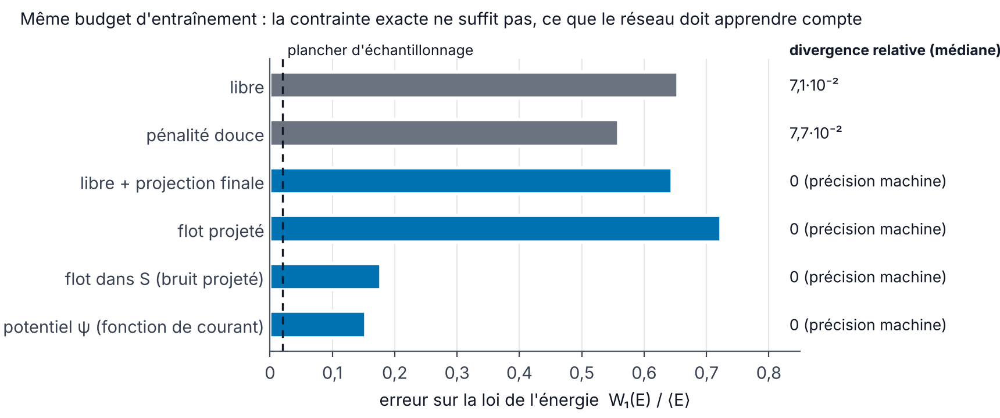
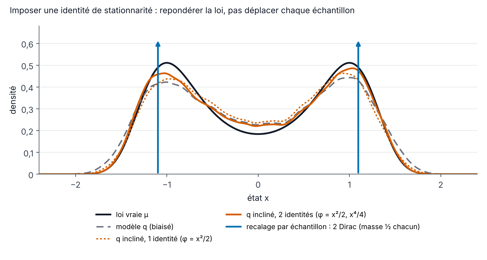

Modèles génératifs sous contraintes physiques
Préparation · niveau M2 → recherche · ≈ 30 h
Objectifs
Ce module est le dernier du parcours. Il réunit la physique des modules précédents (divergence nulle, symétries, bilans d’énergie, mesures invariantes) et les modèles génératifs du module 7 (diffusion, flow matching), pour répondre à la question centrale du stage : comment faire respecter une loi physique par un modèle qui génère des champs ? À la fin des trente heures de travail prévues, vous saurez :
- classer une contrainte physique dans l’une des quatre classes du stage (locale linéaire, locale non linéaire, symétrie, statistique « en loi »), dire si elle porte sur chaque échantillon ou sur la loi, et choisir le mécanisme adapté (architecture, projection, pénalité, guidage, inclinaison de la loi) ;
- construire un générateur dont les sorties sont à divergence nulle par construction (fonction de courant en 2D, potentiel vecteur en 3D avec choix de jauge), et démontrer qu’un champ de vitesse équivariant transporte une loi de base invariante sur une loi invariante ;
- démontrer que, si les données vivent dans un sous-espace linéaire S, la composante orthogonale du flot optimal vaut exactement -\mathbf{x}_\perp/(1-t), en déduire le comportement de la génération libre, de la projection finale et du flot projeté, et le vérifier numériquement ;
- expliquer l’écart de Jensen et pourquoi une pénalité sur la prédiction de fin de chemin est sans biais pour une contrainte linéaire mais biaisée pour une contrainte non linéaire ; situer PIDM, DiffusionPDE et la comparaison de Genuist et al. (2026) ;
- écrire le champ de vitesse conditionnel d’un flow matching guidé, implémenter le guidage de type DPS et mesurer son biais sur un exemple où la loi a posteriori est connue ;
- démontrer les identités de stationnarité \mathbb{E}_\mu[\mathcal{L}\varphi] = 0, montrer qu’imposer une telle identité échantillon par échantillon détruit la loi, et imposer l’identité par inclinaison exponentielle (I-projection) en connaissant ses limites ;
- évaluer un générateur de champs MHD avec des métriques physiques : divergence relative, spectres, hélicités, bilans, topologie (nombres de Betti, homologie persistante, points nuls magnétiques) ;
- lire de façon critique les cinq articles cités par l’offre de stage et dire ce que chacun apporte au stage.
Prérequis
Le point de départ est le niveau M1–M2 atteint à la fin des modules précédents. Il faut savoir manipuler la divergence, le rotationnel, la décomposition de Helmholtz–Hodge et la projection de Leray en Fourier (Calcul vectoriel et analyse de Fourier), connaître les équations de la MHD incompressible, leur bilan d’énergie et la symétrie \mathbf{B} \to -\mathbf{B} (Électromagnétisme, MHD et effet dynamo), savoir ce qu’est une mesure invariante et un générateur infinitésimal (Systèmes dynamiques, bifurcations et mesures invariantes), et maîtriser l’espérance conditionnelle, la divergence de Kullback–Leibler et les distances de Wasserstein (Probabilités, statistiques et transport optimal).
Le module suppose surtout acquis le module Modèles génératifs : diffusion et flow matching : flow matching (Lipman et al. 2023), chemin linéaire \mathbf{x}_t = (1-t)\mathbf{x}_0 + t\mathbf{x}_1, perte de flow matching conditionnel, champ de vitesse optimal v^\star(\mathbf{x}, t) = \mathbb{E}[\mathbf{x}_1 - \mathbf{x}_0 \mid \mathbf{x}_t = \mathbf{x}], échantillonnage par schéma d’Euler. Côté code, il faut savoir entraîner un petit réseau avec PyTorch (Apprentissage profond pour la physique). Le module Mécanique des fluides et turbulence sert au chapitre 7 (spectres d’énergie).
Notations : celles du site (specs/notations.md). Le temps du flot t \in [0, 1] n’est pas un temps physique : t = 0 est le bruit, t = 1 les données. Le champ de vitesse du flot v_\theta ne doit pas être confondu avec la vitesse physique \mathbf{u}.
Plan de travail
Le niveau indique la difficulté : 1 pour les fondations, 2 pour le cœur du module, 3 pour ce qui touche déjà aux questions de recherche du stage. Il ne redescend jamais d’une séance à la suivante.
| Séance | Durée | Niveau | Contenu | Exercices |
|---|---|---|---|---|
| 1 | 2,5 h | 1 | Chapitre 1 : cadre, contraintes par échantillon et en loi, les quatre classes, mécanismes | 1 |
| 2 | 3 h | 1 | Chapitre 2, section 2.1 : potentiels, fonction de courant, potentiel vecteur et jauge | 2 |
| 3 | 3 h | 2 | Chapitre 2, section 2.2 : équivariance, symétrisation, symétrie \mathbf{B} \to -\mathbf{B} | 4, 5 |
| 4 | 4 h | 2 | Chapitre 3 : projection de Leray, flot optimal sur un sous-espace, flot projeté, expérience numérique | 3, 6 |
| 5 | 3 h | 2 | Chapitre 4 : pénalités, écart de Jensen, PIDM, DiffusionPDE, comparaison de Genuist et al. | 7, 8 |
| 6 | 3 h | 3 | Chapitre 5 : guidage à l’échantillonnage (DPS, Universal guidance) | 12 |
| 7 | 4 h | 3 | Chapitre 6 : identités de stationnarité, I-projection, perte de stationnarité | 9, 10, 11, 14 |
| 8 | 3,5 h | 3 | Chapitre 7 : évaluation physique (spectres, hélicités, bilans, topologie) | 13 |
| 9 | 4 h | 3 | Chapitre 8 : lecture guidée des cinq références de l’offre ; protocole de comparaison | 15 |
| Total | 30 h | 8 chapitres | 15 exercices |
Chaque séance se termine par les exercices indiqués, à faire avant de lire leur solution. Les blocs de code sont courts (moins de 30 secondes chacun sur un processeur, un seul fil d’exécution) : recopiez-les, exécutez-les, puis modifiez-les. Les sorties recopiées en commentaire sont celles obtenues en exécutant les blocs tels quels.
Trois sortes de résultats apparaissent dans ce module, et il faut les distinguer. Les résultats publiés sont attribués à leurs auteurs, avec la référence. Les résultats mesurés sur cette page viennent des blocs de code, à petite échelle et pour une seule graine aléatoire. Les expériences du stage sont décrites dans le rapport : ce module y renvoie sans en recopier les chiffres.
1. Taxonomie des contraintes physiques
« Imposer la physique » à un modèle génératif peut vouloir dire des choses très différentes. La divergence nulle de \mathbf{B} est vraie pour chaque champ ; le bilan d’énergie d’un état turbulent stationnaire n’est vrai qu’en moyenne ; la symétrie \mathbf{B} \to -\mathbf{B} n’est vraie que pour la loi. Confondre ces cas conduit à des erreurs : on peut détruire la loi qu’on cherche à apprendre en imposant échantillon par échantillon une contrainte qui ne vaut qu’en moyenne. Ce chapitre fixe le vocabulaire utilisé dans tout le module et dans le rapport.
1.1 Le cadre
Définition 1.1 — Cadre du stage Un système physique discrétisé est décrit par un état \mathbf{x} \in \mathbb{R}^D (par exemple les valeurs de \mathbf{u} et \mathbf{B} sur une grille, ou leurs coefficients de Fourier), qui évolue selon
\mathrm{d}\mathbf{x} = F_{\boldsymbol\lambda}(\mathbf{x})\,\mathrm{d}t + \Sigma\,\mathrm{d}W_t,
où \boldsymbol\lambda regroupe les paramètres de contrôle (Re, Rm, propriétés des matériaux) et où \Sigma = 0 dans le cas déterministe. Les données sont des instantanés d’un état statistiquement stationnaire : leur loi est une mesure invariante \mu_{\boldsymbol\lambda} de la dynamique. Le modèle génératif conditionnel produit une loi q_\theta(\cdot\mid\boldsymbol\lambda), image de la loi gaussienne \mathcal{N}(0, I) par le flot au temps 1 de l’équation \dot{\mathbf{z}} = v_\theta(\mathbf{z}, t, \boldsymbol\lambda).
Deux objets coexistent donc : un échantillon \mathbf{x} (un champ) et une loi (\mu_{\boldsymbol\lambda} ou q_\theta). Une contrainte physique peut porter sur l’un ou sur l’autre.
Définition 1.2 — Contrainte par échantillon, contrainte en loi Une contrainte par échantillon est un ensemble \mathcal{C} \subset \mathbb{R}^D tel que \mu_{\boldsymbol\lambda}(\mathcal{C}) = 1 : presque tout champ physique appartient à \mathcal{C}. Une contrainte en loi est une propriété de la mesure \mu_{\boldsymbol\lambda} qui n’est pas de cette forme, par exemple une égalité d’espérances \mathbb{E}_{\mu_{\boldsymbol\lambda}}[g] = 0 ou une invariance g_\#\mu_{\boldsymbol\lambda} = \mu_{\boldsymbol\lambda}, où g_\#\mu désigne la mesure image de \mu par l’application g.
Une contrainte par échantillon se vérifie sur un seul champ généré. Une contrainte en loi ne se vérifie que sur un ensemble de champs générés, avec une erreur statistique. Cette différence décide de tout ce qui suit.
1.2 Les quatre classes
Définition 1.3 — Les quatre classes de contraintes On distingue quatre classes, notées C1 à C4 dans le rapport et dans le sujet de thèse.
- C1, locale linéaire : \mathbf{x} \in S avec S = \ker A un sous-espace linéaire. Exemples : \nabla\cdot\mathbf{u} = 0, \nabla\cdot\mathbf{B} = 0, conditions aux limites linéaires homogènes (\mathbf{u} = \mathbf{0} ou \mathbf{B}\cdot\mathbf{n} = 0 sur une paroi).
- C2, locale non linéaire : c(\mathbf{x}) = 0 avec c non linéaire. Exemples : résidu d’une EDP stationnaire (l’équation de Darcy, un équilibre magnétohydrostatique), une contrainte algébrique comme |\mathbf{x}| = 1.
- C3, symétrie : g_\#\mu_{\boldsymbol\lambda} = \mu_{\boldsymbol\lambda} pour tout g d’un groupe G. Exemples : \mathbf{B} \to -\mathbf{B}, la rotation R_\pi de l’expérience VKS en contra-rotation exacte, (Q, D, V) \to (-Q, -D, V) dans le modèle de Gissinger.
- C4, statistique : \mathbb{E}_{\mu_{\boldsymbol\lambda}}[\mathcal{L}_{\boldsymbol\lambda}\varphi] = 0 pour des fonctions test \varphi, où \mathcal{L}_{\boldsymbol\lambda} est le générateur de la dynamique (chapitre 6). Exemple : le bilan d’énergie moyen d’un état stationnaire, injection moyenne égale à dissipation moyenne.
C1 et C2 sont des contraintes par échantillon ; C3 et C4 sont des contraintes en loi.
On pourrait croire que les équations d’évolution elles-mêmes fournissent une contrainte par échantillon : « le champ généré doit vérifier l’EDP ». Ce n’est pas le cas pour un instantané d’une dynamique instationnaire, et la proposition suivante l’énonce en dimension finie.
Proposition 1.4 — Un instantané ne « vérifie » pas une EDP d’évolution Soit \dot{\mathbf{x}} = F(\mathbf{x}) avec F localement lipschitzienne sur un ouvert U \subset \mathbb{R}^D. Tout point \mathbf{x}^\ast \in U est l’état, à un instant donné, d’une solution de l’équation. Pour un instantané, le résidu \partial_t\mathbf{x} - F(\mathbf{x}) n’est pas calculable (la dérivée en temps n’est pas observée), et toute grandeur de la forme \mathrm{d}\varphi/\mathrm{d}t = \nabla\varphi\cdot F(\mathbf{x}) est une identité calculable sur l’instantané, pas une contrainte. Les seules contraintes par échantillon que fournit le modèle physique sont celles qui ne font pas intervenir le temps : conditions de type C1 (divergence, conditions aux limites) et relations diagnostiques (par exemple la pression, déterminée par la vitesse).
Preuve. Par le théorème de Cauchy–Lipschitz, le problème \dot{\mathbf{x}} = F(\mathbf{x}), \mathbf{x}(0) = \mathbf{x}^\ast a une solution sur un intervalle [0, \tau) avec \tau > 0 ; \mathbf{x}^\ast est son état à l’instant 0. Aucune propriété de \mathbf{x}^\ast seul ne peut donc distinguer un état « physique » d’un état « non physique » au sens de l’équation d’évolution. Si \varphi est différentiable, la règle de dérivation des fonctions composées donne \frac{\mathrm{d}}{\mathrm{d}t}\varphi(\mathbf{x}(t)) = \nabla\varphi(\mathbf{x})\cdot F(\mathbf{x}), expression qui ne dépend que de l’état. ∎
Pour une EDP, l’énoncé demande des précautions sur l’espace fonctionnel (régularité, conditions de compatibilité), mais le message est le même : l’information que l’équation d’évolution apporte sur les instantanés stationnaires est statistique. Elle passe par la loi, et c’est l’objet du chapitre 6. Une EDP stationnaire (comme l’équation de Darcy dans PIDM) donne au contraire une vraie contrainte par échantillon de classe C2, car chaque champ solution la vérifie.
Exemple 1.5 — Ce qui vaut pour chaque champ et ce qui vaut pour la loi en MHD forcée Considérons des instantanés (\mathbf{u}, \mathbf{B}) d’une turbulence MHD forcée dans une boîte périodique, à paramètres (Re, Rm) fixés. Chaque instantané vérifie \nabla\cdot\mathbf{u} = 0 et \nabla\cdot\mathbf{B} = 0 (C1). Sur chaque instantané, on calcule l’injection P = \langle\mathbf{u}\cdot\mathbf{f}\rangle et la dissipation \varepsilon = \nu\langle|\nabla\mathbf{u}|^2\rangle + \eta\langle|\nabla\mathbf{B}|^2\rangle ; la différence P - \varepsilon = \mathrm{d}E/\mathrm{d}t fluctue d’un instantané à l’autre et n’a aucune raison d’être nulle. Seule la moyenne est nulle, \mathbb{E}[P] = \mathbb{E}[\varepsilon] (C4). Enfin, la loi des instantanés est invariante par \mathbf{B} \to -\mathbf{B} si la dynamique visite les deux polarités, mais chaque instantané a une polarité donnée (C3).

1.3 À chaque classe son mécanisme
Un modèle génératif offre cinq endroits où agir : l’architecture (ce que le réseau peut produire), la projection (corriger l’état pendant ou après l’échantillonnage), la pénalité (un terme ajouté à la perte d’entraînement), le guidage (modifier le champ de vitesse à l’échantillonnage, sans réentraîner), et l’inclinaison de la loi (repondérer les échantillons, ou entraîner vers une loi repondérée). Le tableau suivant résume les choix défendus dans ce module ; les chapitres 2 à 6 les justifient un par un.
| Classe | Vraie pour | Mécanisme exact | Mécanisme approché | Chapitre |
|---|---|---|---|---|
| C1 locale linéaire | chaque échantillon | potentiels (architecture) ; projection orthogonale (Leray) | pénalité, guidage | 2, 3, 4 |
| C2 locale non linéaire | chaque échantillon | projection non linéaire (Gauss–Newton, PCFM) | pénalité (écart de Jensen), guidage | 3, 4, 5 |
| C3 symétrie | la loi | champ de vitesse équivariant et loi de base invariante | augmentation de données | 2 |
| C4 statistique | la loi | inclinaison exponentielle (I-projection) de la loi générée | perte de stationnarité à l’entraînement | 6 |
Deux erreurs de catégorie reviennent souvent. La première consiste à imposer une contrainte de classe C3 ou C4 à chaque échantillon : on obtient une loi concentrée sur un ensemble que la vraie loi ne charge pas (corollaire 6.4). La seconde consiste à traiter une contrainte C1 par une pénalité : la violation diminue sans s’annuler, alors qu’un mécanisme exact existe et ne coûte presque rien.
Le code suivant illustre les classes C3 et C4 sur le système le plus simple possible : une particule dans un double puits, soumise à un bruit. La dynamique est symétrique par x \to -x ; sa loi stationnaire l’est aussi, mais chaque échantillon a un signe. L’identité de stationnarité \mathbb{E}_\mu[\mathcal{L}\varphi] = 0 (démontrée au chapitre 6) est vraie en moyenne, alors que \mathcal{L}\varphi fluctue d’un échantillon à l’autre.
import numpy as np
rng = np.random.default_rng(0)
# Double puits bruité : dx = F(x) dt + sigma dW, F(x) = x - x^3 (potentiel V = x^4/4 - x^2/2).
# La dynamique est symétrique (x -> -x) ; sa loi stationnaire est mu(x) ∝ exp(-2V/sigma^2).
sigma, dt, nsteps, N = 0.7, 0.01, 4000, 4000
F = lambda x: x - x**3
x = rng.normal(size=N)
for _ in range(nsteps): # Euler-Maruyama, 4000 particules indépendantes
x += F(x) * dt + sigma * np.sqrt(dt) * rng.normal(size=N)
# Générateur L phi = F phi' + (sigma^2/2) phi''
L_energie = lambda x: x * F(x) + sigma**2 / 2 # phi = x^2/2 (une « énergie »)
L_impair = lambda x: F(x) # phi = x
# Valeurs exactes par quadrature de la densité stationnaire
g = np.linspace(-3, 3, 6001)
p = np.exp(-2 * (g**4 / 4 - g**2 / 2) / sigma**2)
p /= np.trapezoid(p, g)
print("C3 (symétrie) : chaque échantillon a un signe ; fraction x > 0 =", f"{np.mean(x > 0):.3f}")
print(" moyenne de x (loi) =", f"{x.mean():+.3f}", "(exacte 0)")
for nom, Lphi in [("phi = x^2/2", L_energie), ("phi = x", L_impair)]:
v = Lphi(x)
exact = np.trapezoid(Lphi(g) * p, g)
print(f"C4 {nom:11s} : E[L phi] = {v.mean():+.3f} ± {v.std() / np.sqrt(N):.3f} (exact {exact:+.1e}),"
f" écart type par échantillon = {v.std():.3f}, fraction |L phi| < 0,01 : {np.mean(np.abs(v) < 0.01):.3f}")
# sortie :
# C3 (symétrie) : chaque échantillon a un signe ; fraction x > 0 = 0.499
# moyenne de x (loi) = -0.001 (exacte 0)
# C4 phi = x^2/2 : E[L phi] = -0.009 ± 0.013 (exact +6.9e-18), écart type par échantillon = 0.813, fraction |L phi| < 0,01 : 0.006
# C4 phi = x : E[L phi] = -0.006 ± 0.010 (exact +2.1e-17), écart type par échantillon = 0.613, fraction |L phi| < 0,01 : 0.014La moyenne de \mathcal{L}\varphi est nulle à l’erreur statistique près (environ un écart type de la moyenne), alors que son écart type par échantillon vaut 0,6 à 0,8 : moins de 2 % des échantillons ont |\mathcal{L}\varphi| < 0{,}01. Une contrainte « \mathcal{L}\varphi(\mathbf{x}) = 0 pour chaque \mathbf{x} » rejetterait donc presque toute la vraie loi.
Ce qu’il faut retenir — chapitre 1
- Une contrainte porte soit sur chaque échantillon (\mu(\mathcal{C}) = 1), soit sur la loi (espérance, invariance).
- Quatre classes : C1 locale linéaire et C2 locale non linéaire (par échantillon), C3 symétrie et C4 statistique (en loi).
- Un instantané d’une dynamique instationnaire ne « vérifie » pas l’équation d’évolution : \mathrm{d}\varphi/\mathrm{d}t est une identité calculable ; seule sa moyenne sous la loi stationnaire est contrainte.
- À chaque classe son mécanisme : architecture ou projection pour C1, projection non linéaire ou pénalité pour C2, équivariance pour C3, inclinaison ou perte en loi pour C4.
2. Contraintes dures par l’architecture
La façon la plus sûre de faire respecter une contrainte est de rendre sa violation impossible : si le réseau ne peut produire que des champs à divergence nulle, ou que des lois symétriques, aucune erreur d’apprentissage ne peut casser la contrainte. Ce chapitre traite les deux cas où c’est possible et peu coûteux : les potentiels pour C1, l’équivariance pour C3.
2.1 Générer des potentiels
Proposition 2.1 — Contrainte linéaire par construction Soit S \subset \mathbb{R}^D un sous-espace et \mathcal{C} : \mathbb{R}^m \to \mathbb{R}^D une application (le « décodeur ») telle que \mathrm{Im}\,\mathcal{C} \subset S. Si le modèle génère \mathbf{z} \sim q_{\mathbf{z}} puis renvoie \mathbf{x} = \mathcal{C}(\mathbf{z}), alors la loi générée vérifie q(S) = 1, quelle que soit q_{\mathbf{z}}, donc quelle que soit la qualité de l’apprentissage.
Preuve. q(S) = q_{\mathbf{z}}(\mathcal{C}^{-1}(S)) = q_{\mathbf{z}}(\mathbb{R}^m) = 1, car \mathcal{C}^{-1}(S) = \mathbb{R}^m dès que l’image de \mathcal{C} est contenue dans S. ∎
La proposition est triviale ; tout l’intérêt est dans le choix de \mathcal{C}. En 2D, la fonction de courant fournit le décodeur : \mathbf{u} = \nabla^\perp\psi = (\partial_y\psi, -\partial_x\psi) vérifie \nabla\cdot\mathbf{u} = \partial_x\partial_y\psi - \partial_y\partial_x\psi = 0 pour toute fonction \psi deux fois dérivable. C’est exactement ce que fait FunDiff (Wang et al. 2026) sur l’écoulement de Kolmogorov : le décodeur produit \psi, la vitesse est obtenue par dérivation, et les auteurs rapportent une divergence prédite « négligeable », contre une divergence nettement plus grande sans cette construction (figures seulement, aucune valeur numérique dans le texte). De même, le champ magnétique 2D s’écrit \mathbf{B} = \nabla^\perp a.
En 3D, la généralisation est le potentiel vecteur : \mathbf{B} = \nabla\times\mathbf{A} vérifie \nabla\cdot\mathbf{B} = 0 pour tout \mathbf{A}. Mais l’application \mathbf{A} \mapsto \nabla\times\mathbf{A} n’est pas injective : \mathbf{A} et \mathbf{A} + \nabla\chi donnent le même \mathbf{B}. Pour un modèle génératif, cette redondance pose un problème d’identifiabilité : si les données d’entraînement sont des potentiels pris dans des jauges quelconques, la loi de \mathbf{A} n’est pas définie par la physique.
Définition 2.2 — Jauge de Coulomb sur le tore Sur le tore \mathbb{T}^3 = [0, 2\pi)^3, un champ \mathbf{B} à divergence nulle et de moyenne nulle admet un potentiel vecteur dans la jauge de Coulomb, c’est-à-dire tel que \nabla\cdot\mathbf{A} = 0 et \langle\mathbf{A}\rangle = \mathbf{0}. En Fourier, pour \mathbf{k} \neq \mathbf{0} :
\hat{\mathbf{A}}_{\mathbf{k}} = \frac{i\,\mathbf{k}\times\hat{\mathbf{B}}_{\mathbf{k}}}{|\mathbf{k}|^2}, \qquad \hat{\mathbf{A}}_{\mathbf{0}} = \mathbf{0}.
Proposition 2.3 — Existence et unicité du potentiel de Coulomb Sur le tore, pour tout \mathbf{B} de carré intégrable, à divergence nulle et de moyenne nulle, le champ \mathbf{A} de la définition 2.2 vérifie \nabla\times\mathbf{A} = \mathbf{B}, \nabla\cdot\mathbf{A} = 0, et c’est le seul champ de moyenne nulle ayant ces deux propriétés. En conséquence, l’application \mathbf{A} \mapsto \nabla\times\mathbf{A} est une bijection des champs de Coulomb de moyenne nulle sur les champs à divergence nulle de moyenne nulle, et la loi de \mathbf{B} détermine celle de son potentiel de Coulomb.
Preuve. En Fourier, le rotationnel s’écrit \widehat{\nabla\times\mathbf{A}}_{\mathbf{k}} = i\mathbf{k}\times\hat{\mathbf{A}}_{\mathbf{k}}. Avec la formule de la définition 2.2 et l’identité du double produit vectoriel,
i\mathbf{k}\times\frac{i\,\mathbf{k}\times\hat{\mathbf{B}}_{\mathbf{k}}}{|\mathbf{k}|^2} = -\frac{\mathbf{k}(\mathbf{k}\cdot\hat{\mathbf{B}}_{\mathbf{k}}) - |\mathbf{k}|^2\hat{\mathbf{B}}_{\mathbf{k}}}{|\mathbf{k}|^2} = \hat{\mathbf{B}}_{\mathbf{k}},
car \mathbf{k}\cdot\hat{\mathbf{B}}_{\mathbf{k}} = 0 (divergence nulle). Par ailleurs \mathbf{k}\cdot(\mathbf{k}\times\hat{\mathbf{B}}_{\mathbf{k}}) = 0, donc \nabla\cdot\mathbf{A} = 0. Pour l’unicité, si \mathbf{A}_1 et \mathbf{A}_2 conviennent, leur différence \mathbf{D} vérifie \mathbf{k}\times\hat{\mathbf{D}}_{\mathbf{k}} = \mathbf{0} et \mathbf{k}\cdot\hat{\mathbf{D}}_{\mathbf{k}} = 0 pour tout \mathbf{k} \neq \mathbf{0} : \hat{\mathbf{D}}_{\mathbf{k}} est à la fois colinéaire et orthogonal à \mathbf{k}, donc nul ; et \hat{\mathbf{D}}_{\mathbf{0}} = \mathbf{0} par la condition de moyenne. La bijection en découle, et la loi du potentiel de Coulomb est la mesure image de la loi de \mathbf{B} par l’application linéaire continue \mathbf{B} \mapsto \mathbf{A}. ∎
Le mode \mathbf{k} = \mathbf{0} demande une attention particulière : un champ uniforme \mathbf{B}_0 est à divergence nulle mais n’est le rotationnel d’aucun champ périodique. Un générateur de potentiels périodiques ne peut donc pas produire de champ moyen ; s’il en faut un (champ imposé, dynamo à grande échelle dans une boîte), on le génère à part, comme trois nombres supplémentaires.
Remarque 2.4 — Domaines bornés Dans un domaine borné comme le cylindre de VKS ou de DRESDYN, le potentiel vecteur existe sous des conditions de flux nul à travers chaque composante du bord, et l’unicité demande une condition au bord sur \mathbf{A} en plus de \nabla\cdot\mathbf{A} = 0 : soit \mathbf{A}\cdot\mathbf{n} = 0, soit \mathbf{A}\times\mathbf{n} = \mathbf{0}, la seconde n’étant possible que si \mathbf{B}\cdot\mathbf{n} = 0 (Amrouche, Bernardi, Dauge et Girault 1998 ; Amrouche et Seloula 2011). Les conditions aux limites de \mathbf{B} (raccord à un champ extérieur potentiel, perméabilité discontinue) deviennent alors des conditions sur \mathbf{A}, et l’hélicité magnétique \int\mathbf{A}\cdot\mathbf{B} dépend de la jauge si \mathbf{B}\cdot\mathbf{n} \neq 0 (Berger et Field 1984). C’est l’un des verrous du passage aux dynamos réalistes.
Remarque 2.5 — « Divergence nulle » dépend de l’opérateur discret Sur une grille, \nabla\cdot(\nabla\times\mathbf{A}) = 0 n’est exact que si la divergence et le rotationnel discrets sont compatibles : dérivées spectrales, ou différences finies sur grille décalée (de type Yee ou MAC). Si l’on calcule \mathbf{B} par Fourier puis sa divergence par différences centrées, on trouve une erreur de troncature qui n’a rien à voir avec le modèle. La métrique de divergence doit donc être calculée avec le même opérateur que celui qui définit la contrainte (chapitre 7).
Le code suivant vérifie la proposition 2.3 et les deux remarques sur un champ aléatoire de 16^3 points.
import numpy as np
rng = np.random.default_rng(1)
# Tore [0, 2pi)^3 discrétisé en n^3 points ; dérivées spectrales exactes sur les modes représentés.
n = 16
k1 = np.fft.fftfreq(n, d=1.0 / n)
K = np.stack(np.meshgrid(k1, k1, k1, indexing="ij")) # (3, n, n, n)
k2 = (K**2).sum(0); k2[0, 0, 0] = 1.0
garde = (np.abs(K) < n // 2).all(0) # on retire les modes de Nyquist
fft, ifft = (lambda f: np.fft.fftn(f, axes=(-3, -2, -1))), (lambda f: np.fft.ifftn(f, axes=(-3, -2, -1)).real)
curl = lambda Ah: np.stack([1j * (K[1] * Ah[2] - K[2] * Ah[1]),
1j * (K[2] * Ah[0] - K[0] * Ah[2]),
1j * (K[0] * Ah[1] - K[1] * Ah[0])])
div = lambda Fh: (1j * K * Fh).sum(0)
# Un potentiel vecteur aléatoire « quelconque » (pas de jauge imposée), spectre en k^-2
A = ifft(fft(rng.normal(size=(3, n, n, n))) * garde / k2)
Ah = fft(A)
Bh = curl(Ah); B = ifft(Bh)
rel = lambda Fh: np.linalg.norm(div(Fh)) / np.sqrt((k2 * (np.abs(Fh)**2).sum(0)).sum()) # |div| / |grad|
print("divergence relative de B = rot A :", f"{rel(Bh):.1e}")
# Liberté de jauge : A + grad chi donne le même B
chi_h = fft(rng.normal(size=(n, n, n))) * garde / k2
Ah2 = Ah + 1j * K * chi_h
print("max |rot(A + grad chi) - rot A| :", f"{np.abs(ifft(curl(Ah2)) - B).max():.1e}")
# Jauge de Coulomb reconstruite à partir de B : A_c = i k x B / |k|^2
Ach = 1j * np.cross(K, Bh, axis=0) / k2
print("|div A_c| relatif, |rot A_c - B| max :", f"{rel(Ach):.1e}", f"{np.abs(ifft(curl(Ach)) - B).max():.1e}")
# Hélicité magnétique <A.B> : identique dans les trois jauges (tore, B de moyenne nulle)
H = lambda Ah_: np.mean((ifft(Ah_) * B).sum(0))
print("H_M avec A, A + grad chi, A_c :", f"{H(Ah):.6f} {H(Ah2):.6f} {H(Ach):.6f}")
# Piège : mesurer la divergence avec un AUTRE opérateur discret (différences centrées)
h = 2 * np.pi / n
dc = lambda f, ax: (np.roll(f, -1, ax) - np.roll(f, 1, ax)) / (2 * h)
div_fd = dc(B[0], 0) + dc(B[1], 1) + dc(B[2], 2)
grad_fd = np.sqrt(sum(dc(B[i], j)**2 for i in range(3) for j in range(3)).mean())
print("divergence relative de B en diff. finies:", f"{np.sqrt((div_fd**2).mean()) / grad_fd:.1e}")
# sortie :
# divergence relative de B = rot A : 3.9e-17
# max |rot(A + grad chi) - rot A| : 1.4e-16
# |div A_c| relatif, |rot A_c - B| max : 3.4e-17 1.1e-16
# H_M avec A, A + grad chi, A_c : 0.002351 0.002351 0.002351
# divergence relative de B en diff. finies: 2.2e-01Trois résultats ressortent. La divergence de \nabla\times\mathbf{A} est nulle à la précision machine, quelle que soit la jauge. L’hélicité magnétique ne dépend pas de la jauge sur le tore (on le démontre à la proposition 7.4). En revanche, le même champ \mathbf{B}, exactement solénoïdal au sens spectral, a une « divergence » relative de 22 % si on la mesure par différences centrées : ce chiffre ne mesure que l’incompatibilité des deux opérateurs, ici aggravée par l’énergie présente aux petites échelles. Les modes de Nyquist sont retirés parce que la dérivée spectrale d’un mode de Nyquist n’est pas définie de façon réelle.
D’autres architectures donnent des champs à divergence nulle sans passer par un potentiel scalaire ou vectoriel explicite. Richter-Powell, Lipman et Chen (2022) construisent des réseaux à divergence nulle en toute dimension à partir de formes différentielles (la divergence ligne par ligne d’un champ matriciel antisymétrique est nulle), avec un coût quadratique en la dimension ; ils montrent que ces réseaux sont universels sur le tore à un champ constant près. Pour le stage, le potentiel vecteur est la voie la plus directe en 3D, et ces réseaux sont une alternative quand on veut un champ défini en tout point (décodeur fonctionnel).
2.2 Équivariance et lois invariantes
La symétrie \mathbf{B} \to -\mathbf{B} est une propriété de la loi, pas des champs. Le bon outil n’est donc pas une contrainte sur la sortie, mais une contrainte sur le transport qui fabrique la loi.
Définition 2.6 — Action de groupe, invariance, équivariance Soit G un groupe fini qui agit sur \mathbb{R}^D par des isométries linéaires \mathbf{x} \mapsto g\mathbf{x}. Une loi \mu est G-invariante si g_\#\mu = \mu pour tout g \in G, c’est-à-dire si g\mathbf{X} a la même loi que \mathbf{X} quand \mathbf{X} \sim \mu. Un champ de vitesse v(\mathbf{x}, t) est G-équivariant si v(g\mathbf{x}, t) = g\,v(\mathbf{x}, t) pour tout g, \mathbf{x}, t.
Exemple 2.7 — Symétries du stage (a) En MHD incompressible, si (\mathbf{u}, \mathbf{B}) est solution, (\mathbf{u}, -\mathbf{B}) l’est aussi : la force de Lorentz (\nabla\times\mathbf{B})\times\mathbf{B} est quadratique en \mathbf{B} et l’équation d’induction est linéaire en \mathbf{B}. L’action g(\mathbf{u}, \mathbf{B}) = (\mathbf{u}, -\mathbf{B}) est une isométrie linéaire d’ordre 2. (b) Dans le modèle à trois modes de Gissinger (2012), l’action est (Q, D, V) \to (-Q, -D, V). (c) Dans une boîte carrée périodique, une turbulence forcée de façon isotrope a une loi invariante par le groupe diédral des rotations d’angle \pi/2 et des réflexions, qui agit sur un champ de vecteurs par (g\mathbf{u})(\mathbf{x}) = R\,\mathbf{u}(R^{-1}\mathbf{x}). (d) Dans l’expérience VKS en contra-rotation exacte, la rotation R_\pi d’angle \pi autour d’un axe perpendiculaire à l’axe du cylindre échange les deux turbines.
Proposition 2.8 — Champ équivariant et loi de base invariante donnent une loi invariante Soit v un champ de vitesse G-équivariant, assez régulier pour que l’équation \dot{\mathbf{z}} = v(\mathbf{z}, t) ait une solution unique \Phi_t(\mathbf{z}_0) sur [0, 1], et \gamma une loi de base G-invariante (par exemple \gamma = \mathcal{N}(0, I), invariante par toute isométrie linéaire). Alors q = (\Phi_1)_\#\gamma est G-invariante.
Preuve. Première démonstration (unicité des solutions). Fixons g \in G et \mathbf{z}_0. La courbe \mathbf{y}(t) = g\,\Phi_t(\mathbf{z}_0) vérifie \dot{\mathbf{y}} = g\,v(\Phi_t(\mathbf{z}_0), t) = v(g\Phi_t(\mathbf{z}_0), t) = v(\mathbf{y}, t) par équivariance, et \mathbf{y}(0) = g\mathbf{z}_0. Par unicité, \mathbf{y}(t) = \Phi_t(g\mathbf{z}_0) : le flot commute avec g. Alors, pour la mesure image,
g_\# q = g_\#(\Phi_1)_\#\gamma = (g\circ\Phi_1)_\#\gamma = (\Phi_1\circ g)_\#\gamma = (\Phi_1)_\#(g_\#\gamma) = (\Phi_1)_\#\gamma = q.
Seconde démonstration (équation de continuité). La densité \rho_t de (\Phi_t)_\#\gamma résout \partial_t\rho_t + \nabla\cdot(\rho_t v) = 0 avec \rho_0 = \gamma. Posons \tilde\rho_t(\mathbf{x}) = \rho_t(g^{-1}\mathbf{x}), densité de g_\#\rho_t (le jacobien de g vaut \pm 1). Comme g est orthogonale et v équivariant, un calcul direct de dérivation composée donne \nabla\cdot(\tilde\rho_t v)(\mathbf{x}) = [\nabla\cdot(\rho_t v)](g^{-1}\mathbf{x}) ; donc \tilde\rho_t résout la même équation avec la même donnée initiale \tilde\rho_0 = \gamma. Par unicité de la solution de l’équation de continuité (champ lipschitzien), \tilde\rho_t = \rho_t pour tout t, en particulier en t = 1. ∎
Cette proposition est un cas particulier du résultat de Köhler, Klein et Noé (2020) sur les flots normalisants équivariants. Elle dit quelque chose de fort : l’invariance de la loi générée est exacte, même si le réseau a mal appris la loi, et même si les données d’entraînement ne sont pas symétriques. Reste à construire un champ équivariant et à vérifier que cela ne coûte rien en précision.
Proposition 2.9 — Symétrisation et perte de flow matching Pour un champ v quelconque, le champ symétrisé
v_{\mathrm{sym}}(\mathbf{x}, t) = \frac{1}{|G|}\sum_{g\in G} g^{-1}\,v(g\mathbf{x}, t)
est G-équivariant. Si la loi des données \mu et la loi de base sont G-invariantes, la perte de flow matching en population \mathcal{J}(v) = \mathbb{E}\,\|v(\mathbf{x}_t, t) - (\mathbf{x}_1 - \mathbf{x}_0)\|^2 vérifie \mathcal{J}(v_{\mathrm{sym}}) \le \mathcal{J}(v).
Preuve. Équivariance. Pour h \in G, le changement d’indice g' = gh donne v_{\mathrm{sym}}(h\mathbf{x}, t) = \frac{1}{|G|}\sum_{g'} h\,g'^{-1}v(g'\mathbf{x}, t) = h\,v_{\mathrm{sym}}(\mathbf{x}, t).
Perte. Si \mu et \gamma sont invariantes, le triplet (g\mathbf{x}_0, g\mathbf{x}_1, g\mathbf{x}_t) a la même loi que (\mathbf{x}_0, \mathbf{x}_1, \mathbf{x}_t) (le couplage est indépendant et le chemin est linéaire). Avec l’isométrie g, on obtient \mathcal{J}(g^{-1}v(g\,\cdot)) = \mathbb{E}\|g^{-1}v(g\mathbf{x}_t) - (\mathbf{x}_1 - \mathbf{x}_0)\|^2 = \mathbb{E}\|v(g\mathbf{x}_t) - (g\mathbf{x}_1 - g\mathbf{x}_0)\|^2 = \mathcal{J}(v). La fonctionnelle \mathcal{J} est convexe en v (carré d’une norme) ; par l’inégalité de Jensen appliquée à la moyenne des |G| champs g^{-1}v(g\,\cdot), \mathcal{J}(v_{\mathrm{sym}}) \le \frac{1}{|G|}\sum_g\mathcal{J}(g^{-1}v(g\,\cdot)) = \mathcal{J}(v). ∎
Le champ optimal v^\star est donc lui-même équivariant quand la loi des données l’est (il est le minimiseur unique de la perte en population). Imposer l’équivariance ne retire rien à la classe de modèles : on restreint la recherche à un ensemble qui contient la solution. L’augmentation de données (ajouter g\mathbf{x} pour chaque \mathbf{x} du jeu d’entraînement) rend la loi empirique invariante, donc le minimiseur en population équivariant, mais le réseau appris ne l’est qu’approximativement. Pour un groupe fini petit comme \{\mathrm{id}, \mathbf{B} \mapsto -\mathbf{B}\}, la symétrisation coûte deux évaluations du réseau ; pour les rotations et réflexions d’une grille, on utilise des convolutions équivariantes (Cohen et Welling 2016).
Le code suivant reproduit, en deux dimensions, la situation du stage : la loi vraie est symétrique, mais le jeu d’entraînement est fini et déséquilibré (une simulation de durée finie a passé plus de temps dans une polarité que dans l’autre). On compare un flow matching libre et un flow matching dont le champ est antisymétrisé, v_{\mathrm{sym}}(\mathbf{x}) = \tfrac12(v(\mathbf{x}) - v(-\mathbf{x})).
import torch
torch.set_num_threads(1); torch.manual_seed(0)
# Loi vraie symétrique (g : x -> -x, analogue de (Q, D, V) -> (-Q, -D, V)), mais un jeu
# d'entraînement FINI et déséquilibré : 700 points dans le lobe +, 300 dans le lobe -.
c = torch.tensor([1.5, 0.8])
data = torch.cat([c + 0.3 * torch.randn(700, 2), -c + 0.3 * torch.randn(300, 2)])
def mlp():
return torch.nn.Sequential(torch.nn.Linear(3, 64), torch.nn.SiLU(), torch.nn.Linear(64, 64),
torch.nn.SiLU(), torch.nn.Linear(64, 2))
def train(net, vfun, steps=1500):
opt = torch.optim.Adam(net.parameters(), lr=2e-3)
for _ in range(steps):
x1 = data[torch.randint(len(data), (256,))]
x0, t = torch.randn(256, 2), torch.rand(256, 1)
xt = (1 - t) * x0 + t * x1
loss = ((vfun(net, xt, t) - (x1 - x0))**2).sum(1).mean()
opt.zero_grad(); loss.backward(); opt.step()
libre = lambda net, x, t: net(torch.cat([x, t], 1))
equiv = lambda net, x, t: 0.5 * (libre(net, x, t) - libre(net, -x, t)) # v(-x) = -v(x) exactement
@torch.no_grad()
def sample(net, vfun, z, nsteps=100):
x = z.clone()
for i in range(nsteps):
t = torch.full((len(x), 1), i / nsteps)
x = x + vfun(net, x, t) / nsteps
return x
z = torch.randn(4000, 2)
for nom, vfun in [("libre", libre), ("équivariant", equiv)]:
net = mlp(); train(net, vfun)
x, xm = sample(net, vfun, z), sample(net, vfun, -z)
print(f"{nom:12s}: fraction dans le lobe + = {(x[:, 0] > 0).float().mean():.3f},"
f" max |Phi(-z) + Phi(z)| = {(x + xm).abs().max():.1e}")
# sortie :
# libre : fraction dans le lobe + = 0.688, max |Phi(-z) + Phi(z)| = 2.7e+00
# équivariant : fraction dans le lobe + = 0.489, max |Phi(-z) + Phi(z)| = 0.0e+00Le modèle libre reproduit fidèlement le déséquilibre du jeu d’entraînement (69 % dans le lobe positif), qui est un artefact d’échantillonnage. Le modèle équivariant vérifie \Phi_1(-\mathbf{z}) = -\Phi_1(\mathbf{z}) exactement (l’écart est nul, pas seulement petit, car l’antisymétrisation est exacte en arithmétique flottante) : en tirant les bruits par paires (\mathbf{z}, -\mathbf{z}), la fraction serait exactement 1/2 ; avec 4000 tirages indépendants, on observe 0{,}489, à 1,4 écart type de 0{,}5. C’est le mécanisme retenu pour la symétrie (Q, D, V) \to (-Q, -D, V) dans l’expérience E1 du stage (rapport, E1) : les identités de stationnarité du chapitre 6 ne fixent pas les poids relatifs de deux composantes ergodiques symétriques, et la symétrie doit donc être imposée séparément.
Ce qu’il faut retenir — chapitre 2
- Un décodeur dont l’image est dans S rend la contrainte C1 exacte quelle que soit la qualité de l’apprentissage : \mathbf{u} = \nabla^\perp\psi en 2D, \mathbf{B} = \nabla\times\mathbf{A} en 3D.
- Le potentiel vecteur n’est défini qu’à un gradient près : on fixe la jauge de Coulomb (\hat{\mathbf{A}}_{\mathbf{k}} = i\mathbf{k}\times\hat{\mathbf{B}}_{\mathbf{k}}/|\mathbf{k}|^2) pour que la loi de \mathbf{A} soit bien définie ; le champ moyen se génère à part ; en domaine borné, la jauge et les conditions au bord sont un verrou.
- La divergence nulle n’a de sens qu’avec un opérateur discret donné, compatible avec le rotationnel.
- Champ de vitesse équivariant + loi de base invariante ⇒ loi générée exactement invariante ; la symétrisation ne dégrade pas la perte quand les données sont invariantes.
3. Contraintes dures par projection
Quand on ne veut pas changer la représentation (on génère directement \mathbf{u} ou \mathbf{B}, par exemple parce que le décodeur est imposé ou parce que la géométrie rend les potentiels malcommodes), on peut corriger l’état par une projection orthogonale sur S. La projection de Leray, vue au module 1, en est l’exemple central. Ce chapitre répond à une question précise : à quel moment projeter, et pourquoi le choix compte-t-il alors que la projection rend toujours la contrainte exacte ?
3.1 La projection de Leray
Définition 3.1 — Projection orthogonale sur les champs solénoïdaux Soit S \subset \mathbb{R}^D le sous-espace des champs discrets à divergence nulle et P le projecteur orthogonal sur S (P^2 = P, P^{\mathsf{T}} = P). Sur le tore, P est la projection de Leray, diagonale en Fourier : pour \mathbf{k} \neq \mathbf{0},
\widehat{(P\mathbf{u})}_{\mathbf{k}} = \Big(I - \frac{\mathbf{k}\mathbf{k}^{\mathsf{T}}}{|\mathbf{k}|^2}\Big)\hat{\mathbf{u}}_{\mathbf{k}},
et le mode moyen est conservé. On note \mathbf{x}_\parallel = P\mathbf{x} et \mathbf{x}_\perp = (I - P)\mathbf{x} les composantes de \mathbf{x} dans S et orthogonale à S.
Le module 1 démontre que P\mathbf{u} est le champ solénoïdal le plus proche de \mathbf{u} en norme L^2, que P commute avec les dérivées sur le tore, et que la projection devient un problème de Poisson global en présence de parois. Ici, seules comptent la linéarité et l’orthogonalité.
3.2 Le flot optimal quand les données vivent dans un sous-espace
Proposition 3.2 — Décomposition du flot optimal Supposons \mu(S) = 1 et \mathbf{x}_0 \sim \mathcal{N}(0, I) indépendant de \mathbf{x}_1 \sim \mu, avec \mathbf{x}_t = (1-t)\mathbf{x}_0 + t\mathbf{x}_1. Alors, pour t < 1, le champ de vitesse optimal du flow matching s’écrit
v^\star(\mathbf{x}, t) = \underbrace{\mathbb{E}\big[\mathbf{x}_1 - P\mathbf{x}_0 \,\big|\, P\mathbf{x}_t = P\mathbf{x}\big]}_{=:\,v_S(P\mathbf{x},\,t)\ \in\ S} \; - \; \frac{(I - P)\mathbf{x}}{1 - t}.
La composante dans S ne dépend que de P\mathbf{x}, et la composante orthogonale est explicite.
Preuve. On écrit \mathbf{x}_1 - \mathbf{x}_0 = (\mathbf{x}_1 - P\mathbf{x}_0) - (I - P)\mathbf{x}_0. Comme \mathbf{x}_1 \in S presque sûrement, (I - P)\mathbf{x}_t = (1 - t)(I - P)\mathbf{x}_0 : la composante orthogonale du bruit est une fonction de \mathbf{x}_t, et \mathbb{E}[(I-P)\mathbf{x}_0 \mid \mathbf{x}_t = \mathbf{x}] = (I - P)\mathbf{x}/(1 - t). Pour l’autre terme, l’isotropie du bruit gaussien rend P\mathbf{x}_0 et (I - P)\mathbf{x}_0 indépendants (vecteur gaussien de covariance I, composantes non corrélées dans une base adaptée à S \oplus S^\perp). Le triplet (\mathbf{x}_1, P\mathbf{x}_0, P\mathbf{x}_t) est donc indépendant de (I - P)\mathbf{x}_t = (1-t)(I-P)\mathbf{x}_0. Conditionner par \mathbf{x}_t revient à conditionner par le couple (P\mathbf{x}_t, (I-P)\mathbf{x}_t), et la seconde coordonnée, indépendante, peut être retirée du conditionnement. Enfin \mathbf{x}_1 - P\mathbf{x}_0 \in S, donc son espérance conditionnelle aussi. ∎
Corollaire 3.3 — Quatre conséquences Sous les hypothèses de la proposition 3.2 :
avec le champ exact v^\star, la composante orthogonale d’une trajectoire vérifie \mathbf{x}_\perp(t) = (1 - t)\,\mathbf{x}_\perp(0) : la génération libre atterrit exactement dans S en t = 1 ;
la composante dans S obéit à \dot{\mathbf{x}}_\parallel = v_S(\mathbf{x}_\parallel, t), qui ne voit pas \mathbf{x}_\perp ; donc, avec v^\star, la génération libre, la génération libre suivie d’une projection finale, le flot projeté (section 3.3), le flot dans S et la génération de potentiels donnent la même loi ;
les différences observées entre ces mécanismes viennent uniquement de l’erreur d’approximation du réseau et de ce qu’on lui demande d’apprendre, pas de la cible ;
la composante orthogonale de la cible, -\mathbf{x}_\perp/(1 - t), n’est pas bornée quand t \to 1 hors de S : c’est un terme de rappel raide que le réseau doit représenter.
Preuve.
- La composante orthogonale de l’équation est \dot{\mathbf{x}}_\perp = -\mathbf{x}_\perp/(1 - t), dont la solution est (1-t)\mathbf{x}_\perp(0). (b) La projection de l’équation sur S donne \dot{\mathbf{x}}_\parallel = P v^\star = v_S(\mathbf{x}_\parallel, t) ; la loi initiale de \mathbf{x}_\parallel(0) = P\mathbf{x}_0 est \mathcal{N}(0, P) dans tous les cas, et v_S est exactement le champ optimal du flow matching posé dans S (bruit P\mathbf{x}_0, données \mathbf{x}_1). Pour les potentiels, le flow matching posé sur \psi, avec son propre champ optimal, transporte le bruit sur la loi de \psi, image réciproque de \mu par la bijection linéaire \psi \mapsto \nabla^\perp\psi de l’espace des potentiels (de moyenne nulle) sur S ; l’image de cette loi par la bijection est \mu. (c) découle de (b). (d) est immédiat. ∎
La conséquence (b) est importante pour la lecture des résultats publiés : dans la limite d’un apprentissage parfait, tous les mécanismes exacts se valent. Ce qui les distingue en pratique est ce que le réseau doit apprendre et ce qu’il voit en entrée. La proposition suivante précise ce qui reste de la composante orthogonale avec un réseau imparfait et le schéma d’Euler, le plus utilisé.
Proposition 3.4 — Divergence finale d’une génération libre intégrée par Euler Écrivons la composante orthogonale du réseau sous la forme (I-P)v_\theta(\mathbf{x}, t) = -\mathbf{x}_\perp/(1-t) + \mathbf{e}(\mathbf{x}, t), où \mathbf{e} est l’erreur du réseau par rapport à la cible de la proposition 3.2. Avec le schéma d’Euler explicite sur la grille t_i = i h, h = 1/N, la composante orthogonale finale vaut exactement
\mathbf{x}_\perp^{(N)} = h\,\mathbf{e}\big(\mathbf{x}^{(N-1)}, t_{N-1}\big).
Elle ne dépend que de l’erreur du réseau au dernier pas, en t = 1 - h : les erreurs des pas précédents sont effacées par le terme de rappel.
Preuve. Le pas d’Euler s’écrit \mathbf{x}_\perp^{(i+1)} = \mathbf{x}_\perp^{(i)} - h\,\mathbf{x}_\perp^{(i)}/(1 - t_i) + h\,\mathbf{e}_i = \frac{1 - t_{i+1}}{1 - t_i}\,\mathbf{x}_\perp^{(i)} + h\,\mathbf{e}_i, avec \mathbf{e}_i = \mathbf{e}(\mathbf{x}^{(i)}, t_i). Au dernier pas, 1 - t_N = 0, donc \mathbf{x}_\perp^{(N)} = 0\cdot\mathbf{x}_\perp^{(N-1)} + h\,\mathbf{e}_{N-1}. ∎
Deux remarques pratiques en découlent. D’abord, avec le champ exact (\mathbf{e} = 0), le schéma d’Euler à pas fixe résout exactement la composante orthogonale, quel que soit h (le facteur se télescope). Ensuite, un schéma d’ordre 2 de type Heun, ou un schéma de Runge–Kutta, évalue le champ en t = 1 au dernier pas, là où la cible orthogonale est infinie hors de S : ces schémas demandent d’arrêter l’intégration en t = 1 - \delta. Mais l’essentiel est ailleurs : au dernier pas, la cible -\mathbf{x}_\perp/h est une fonction très raide de \mathbf{x}_\perp, qu’un réseau de taille raisonnable représente mal ; la divergence résiduelle d’une génération libre mesure cette difficulté (exercice 6).
3.3 Flot projeté et flot dans S
Définition 3.5 — Projection finale, flot projeté, flot dans S Avec un champ v_\theta et le schéma d’Euler :
- la projection finale intègre librement depuis \mathbf{z} \sim \mathcal{N}(0, I), puis renvoie P\mathbf{x}^{(N)} ;
- le flot projeté part de P\mathbf{z} et reprojette après chaque pas : \mathbf{x}^{(i+1)} = P\big(\mathbf{x}^{(i)} + h\,v_\theta(\mathbf{x}^{(i)}, t_i)\big) ;
- le flot dans S utilise le flot projeté à l’échantillonnage et un bruit projeté P\mathbf{x}_0 à l’entraînement : le réseau n’est jamais évalué hors de S.
Proposition 3.6 — Le flot projeté reste dans S Le flot projeté reste dans S à chaque pas, quel que soit v_\theta. Avec le champ exact v^\star, il coïncide pas à pas avec le schéma d’Euler du flow matching posé dans S, donc il a la même loi limite que les autres mécanismes du corollaire 3.3.
Preuve. Chaque itéré est l’image d’un vecteur par P, donc appartient à S. Si \mathbf{x}^{(i)} \in S, alors (I - P)\mathbf{x}^{(i)} = 0 et, par la proposition 3.2, P v^\star(\mathbf{x}^{(i)}, t_i) = v_S(\mathbf{x}^{(i)}, t_i) ; le pas s’écrit \mathbf{x}^{(i+1)} = \mathbf{x}^{(i)} + h\,v_S(\mathbf{x}^{(i)}, t_i), qui est le pas d’Euler du problème posé dans S, avec la même donnée initiale P\mathbf{z} \sim \mathcal{N}(0, P). ∎
Avec un réseau appris, le flot projeté présente un défaut que la proposition ne voit pas. Si v_\theta a été entraîné avec un bruit plein, il n’a vu, à t < 1, que des entrées dont la composante orthogonale vaut (1-t)\mathbf{x}_\perp(0), de norme de l’ordre de (1-t)\sqrt{\dim S^\perp}. Le flot projeté l’évalue sur des entrées à composante orthogonale nulle : c’est un décalage de distribution, dont l’effet dépend du réseau. Le flot dans S supprime ce décalage, et supprime aussi le terme raide de la cible : à l’entraînement, \mathbf{x}_1 - P\mathbf{x}_0 \in S.
Le schéma interactif suivant isole deux défauts typiques d’un réseau imparfait sur un exemple où S est l’axe horizontal du plan et où les données forment deux bosses sur cet axe. La composante dans S du champ est exacte ; on peut tronquer la raideur (le réseau ne sait représenter -y/(1-t) que jusqu’à 1 - t = \tau) et ajouter une fuite de la composante orthogonale vers S (le réseau ajoute \kappa\,y à la vitesse horizontale).
Avec \tau = 0 et \kappa = 0, on vérifie le corollaire 3.3 : la composante orthogonale finale est nulle, et l’erreur sur la loi dans S ne reflète que l’erreur d’échantillonnage (2000 particules) et le schéma d’Euler. La troncature \tau > 0 laisse une composante orthogonale finale : c’est la « divergence » d’une génération libre. La fuite \kappa > 0 déforme la loi dans S ; la projection finale annule la divergence mais pas cette déformation, alors que le flot projeté, qui maintient y = 0, la supprime dans cet exemple.
3.4 Travaux publiés
Plusieurs travaux récents imposent une contrainte dure pendant l’échantillonnage. Ils diffèrent par l’objet projeté (l’état bruité, la prédiction de fin de chemin, ou les deux) et par la classe de contraintes traitée.
Projected diffusion models (Christopher, Baek et Fioretto 2024) projettent l’état sur l’ensemble admissible \mathcal{C} après chaque pas de Langevin : \mathbf{x} \leftarrow P_{\mathcal{C}}(\mathbf{x} + \gamma\,\mathbf{g} + \sqrt{2\gamma}\,\boldsymbol\epsilon). Pour un ensemble convexe, la faisabilité des échantillons est garantie ; pour un ensemble non convexe, les auteurs utilisent une projection initialisée à l’intérieur, sans garantie formelle. Le coût par échantillon augmente, modérément sur certaines tâches (26,89 s contre 18,51 s sur leur exemple de matériaux) et fortement sur d’autres (682,40 s contre 13,79 s pour le mouvement humain).
PCDM (Li, Buzzicotti, Bonaccorso et Biferale 2026, préprint) génère de la turbulence 3D en rotation (64^3, obtenue par troncature de Galerkin de simulations 256^3, nombre de Rossby Ro \approx 0{,}1). La projection de Leray est appliquée dans Fourier à l’estimée propre produite par le réseau, et le bruit utilisé pour le pas suivant est recalculé à partir de l’estimée projetée ; l’état bruité lui-même n’a pas à être solénoïdal. Les auteurs rapportent une divergence nulle à la précision machine et un entraînement environ cinq fois plus court que leur modèle de référence (huit cent mille itérations, environ 12 jours, contre quatre millions, environ 56 jours). C’est l’analogue 3D le plus proche de ce que le stage demande pour \nabla\cdot\mathbf{u} = 0 et \nabla\cdot\mathbf{B} = 0.
ECI (Cheng, Han, Maddix, Ansari, Stuart, Mahoney et Wang 2025) traite, sans calcul de gradient, des contraintes de valeur (conditions initiales et aux limites) et des lois de conservation intégrales sur un modèle de flow matching fonctionnel. Chaque pas enchaîne une extrapolation vers la fin de chemin, \hat{\mathbf{u}}_1 = \mathbf{u}_t + (1-t)v_\theta(\mathbf{u}_t), une correction exacte de \hat{\mathbf{u}}_1, et une interpolation de retour vers t' : \mathbf{u}_{t'} = (1-t')\mathbf{u}_0 + t'\hat{\mathbf{u}}_1. La contrainte est satisfaite exactement si la correction l’est ; sur un problème de Stokes, les auteurs mesurent 0,065 s par échantillon contre 28,774 s pour D-Flow, une méthode par optimisation du bruit.
PCFM (Utkarsh, Cai, Edelman, Gómez-Bombarelli et Rackauckas 2025) étend l’idée aux contraintes non linéaires h(\mathbf{u}) = 0 (classe C2) : tir vers la fin de chemin, projection de Gauss–Newton \mathbf{u}_{\mathrm{proj}} = \mathbf{u}_1 - J^{\mathsf{T}}(JJ^{\mathsf{T}})^{-1}h(\mathbf{u}_1) avec J la jacobienne de h, retour par l’interpolant, quelques pas de correction relâchée, et une projection finale exacte par la méthode de Newton. La contrainte est satisfaite à la précision machine, et la projection finale représente 1 à 3 % du temps total selon les auteurs.
Genuist, Savin, Gatti et Clouteau (2026, préprint) comparent, sur un même modèle de diffusion pour des écoulements 2D périodiques, une projection de Leray appliquée au bruit, à l’état et au débruiteur (variante « M »), une projection en sortie du débruiteur (« D »), une projection progressive (« PC »), une projection a posteriori par trame (« SC »), et une pénalité douce (« L ») ; on y revient au chapitre 4.
Enfin, Neural conservation laws (Richter-Powell, Lipman et Chen 2022) relève de l’architecture (chapitre 2) : la contrainte est satisfaite par construction, sans projection.
| Méthode | Ce qui est projeté | Contrainte | Garantie | Coût rapporté |
|---|---|---|---|---|
| Projected diffusion models | état après chaque pas de Langevin | ensemble convexe (ou non) | exacte si convexe | ×1,4 à ×50 selon la tâche |
| PCDM | estimée propre (Leray en Fourier) | \nabla\cdot\mathbf{u} = 0 en 3D | précision machine | entraînement ≈ 5 fois plus court |
| Genuist et al., « M » | bruit, état et débruiteur | \nabla\cdot\mathbf{u} = 0 en 2D | précision machine | une transformée de Fourier par pas |
| ECI | fin de chemin extrapolée | valeurs, conservation intégrale | exacte si la correction l’est | 0,065 s contre 28,774 s (D-Flow) |
| PCFM | fin de chemin, Gauss–Newton | non linéaire h(\mathbf{u}) = 0 | précision machine | projection finale : 1 à 3 % du temps |
3.5 Expérience : cinq façons d’obtenir un champ 2D à divergence nulle
Le code suivant compare, à budget d’entraînement égal, six variantes sur des champs 2D périodiques représentés dans une base de Fourier tronquée (|k_x|, |k_y| \le 2, soit 48 coefficients pour \mathbf{u} et 24 pour \psi). La loi des données est non gaussienne : l’amplitude globale est aléatoire. On mesure la divergence relative \|\nabla\cdot\mathbf{u}\|/\|\nabla\mathbf{u}\| (exacte par Parseval) et l’erreur sur la loi de l’énergie E = \frac12\langle|\mathbf{u}|^2\rangle, par la distance de Wasserstein W_1 rapportée à l’énergie moyenne.
import numpy as np, torch
from scipy.stats import wasserstein_distance
torch.set_num_threads(1); torch.manual_seed(0); rng = np.random.default_rng(0)
# Champs 2D périodiques sur [0, 2pi)^2 dans une base de Fourier tronquée (|kx|, |ky| <= 2) :
# u(x) = sum_k a_k cos(k.x) + b_k sin(k.x), k dans un demi-plan (12 vecteurs), a_k, b_k dans R^2.
ks = np.array([(i, j) for i in range(-2, 3) for j in range(-2, 3) if i > 0 or (i == 0 and j > 0)], float)
nk, kn = len(ks), np.linalg.norm(ks, axis=1)
e = np.stack([ks[:, 1], -ks[:, 0]], 1) / kn[:, None] # vecteur unitaire orthogonal à k
D = 4 * nk # 48 coefficients (ordre : cos/sin, k, composante)
P = np.zeros((D, D)); C = np.zeros((D, 2 * nk))
for cs in range(2):
for i in range(nk):
j = 2 * (cs * nk + i)
P[j:j + 2, j:j + 2] = np.outer(e[i], e[i]) # Leray : I - k k^T / |k|^2
C[j:j + 2, (1 - cs) * nk + i] = (1 if cs == 0 else -1) * kn[i] * e[i] # u = grad^perp psi
K4 = np.concatenate([ks, ks]) # vecteur d'onde de chaque bloc (cos puis sin)
def div_rel(x): # ||div u||_L2 / ||grad u||_L2, exact par Parseval
c = x.reshape(len(x), 2 * nk, 2)
return np.sqrt(((c * K4).sum(-1)**2).sum(1) / ((c**2).sum(-1) * (K4**2).sum(-1)).sum(1))
def donnees(N): # loi non gaussienne : amplitude aléatoire r ~ U(0.5, 1.5), spectre de psi en |k|^-2
r = rng.uniform(0.5, 1.5, (N, 1))
psi = r * np.tile(kn, 2) ** -2.0 * rng.normal(size=(N, 2 * nk))
return psi @ C.T, psi # (u, psi)
def entraine(X, penalite=0.0, bruit_dans_S=False, steps=1000):
X = torch.tensor(X, dtype=torch.float32); d = X.shape[1]
Pt = torch.tensor(P, dtype=torch.float32); Q = torch.eye(D) - Pt
net = torch.nn.Sequential(torch.nn.Linear(d + 1, 128), torch.nn.SiLU(), torch.nn.Linear(128, 128),
torch.nn.SiLU(), torch.nn.Linear(128, d))
opt = torch.optim.Adam(net.parameters(), lr=1e-3)
for _ in range(steps):
x1 = X[torch.randint(len(X), (256,))]; x0 = torch.randn_like(x1); t = torch.rand(256, 1)
if bruit_dans_S: x0 = x0 @ Pt.T # bruit gaussien porté par S
xt = (1 - t) * x0 + t * x1
v = net(torch.cat([xt, t], 1))
loss = ((v - (x1 - x0))**2).sum(1).mean()
if penalite: # pénalité douce sur la prédiction de fin de chemin x1_hat = xt + (1 - t) v
loss = loss + penalite * (((xt + (1 - t) * v) @ Q.T)**2).sum(1).mean()
opt.zero_grad(); loss.backward(); opt.step()
return net
@torch.no_grad()
def genere(net, x0, proj=None, n=50):
x = torch.tensor(x0, dtype=torch.float32)
Pt = None if proj is None else torch.tensor(proj, dtype=torch.float32)
if Pt is not None: x = x @ Pt.T
for i in range(n):
x = x + net(torch.cat([x, torch.full((len(x), 1), i / n)], 1)) / n
if Pt is not None: x = x @ Pt.T # flot projeté : on reprojette à chaque pas
return x.double().numpy()
U, Psi = donnees(4000); Uref, _ = donnees(2000)
# Normalisation : un facteur par bloc (cos ou sin, k), commun aux 2 composantes, donc P est inchangé ;
# il ramène la composante dans S à une variance 1, comme celle du bruit.
su = np.repeat(np.sqrt((U.reshape(-1, 2 * nk, 2)**2).sum(2).mean(0)), 2); sp = Psi.std(0)
E = lambda x: 0.25 * (x**2).sum(1) # énergie (1/2)<|u|^2> par Parseval
print(f"données : E moyenne = {E(U).mean():.2f}, div_rel médiane = {np.median(div_rel(U)):.1e}, "
f"W1(E)/E plancher = {wasserstein_distance(E(donnees(2000)[0]), E(Uref)) / E(Uref).mean():.3f}")
z = rng.normal(size=(2000, D))
net_u, net_pen = entraine(U / su), entraine(U / su, penalite=1.0)
net_S, net_psi = entraine(U / su, bruit_dans_S=True), entraine(Psi / sp)
res = {"libre": genere(net_u, z) * su}
res["projection finale"] = res["libre"] @ P.T
res["flot projeté"] = genere(net_u, z, proj=P) * su
res["pénalité douce"] = genere(net_pen, z) * su
res["flot dans S"] = genere(net_S, z, proj=P) * su # bruit projeté à l'entraînement ET au tirage
res["potentiel psi"] = (genere(net_psi, z[:, :2 * nk]) * sp) @ C.T
for nom, x in res.items():
print(f"{nom:17s}: div_rel médiane = {np.median(div_rel(x)):.1e}, W1(E)/E = {wasserstein_distance(E(x), E(Uref)) / E(Uref).mean():.3f}")
# sortie :
# données : E moyenne = 2.42, div_rel médiane = 0.0e+00, W1(E)/E plancher = 0.020
# libre : div_rel médiane = 7.1e-02, W1(E)/E = 0.654
# projection finale: div_rel médiane = 0.0e+00, W1(E)/E = 0.645
# flot projeté : div_rel médiane = 0.0e+00, W1(E)/E = 0.724
# pénalité douce : div_rel médiane = 7.7e-02, W1(E)/E = 0.559
# flot dans S : div_rel médiane = 0.0e+00, W1(E)/E = 0.178
# potentiel psi : div_rel médiane = 0.0e+00, W1(E)/E = 0.154
Quatre constats, à lire comme des observations sur un petit exemple et non comme des lois générales. (1) Les quatre mécanismes exacts annulent la divergence (ici exactement, car les produits en jeu sont exacts en arithmétique binaire ; en général, à la précision machine de la simple précision). (2) La pénalité douce ne réduit pas la divergence : la proposition 4.3 expliquera pourquoi. (3) La projection finale annule la divergence de la génération libre sans améliorer la loi de l’énergie : elle corrige ce qui est hors de S, pas ce qui est dans S. (4) À budget égal, les deux variantes qui ne demandent jamais au réseau d’apprendre la composante orthogonale raide (flot dans S et potentiel) sont nettement meilleures que les autres, et proches l’une de l’autre, comme le prévoit le corollaire 3.3 (b) ; le flot projeté, qui évalue un réseau entraîné avec un bruit plein sur des entrées sans composante orthogonale, est le moins bon. Dans la limite d’un apprentissage parfait, toutes les variantes donneraient la même loi : l’écart mesure ce qu’il en coûte d’apprendre un terme inutile.
Le stage compare ces mécanismes sur des champs MHD 2D forcés conditionnés par la diffusivité \eta, avec un vrai réseau convolutif et cinq variantes (libre, pénalité, projection finale, flot projeté, potentiels) : les résultats sont dans le rapport, expérience E2.
Ce qu’il faut retenir — chapitre 3
- Si \mu(S) = 1 et le bruit est gaussien isotrope, v^\star = v_S(P\mathbf{x}, t) - (I - P)\mathbf{x}/(1 - t) : la composante dans S ne voit pas la composante orthogonale, qui est un rappel explicite et raide.
- Avec v^\star, génération libre, projection finale, flot projeté, flot dans S et potentiels donnent la même loi ; les écarts pratiques viennent de l’apprentissage.
- Avec Euler, la divergence finale d’une génération libre vaut exactement h fois l’erreur orthogonale du réseau au dernier pas.
- Projeter à la fin corrige la contrainte, pas la loi dans S ; entraîner avec un bruit porté par S (ou générer des potentiels) évite d’apprendre le terme raide.
- Publiés : projected diffusion (convexe, garanti), PCDM (Leray sur l’estimée, 3D), ECI (sans gradient, contraintes de valeur), PCFM (non linéaire, Gauss–Newton).
4. Contraintes douces : pénalités
Une contrainte qu’on ne sait pas rendre exacte par construction ou par projection (un résidu d’EDP stationnaire complexe, une contrainte d’inégalité) peut être ajoutée à la perte d’entraînement, comme dans un réseau informé par la physique (PINN). C’est simple et générique, mais la contrainte n’est alors satisfaite qu’approximativement, et la façon de l’évaluer pendant l’entraînement d’un modèle génératif soulève une difficulté propre : l’écart de Jensen.
4.1 Pénalité sur la prédiction de fin de chemin
Définition 4.1 — Perte pénalisée Pour une contrainte c(\mathbf{x}) = 0 vraie pour chaque donnée, on ajoute à la perte de flow matching un terme évalué sur la prédiction de fin de chemin \hat{\mathbf{x}}_1 = \mathbf{x}_t + (1-t)\,v_\theta(\mathbf{x}_t, t) :
\mathcal{J}_{\mathrm{pen}}(\theta) = \mathbb{E}\big\|v_\theta(\mathbf{x}_t, t) - (\mathbf{x}_1 - \mathbf{x}_0)\big\|^2 + \lambda\,\mathbb{E}\big[w(t)\,\|c(\hat{\mathbf{x}}_1)\|^2\big],
avec un poids \lambda > 0 et une pondération temporelle w(t) \ge 0.
On pénalise \hat{\mathbf{x}}_1 plutôt que \mathbf{x}_t parce que \mathbf{x}_t est bruité et ne vérifie aucune contrainte ; \hat{\mathbf{x}}_1 est l’estimation, par le réseau, du champ propre vers lequel on se dirige.
Proposition 4.2 — Pénalité sans biais pour une contrainte linéaire, biaisée sinon Au champ optimal, \hat{\mathbf{x}}_1 = \mathbb{E}[\mathbf{x}_1 \mid \mathbf{x}_t]. Si c(\mathbf{x}) = A\mathbf{x} est linéaire et A\mathbf{x}_1 = 0 presque sûrement, la pénalité s’annule en v^\star : elle ne déplace pas l’optimum. Si c est non linéaire, en général c(\mathbb{E}[\mathbf{x}_1\mid\mathbf{x}_t]) \neq \mathbb{E}[c(\mathbf{x}_1)\mid\mathbf{x}_t] = 0 : la pénalité est non nulle à l’optimum du flow matching et déplace l’optimum. L’écart c(\mathbb{E}[\mathbf{x}_1\mid\mathbf{x}_t]) - \mathbb{E}[c(\mathbf{x}_1)\mid\mathbf{x}_t] s’appelle l’écart de Jensen.
Preuve. Pour v^\star(\mathbf{x}, t) = \mathbb{E}[\mathbf{x}_1 - \mathbf{x}_0 \mid \mathbf{x}_t = \mathbf{x}], on a \hat{\mathbf{x}}_1 = \mathbb{E}[\mathbf{x}_t + (1-t)(\mathbf{x}_1 - \mathbf{x}_0) \mid \mathbf{x}_t] = \mathbb{E}[\mathbf{x}_1 \mid \mathbf{x}_t], car \mathbf{x}_t + (1-t)(\mathbf{x}_1 - \mathbf{x}_0) = \mathbf{x}_1. Si c = A est linéaire, A\,\mathbb{E}[\mathbf{x}_1\mid\mathbf{x}_t] = \mathbb{E}[A\mathbf{x}_1\mid\mathbf{x}_t] = 0, donc la pénalité est nulle en v^\star, qui minimise aussi le premier terme : v^\star reste le minimiseur de la somme. Si c est non linéaire, l’espérance ne commute pas avec c ; l’exemple 4.4 donne un cas explicite où l’écart est non nul. Le gradient de la pénalité en v^\star est alors non nul en général, et l’optimum de \mathcal{J}_{\mathrm{pen}} diffère de v^\star. ∎
Pour une contrainte linéaire, la pénalité est donc inoffensive. Mais est-elle utile ? La proposition suivante montre qu’elle n’apporte rien de nouveau, et qu’elle agit peu là où la divergence se décide.
Proposition 4.3 — Une pénalité linéaire est un repondérage de la perte orthogonale Sous les hypothèses de la proposition 3.2, avec c = I - P (la composante orthogonale), la pénalité de la définition 4.1 vaut
\big\|(I-P)\hat{\mathbf{x}}_1\big\|^2 = (1-t)^2\,\big\|(I-P)\big(v_\theta(\mathbf{x}_t, t) - v^\star(\mathbf{x}_t, t)\big)\big\|^2.
C’est l’erreur du réseau sur la composante orthogonale, pondérée par (1-t)^2, qui s’annule en t = 1.
Preuve. (I-P)\hat{\mathbf{x}}_1 = (I-P)\mathbf{x}_t + (1-t)(I-P)v_\theta. Par la proposition 3.2, (I-P)v^\star(\mathbf{x}_t, t) = -(I-P)\mathbf{x}_t/(1-t), d’où (I-P)\mathbf{x}_t = -(1-t)(I-P)v^\star et (I-P)\hat{\mathbf{x}}_1 = (1-t)(I-P)(v_\theta - v^\star). ∎
La proposition 3.4 a montré que la divergence finale est fixée par l’erreur orthogonale du réseau au voisinage de t = 1. La pénalité pondère précisément cette erreur par (1-t)^2, presque nul à cet endroit : c’est pourquoi, dans l’expérience de la section 3.5, la pénalité ne réduit pas la divergence. Une pondération w(t) = (1-t)^{-2} compenserait ce facteur, mais elle reviendrait à doubler le poids de la composante orthogonale dans la perte de flow matching, qui la contient déjà.
Exemple 4.4 — L’écart de Jensen sur un cercle Prenons des données uniformes sur le cercle unité, avec la contrainte non linéaire c(\mathbf{x}) = |\mathbf{x}|^2 - 1 = 0. La loi a posteriori de \mathbf{x}_1 sachant \mathbf{x}_t est portée par le cercle ; sa moyenne est une combinaison convexe de points du cercle, donc à l’intérieur du disque, et c(\hat{\mathbf{x}}_1) < 0 strictement tant que la loi a posteriori n’est pas un Dirac. L’exercice 8 donne la formule exacte : \hat{\mathbf{x}}_1 = \frac{I_1(\kappa)}{I_0(\kappa)}\frac{\mathbf{x}_t}{|\mathbf{x}_t|} avec \kappa = t|\mathbf{x}_t|/(1-t)^2, où I_0, I_1 sont des fonctions de Bessel modifiées. Une pénalité \|c(\hat{\mathbf{x}}_1)\|^2 pousserait donc \hat{\mathbf{x}}_1 vers le cercle, c’est-à-dire loin de la vraie espérance conditionnelle. Pour des données sur une droite (contrainte linéaire), la moyenne reste sur la droite.
Le schéma interactif suivant montre l’écart de Jensen en fonction du temps du flot.
Le même calcul, en Python, donne la valeur moyenne de c(\hat{\mathbf{x}}_1) en fonction de t.
import numpy as np
rng = np.random.default_rng(0)
# Données sur le cercle unité : contrainte non linéaire c(x) = |x|^2 - 1 = 0 pour CHAQUE échantillon.
# Comparaison : données sur la droite y = 0 : contrainte linéaire l(x) = x_2 = 0.
th = np.linspace(0, 2 * np.pi, 4000, endpoint=False)
cercle = np.stack([np.cos(th), np.sin(th)], 1)
droite = np.stack([np.linspace(-1.5, 1.5, 4000), np.zeros(4000)], 1)
def esperance_x1(xt, t, support):
"""E[x1 | x_t] exact (à la discrétisation du support près) : x_t | x1 ~ N(t x1, (1-t)^2 I)."""
d2 = ((xt[:, None, :] - t * support[None]) ** 2).sum(-1)
w = np.exp(-(d2 - d2.min(1, keepdims=True)) / (2 * (1 - t) ** 2))
return (w @ support) / w.sum(1, keepdims=True)
print(" t E[c(x1_hat)] cercle E[|l(x1_hat)|] droite")
for t in [0.2, 0.5, 0.8, 0.95, 0.99]:
res = []
for support in (cercle, droite):
x1 = support[rng.integers(len(support), size=2000)]
xt = (1 - t) * rng.normal(size=(2000, 2)) + t * x1 # x_t tiré de la loi du chemin
res.append(esperance_x1(xt, t, support))
c = (res[0] ** 2).sum(1) - 1
print(f"{t:5.2f} {c.mean():+.1e} (écart type {c.std():.1e}) {np.abs(res[1][:, 1]).max():.1e}")
# sortie :
# t E[c(x1_hat)] cercle E[|l(x1_hat)|] droite
# 0.20 -9.7e-01 (écart type 2.7e-02) 0.0e+00
# 0.50 -6.6e-01 (écart type 1.9e-01) 0.0e+00
# 0.80 -6.4e-02 (écart type 2.1e-02) 0.0e+00
# 0.95 -2.8e-03 (écart type 1.4e-04) 0.0e+00
# 0.99 -1.0e-04 (écart type 1.0e-06) 0.0e+00L’écart de Jensen est d’ordre 1 au début du chemin et ne disparaît qu’au voisinage de t = 1 : une pénalité non linéaire évaluée sur \hat{\mathbf{x}}_1 entre en conflit avec la perte de flow matching sur la plus grande partie du chemin. Pour la contrainte linéaire, l’écart est exactement nul.
4.2 PIDM : la contrainte comme observation virtuelle
Bastek, Sun et Kochmann (ICLR 2025) traitent le résidu \mathcal{R} d’une EDP stationnaire comme une observation virtuelle \hat{\mathbf{r}} = 0, de vraisemblance gaussienne q_{\mathcal{R}}(\hat{\mathbf{r}} \mid \mathbf{x}_0^\ast) = \mathcal{N}(\hat{\mathbf{r}};\, \mathcal{R}(\mathbf{x}_0^\ast),\, \bar\Sigma_t I), ce qui donne la perte (dans la convention des modèles de diffusion, où \mathbf{x}_0 désigne la donnée propre)
\mathcal{L}_{\mathrm{PIDM}} = \mathbb{E}\Big[\lambda_t\,\big\|\mathbf{x}_0 - \hat{\mathbf{x}}_0(\mathbf{x}_t, t)\big\|^2 + \frac{1}{2\bar\Sigma_t}\big\|\mathcal{R}\big(\mathbf{x}_0^\ast(\mathbf{x}_t, t)\big)\big\|^2\Big].
Deux choix de \mathbf{x}_0^\ast sont étudiés. L’estimation par la moyenne prend \mathbf{x}_0^\ast = \hat{\mathbf{x}}_0 = \mathbb{E}[\mathbf{x}_0\mid\mathbf{x}_t] et subit l’écart de Jensen ; les auteurs notent que l’estimée ne coïncide avec un vrai échantillon qu’au dernier pas, et que le conflit entre les deux termes croît avec le niveau de bruit. L’estimation par échantillon prend pour \mathbf{x}_0^\ast un échantillon obtenu par quelques pas d’un échantillonneur déterministe (DDIM), ce qui « améliore drastiquement » l’alignement des deux pertes selon les auteurs. Sur l’équation de Darcy, le résidu est réduit d’environ deux ordres de grandeur par rapport à un modèle de diffusion standard (valeurs visibles seulement en figure), au prix d’un temps d’entraînement augmenté de 23 % (moyenne) ou 69 % (échantillon). Sur un problème d’optimisation topologique, l’erreur moyenne sur le résidu passe de 1{,}86\times10^{-3} à 1{,}24\times10^{-3} en distribution.
4.3 DiffusionPDE : la physique au moment de l’échantillonnage
Huang, Yang, Wang et Park (NeurIPS 2024) génèrent conjointement le coefficient d’une EDP et sa solution, à partir d’observations partielles, par un guidage de type DPS (chapitre 5) qui combine une perte sur les observations et une perte sur le résidu de l’EDP. Le guidage par l’EDP n’est activé qu’après 80 % des itérations, quand \hat{\mathbf{x}}_1 est proche d’un vrai échantillon et que l’écart de Jensen est faible. Avec environ 500 observations (3 % des points), ils rapportent une erreur relative de 2,5 % sur le problème direct de Darcy. Les auteurs signalent eux-mêmes que les méthodes de référence étaient entraînées sur des observations complètes ; une fois optimisées pour le cadre partiel, elles s’améliorent fortement. DiffusionPDE se situe donc à la frontière entre pénalité et guidage : la physique n’intervient pas à l’entraînement.
4.4 Une comparaison publiée : aucune stratégie ne domine
La comparaison la plus directe entre contrainte dure et contrainte douce pour la divergence est celle de Genuist, Savin, Gatti et Clouteau (2026, préprint non évalué par les pairs). Sur des écoulements 2D périodiques (champs 256^2), ils comparent les variantes décrites au chapitre 3 à une pénalité douce de type PINN sur la divergence (« L »). En distribution et en déroulement autorégressif, la pénalité est la moins bonne : les auteurs écrivent qu’elle « performs poorly across all metrics », avec une erreur quadratique de 2{,}07\times10^{-4} et une divergence résiduelle de 5{,}21\times10^{-3} en déroulement, contre 1{,}15\times10^{-4} et une divergence nulle pour la projection progressive. Mais sur un cas hors distribution de type Taylor–Green, c’est la variante douce qui obtient la meilleure performance globale (erreur 4{,}53\times10^{-4} contre 1{,}49\times10^{-3} pour le modèle sans contrainte). Leur conclusion est nuancée : les contraintes strictes sont meilleures près de la distribution d’entraînement et à court horizon, des contraintes plus souples peuvent être préférables en déroulement long et hors distribution, et « no single strategy dominates ». Cette comparaison porte sur la seule divergence, en hydrodynamique 2D : le livrable du stage, une étude comparative pour des champs MHD paramétriques, comble un manque réel.
Ce qu’il faut retenir — chapitre 4
- La pénalité porte sur \hat{\mathbf{x}}_1 = \mathbf{x}_t + (1-t)v_\theta, qui vaut \mathbb{E}[\mathbf{x}_1\mid\mathbf{x}_t] à l’optimum.
- Contrainte linéaire : pénalité sans biais, mais équivalente à un repondérage par (1-t)^2 de l’erreur orthogonale, presque nul là où la divergence se décide.
- Contrainte non linéaire : écart de Jensen c(\mathbb{E}[\mathbf{x}_1\mid\mathbf{x}_t]) \neq \mathbb{E}[c(\mathbf{x}_1)\mid\mathbf{x}_t], d’ordre 1 sauf près de t = 1 ; PIDM le contourne par une estimation par échantillon (+69 % de coût), DiffusionPDE en ne guidant qu’en fin de chemin.
- Genuist et al. (2026) : pénalité douce faible en distribution, meilleure hors distribution sur Taylor–Green ; aucune stratégie ne domine.
5. Guidage à l’échantillonnage
Le guidage modifie le champ de vitesse au moment de l’échantillonnage, sans réentraîner le modèle. Il sert à conditionner un modèle non conditionnel par des observations (mesures éparses, assimilation de données) ou par une contrainte physique traitée comme une observation virtuelle. Ce chapitre écrit le champ de vitesse conditionnel exact, puis les approximations utilisées en pratique.
5.1 Le champ de vitesse conditionnel
Définition 5.1 — Échantillonnage a posteriori Étant donnés un modèle de la loi \mu (l’a priori) et une observation \mathbf{y} de vraisemblance p(\mathbf{y}\mid\mathbf{x}_1), on veut échantillonner la loi a posteriori \mu(\mathbf{x}_1\mid\mathbf{y}) \propto \mu(\mathbf{x}_1)\,p(\mathbf{y}\mid\mathbf{x}_1). Une contrainte « douce » c(\mathbf{x}_1) \approx 0 entre dans ce cadre avec p(\mathbf{y}\mid\mathbf{x}_1) \propto \exp(-\|c(\mathbf{x}_1)\|^2/(2\sigma^2)).
Proposition 5.2 — Identités du chemin linéaire et vitesse conditionnelle Pour le chemin \mathbf{x}_t = (1-t)\mathbf{x}_0 + t\mathbf{x}_1 avec \mathbf{x}_0 \sim \mathcal{N}(0, I), notons p_t la densité de \mathbf{x}_t et v le champ optimal. Pour 0 < t < 1 :
\mathbb{E}[\mathbf{x}_1\mid\mathbf{x}_t = \mathbf{x}] = \mathbf{x} + (1-t)\,v(\mathbf{x}, t), \qquad \nabla\log p_t(\mathbf{x}) = -\frac{\mathbf{x} - t\,v(\mathbf{x}, t)}{1 - t}.
Le champ optimal du problème conditionné par \mathbf{y} (même chemin, données tirées de la loi a posteriori) vaut
v_{\mathbf{y}}(\mathbf{x}, t) = v(\mathbf{x}, t) + \frac{1 - t}{t}\,\nabla_{\mathbf{x}}\log p_t(\mathbf{y}\mid\mathbf{x}), \qquad p_t(\mathbf{y}\mid\mathbf{x}) = \int p(\mathbf{y}\mid\mathbf{x}_1)\,p(\mathbf{x}_1\mid\mathbf{x}_t = \mathbf{x})\,\mathrm{d}\mathbf{x}_1.
Preuve. On a \mathbf{x} = \mathbb{E}[\mathbf{x}_t\mid\mathbf{x}_t = \mathbf{x}] = (1-t)\,\mathbb{E}[\mathbf{x}_0\mid\mathbf{x}] + t\,\mathbb{E}[\mathbf{x}_1\mid\mathbf{x}] et v = \mathbb{E}[\mathbf{x}_1\mid\mathbf{x}] - \mathbb{E}[\mathbf{x}_0\mid\mathbf{x}]. La résolution de ce système linéaire donne \mathbb{E}[\mathbf{x}_1\mid\mathbf{x}] = \mathbf{x} + (1-t)v et \mathbb{E}[\mathbf{x}_0\mid\mathbf{x}] = \mathbf{x} - t\,v. Ensuite, sachant \mathbf{x}_1, \mathbf{x}_t \sim \mathcal{N}(t\mathbf{x}_1, (1-t)^2 I), de score -(\mathbf{x} - t\mathbf{x}_1)/(1-t)^2 ; la formule de Tweedie (le score marginal est l’espérance conditionnelle du score conditionnel) donne \nabla\log p_t(\mathbf{x}) = -\mathbb{E}[\mathbf{x} - t\mathbf{x}_1\mid\mathbf{x}]/(1-t)^2 = -(1-t)\,\mathbb{E}[\mathbf{x}_0\mid\mathbf{x}]/(1-t)^2, d’où la seconde identité. On inverse : v = (\mathbf{x} + (1-t)\nabla\log p_t)/t. Pour le problème conditionné, seule la loi de \mathbf{x}_1 change ; la densité de \mathbf{x}_t devient p_t(\mathbf{x}\mid\mathbf{y}) \propto p_t(\mathbf{x})\,p_t(\mathbf{y}\mid\mathbf{x}) (formule de Bayes, \mathbf{y} ne dépendant de \mathbf{x}_t qu’à travers \mathbf{x}_1), dont le score est \nabla\log p_t + \nabla\log p_t(\mathbf{y}\mid\cdot). En reportant dans v = (\mathbf{x} + (1-t)\nabla\log p_t)/t, on obtient la formule annoncée. ∎
Le terme manquant, \nabla\log p_t(\mathbf{y}\mid\mathbf{x}), est une intégrale sur la loi a posteriori de \mathbf{x}_1 sachant \mathbf{x}_t, que l’on ne connaît pas. Toutes les méthodes de guidage sont des approximations de ce terme.
5.2 DPS : remplacer l’intégrale par la prédiction de fin de chemin
Le guidage DPS (diffusion posterior sampling, Chung, Kim, McCann, Klasky et Ye 2023) approche p_t(\mathbf{y}\mid\mathbf{x}) \approx p(\mathbf{y}\mid\hat{\mathbf{x}}_1(\mathbf{x})) : on remplace la loi a posteriori de \mathbf{x}_1 par un Dirac en sa moyenne. Pour une vraisemblance gaussienne \mathbf{y} = \mathcal{A}(\mathbf{x}_1) + \text{bruit}, le terme de guidage est le gradient, à travers le réseau, de -\|\mathbf{y} - \mathcal{A}(\hat{\mathbf{x}}_1(\mathbf{x}))\|^2/(2\sigma_y^2). Les auteurs analysent l’erreur de cette approximation par un écart de Jensen, borné et décroissant quand le niveau de bruit croît, et normalisent en pratique le pas de guidage par \|\mathbf{y} - \mathcal{A}(\hat{\mathbf{x}}_0)\|. Le coût est d’une rétropropagation à travers le réseau par pas ; ils rapportent environ 95 secondes par image (1000 évaluations du réseau) sur leurs images de visages.
L’approximation est grossière au début du chemin : la loi a posteriori de \mathbf{x}_1 sachant \mathbf{x}_t est large, et DPS l’ignore. L’exercice 12 montre que, pour un a priori gaussien et une observation linéaire, DPS a la bonne moyenne mais sous-estime la variance de p_t(\mathbf{y}\mid\mathbf{x}), ce qui rend le guidage trop fort quand t est petit.
5.3 Universal guidance
Bansal, Chu, Schwarzschild, Sengupta, Goldblum, Geiping et Goldstein (ICLR 2024) généralisent le guidage à n’importe quel réseau de guidage f différentiable, entraîné sur des données propres (un classifieur, un segmenteur, un modèle de visage, ou, pour le stage, un résidu d’EDP ou un modèle réduit). Leur méthode combine trois ingrédients. Le guidage avant (forward guidance) ajoute au bruit prédit le gradient de la perte \ell(\mathbf{c}, f(\hat{\mathbf{z}}_0)) évaluée sur la prédiction propre, comme DPS. Le guidage arrière (backward guidance) cherche directement, par quelques pas de descente, une correction \Delta de la prédiction propre qui minimise \ell(\mathbf{c}, f(\hat{\mathbf{z}}_0 + \Delta)), puis la reconvertit en correction du bruit ; il « donne la priorité » à la contrainte. La récurrence par pas (per-step self-recurrence) rebruite l’état obtenu et refait le pas k fois, ce qui laisse au modèle le temps de ramener l’état vers des images réalistes. Les hyperparamètres doivent être réglés pour chaque réseau de guidage (par exemple k = 8 et un pas proportionnel à 10\sqrt{1-\alpha_t} pour un guidage par CLIP), et le coût par pas est multiplié par k fois une évaluation et une rétropropagation de f. Pour le stage, c’est un moyen de guider un générateur de champs par une contrainte ou par un modèle réduit sans réentraînement, au prix d’un réglage délicat.
5.4 Expérience : le guidage satisfait la contrainte mais biaise la loi
Le code suivant utilise un a priori dont le champ de vitesse optimal est connu exactement (un mélange de trois gaussiennes en 2D) et une observation linéaire bruitée y = \mathbf{a}\cdot\mathbf{x}_1 + \text{bruit}. La loi a posteriori de référence est obtenue par repondération de 400 000 tirages de l’a priori. On compare le guidage DPS, avec le facteur théorique (1-t)/t multiplié par un coefficient \zeta.
import torch
torch.set_num_threads(1); torch.manual_seed(0)
# Loi a priori : mélange de 3 gaussiennes en 2D, de champ de vitesse optimal v*(x, t) EXACT.
m = torch.tensor([[-2.0, 0.0], [2.0, 0.0], [0.0, 2.5]]); pi = torch.tensor([0.5, 0.3, 0.2]); s = 0.4
def v_exact(x, t): # x_t | composante k ~ N(t m_k, (t^2 s^2 + (1-t)^2) I)
var = t**2 * s**2 + (1 - t)**2
logr = torch.log(pi) - ((x[:, None] - t * m)**2).sum(-1) / (2 * var)
r = torch.softmax(logr, 1) # responsabilités
ex1 = m + (t * s**2 / var) * (x[:, None] - t * m) # E[x1 | x_t, k]
return ((r[..., None] * ex1).sum(1) - x) / (1 - t) # (E[x1 | x_t] - x_t) / (1 - t)
# Observation y = a.x1 + bruit (sigma_y) ; référence : loi a posteriori par repondération de 400 000 tirages a priori
a, y, sy = torch.tensor([1.0, 1.0]), 1.0, 0.3
k = torch.multinomial(pi, 400_000, replacement=True)
xp = m[k] + s * torch.randn(400_000, 2)
w = torch.exp(-(y - xp @ a)**2 / (2 * sy**2)); w /= w.sum()
rp = xp @ a - y
def echantillonne(zeta=1.0, n=200, N=4000):
x = torch.randn(N, 2)
for i in range(n):
t = i / n
x = x.detach().requires_grad_(True)
v = v_exact(x, t)
x1h = x + (1 - t) * v # prédiction de fin de chemin
loglik = -((y - x1h @ a)**2).sum() / (2 * sy**2) # DPS : p(y | x_t) ~ p(y | x1_hat)
g, = torch.autograd.grad(loglik, x)
x = x + (v + zeta * (1 - t) / max(t, 0.05) * g) / n # v_y = v + ((1-t)/t) grad log p_t(y|x)
return x.detach()
print(f"référence : poids des modes {[round(float(w[k == j].sum()), 3) for j in range(3)]}, "
f"résidu a.x - y : moyenne {(w * rp).sum():+.2f}, écart type {((w * rp**2).sum() - (w * rp).sum()**2).sqrt():.2f}")
for zeta in [0.0, 1.0, 3.0]:
x = echantillonne(zeta)
mode = torch.cdist(x, m).argmin(1)
frac = [round(float((mode == k).float().mean()), 3) for k in range(3)]
r = x @ a - y
print(f"zeta = {zeta}: poids des modes {frac}, résidu a.x - y : moyenne {r.mean():+.2f}, écart type {r.std():.2f}")
# sortie :
# référence : poids des modes [0.0, 0.874, 0.125], résidu a.x - y : moyenne +0.23, écart type 0.27
# zeta = 0.0: poids des modes [0.5, 0.288, 0.212], résidu a.x - y : moyenne -0.92, écart type 2.19
# zeta = 1.0: poids des modes [0.0, 0.502, 0.498], résidu a.x - y : moyenne -0.14, écart type 0.06
# zeta = 3.0: poids des modes [0.0, 0.8, 0.199], résidu a.x - y : moyenne -0.10, écart type 0.01Sans guidage (\zeta = 0), on retrouve l’a priori. Avec le facteur théorique (\zeta = 1), le mode incompatible avec l’observation disparaît, et les échantillons satisfont l’observation mieux que la vraie loi a posteriori (écart type du résidu 0,06 contre 0,27) : le guidage est trop confiant. Les poids des deux modes restants sont faux (0,50 et 0,50 au lieu de 0,87 et 0,13), et augmenter \zeta change les poids sans les rendre justes tout en écrasant encore la variance. Pour le stage, la leçon est double : le guidage est un bon outil pour satisfaire une contrainte ou des observations sur chaque échantillon, mais un mauvais outil pour obtenir des statistiques justes (poids des régimes, fréquence d’événements rares), qui relèvent du chapitre suivant.
Ce qu’il faut retenir — chapitre 5
- Sur le chemin linéaire : \mathbb{E}[\mathbf{x}_1\mid\mathbf{x}_t] = \mathbf{x}_t + (1-t)v, score = -(\mathbf{x} - tv)/(1-t), et v_{\mathbf{y}} = v + \frac{1-t}{t}\nabla\log p_t(\mathbf{y}\mid\mathbf{x}).
- DPS remplace p_t(\mathbf{y}\mid\mathbf{x}) par p(\mathbf{y}\mid\hat{\mathbf{x}}_1) : bonne moyenne, variance ignorée, guidage trop fort au début.
- Universal guidance : guidage avant, arrière et récurrence par pas, pour tout réseau de guidage différentiable, sans réentraînement, avec des hyperparamètres à régler.
- Le guidage satisfait les contraintes par échantillon mais biaise les poids des modes et la variance : il ne convient pas aux contraintes en loi.
6. Contraintes en loi
Le bilan d’énergie est la contrainte physique la plus souvent citée, et la plus souvent mal posée. Pour un état turbulent stationnaire, il n’est pas vrai sur chaque instantané : l’énergie fluctue, sa dérivée aussi. Il n’est vrai qu’en moyenne. Ce chapitre montre que cette moyenne est un cas particulier d’une famille d’identités, les identités de stationnarité, et qu’on les impose en modifiant la loi générée, pas les échantillons.
6.1 Le bilan d’énergie est une identité
Proposition 6.1 — Bilan d’énergie de la MHD incompressible sur le tore Pour une solution régulière de la MHD incompressible forcée sur le tore (vitesse \mathbf{u}, champ \mathbf{B} en unités d’Alfvén, forçage \mathbf{f}, viscosité \nu, diffusivité magnétique \eta), l’énergie E = \frac12\langle|\mathbf{u}|^2 + |\mathbf{B}|^2\rangle vérifie à chaque instant
\frac{\mathrm{d}E}{\mathrm{d}t} = P - \varepsilon, \qquad P = \langle\mathbf{u}\cdot\mathbf{f}\rangle, \qquad \varepsilon = \nu\langle|\nabla\mathbf{u}|^2\rangle + \eta\langle|\nabla\mathbf{B}|^2\rangle.
Si la solution est statistiquement stationnaire, de loi \mu, alors \mathbb{E}_\mu[P] = \mathbb{E}_\mu[\varepsilon].
Preuve. On multiplie l’équation de Navier–Stokes par \mathbf{u} et l’équation d’induction par \mathbf{B}, puis on moyenne sur le tore. Les termes de transport et de pression disparaissent : \langle\mathbf{u}\cdot(\mathbf{u}\cdot\nabla)\mathbf{u}\rangle = \langle\mathbf{u}\cdot\nabla(|\mathbf{u}|^2/2)\rangle = -\langle(\nabla\cdot\mathbf{u})|\mathbf{u}|^2/2\rangle = 0, et de même \langle\mathbf{u}\cdot\nabla p\rangle = 0. Le travail de la force de Lorentz compense exactement le terme d’induction : \langle\mathbf{u}\cdot(\mathbf{j}\times\mathbf{B})\rangle + \langle\mathbf{B}\cdot\nabla\times(\mathbf{u}\times\mathbf{B})\rangle = 0, par l’identité \langle\mathbf{B}\cdot\nabla\times\mathbf{C}\rangle = \langle\mathbf{C}\cdot\nabla\times\mathbf{B}\rangle appliquée à \mathbf{C} = \mathbf{u}\times\mathbf{B} et le produit mixte (\mathbf{u}\times\mathbf{B})\cdot\mathbf{j} = -\mathbf{u}\cdot(\mathbf{j}\times\mathbf{B}) (bilan d’énergie magnétique du module 1). Les termes diffusifs donnent, par intégration par parties sans terme de bord, \nu\langle\mathbf{u}\cdot\Delta\mathbf{u}\rangle = -\nu\langle|\nabla\mathbf{u}|^2\rangle et \eta\langle\mathbf{B}\cdot\Delta\mathbf{B}\rangle = -\eta\langle|\nabla\mathbf{B}|^2\rangle. Si la loi de l’état est stationnaire, t \mapsto \mathbb{E}[E(t)] est constante ; en échangeant dérivée et espérance (énergie intégrable), \mathbb{E}[P - \varepsilon] = \frac{\mathrm{d}}{\mathrm{d}t}\mathbb{E}[E] = 0. ∎
Sur un instantané, P et \varepsilon se calculent (il faut le forçage et des dérivées spatiales). Leur différence est la dérivée de l’énergie à cet instant, qui fluctue : c’est une identité au sens de la proposition 1.4. La contrainte est \mathbb{E}_\mu[P - \varepsilon] = 0, une propriété de la loi.
6.2 Les identités de stationnarité
Définition 6.2 — Générateur infinitésimal Pour la dynamique \mathrm{d}\mathbf{x} = F(\mathbf{x})\,\mathrm{d}t + \Sigma\,\mathrm{d}W_t, le générateur agit sur une fonction test \varphi deux fois dérivable par
\mathcal{L}\varphi(\mathbf{x}) = F(\mathbf{x})\cdot\nabla\varphi(\mathbf{x}) + \frac12\,\Sigma\Sigma^{\mathsf{T}} : \nabla^2\varphi(\mathbf{x}),
où A : M = \sum_{ij}A_{ij}M_{ij}. Sans bruit, \mathcal{L}\varphi = F\cdot\nabla\varphi est la dérivée de \varphi le long des trajectoires.
Proposition 6.3 — Identités de stationnarité Si \mu est une mesure invariante de la dynamique, alors pour toute fonction test \varphi régulière et à croissance contrôlée (par exemple \varphi de classe C^2, bornée ainsi que ses dérivées),
\mathbb{E}_\mu\big[\mathcal{L}\varphi\big] = 0.
Le bilan d’énergie moyen est le cas \varphi = E (sans bruit, \mathcal{L}E = P - \varepsilon). En densité, c’est la forme faible de l’équation de Liouville (sans bruit) ou de Fokker–Planck stationnaire (avec bruit).
Preuve. Cas déterministe. Soit \mathbf{x}_0 \sim \mu et \mathbf{x}_s la solution issue de \mathbf{x}_0. Pour tout t > 0, \varphi(\mathbf{x}_t) - \varphi(\mathbf{x}_0) = \int_0^t \mathcal{L}\varphi(\mathbf{x}_s)\,\mathrm{d}s. On prend l’espérance : à gauche, \mathbf{x}_t et \mathbf{x}_0 ont la même loi \mu (invariance), donc l’espérance est nulle. À droite, le théorème de Fubini et l’invariance (\mathbf{x}_s \sim \mu) donnent t\,\mathbb{E}_\mu[\mathcal{L}\varphi]. Donc \mathbb{E}_\mu[\mathcal{L}\varphi] = 0.
Cas bruité. La formule d’Itô donne \varphi(\mathbf{x}_t) - \varphi(\mathbf{x}_0) = \int_0^t \mathcal{L}\varphi(\mathbf{x}_s)\,\mathrm{d}s + \int_0^t \nabla\varphi(\mathbf{x}_s)^{\mathsf{T}}\Sigma\,\mathrm{d}W_s. L’intégrale stochastique est d’espérance nulle (intégrande bornée), et le raisonnement précédent s’applique. ∎
Corollaire 6.4 — Imposer l’identité échantillon par échantillon détruit la loi Supposons que g = \mathcal{L}\varphi ait, sous \mu, une loi à densité (cas générique, en particulier \mathrm{Var}_\mu(g) > 0). Alors l’ensemble \{g = 0\} est de mesure nulle pour \mu. Toute loi \nu concentrée sur \{g = 0\} (par exemple l’image de la loi d’un générateur, même parfait, par une projection de chaque échantillon sur \{g = 0\}) est étrangère à \mu : \mathrm{KL}(\nu\,\|\,\mu) = +\infty, et la loi de g sous \nu est un Dirac en 0 au lieu d’une loi de variance \mathrm{Var}_\mu(g) > 0.
Preuve. Si la loi image g_\#\mu a une densité, elle ne charge pas le point \{0\} : \mu(\{g = 0\}) = g_\#\mu(\{0\}) = 0. Une loi \nu telle que \nu(\{g = 0\}) = 1 charge un ensemble \mu-négligeable ; elle n’est donc pas absolument continue par rapport à \mu, et \mathrm{KL}(\nu\,\|\,\mu) = +\infty par définition. Sous \nu, g = 0 presque sûrement. ∎
Remarque 6.5 — Réciproque, non-unicité, régularité Pour un processus de Feller, la réciproque est vraie : \mu est invariante si et seulement si \mathbb{E}_\mu[\mathcal{L}\varphi] = 0 pour toutes les \varphi d’un cœur du générateur (critère rappelé par Behme et Schnurr 2015, d’après Liggett ; voir aussi Echeverría 1982). Mais les identités ne choisissent pas entre plusieurs mesures invariantes : dans une dynamique déterministe chaotique, un point fixe instable ou une orbite périodique instable portent aussi des mesures invariantes, qui vérifient toutes les identités. La contrainte est donc nécessaire, pas suffisante : il faut la combiner à l’attache aux données. Enfin, pour une dynamique dissipative sans bruit, la mesure physique (de type SRB) est en général singulière par rapport à la mesure de Lebesgue dans les directions stables (Young 2002) : l’équation de Liouville n’a pas de solution à densité, et seule la forme faible de la proposition 6.3 a un sens.
6.3 L’inclinaison exponentielle (I-projection)
Supposons disponible un générateur q (déjà entraîné) dont la loi vérifie mal une identité : \mathbb{E}_q[g] \neq 0 pour g = \mathcal{L}\varphi. Le corollaire 6.4 interdit de corriger chaque échantillon. On corrige la loi de la façon la moins brutale possible.
Proposition 6.6 — I-projection (Csiszár 1975) Soit q une loi et \mathbf{g} = (g_1, \dots, g_K) des fonctions. Parmi les lois \nu absolument continues par rapport à q telles que \mathbb{E}_\nu[\mathbf{g}] = \mathbf{c}, celle qui minimise \mathrm{KL}(\nu\,\|\,q) est, quand elle existe, la loi inclinée
\nu^\star(\mathrm{d}\mathbf{x}) = \frac{e^{\boldsymbol\beta\cdot\mathbf{g}(\mathbf{x})}}{Z(\boldsymbol\beta)}\,q(\mathrm{d}\mathbf{x}), \qquad Z(\boldsymbol\beta) = \mathbb{E}_q\big[e^{\boldsymbol\beta\cdot\mathbf{g}}\big],
où \boldsymbol\beta minimise la fonction convexe \boldsymbol\beta \mapsto \log Z(\boldsymbol\beta) - \boldsymbol\beta\cdot\mathbf{c}. De plus, pour toute \nu admissible, \mathrm{KL}(\nu\,\|\,q) = \mathrm{KL}(\nu\,\|\,\nu^\star) + \mathrm{KL}(\nu^\star\,\|\,q).
Preuve. Le gradient de la fonction duale est \nabla\log Z(\boldsymbol\beta) - \mathbf{c} = \mathbb{E}_{\nu_{\boldsymbol\beta}}[\mathbf{g}] - \mathbf{c} (dérivation sous l’espérance), qui s’annule exactement quand \nu_{\boldsymbol\beta} vérifie la contrainte ; la fonction est convexe car sa hessienne est la covariance de \mathbf{g} sous \nu_{\boldsymbol\beta}. Soit maintenant \nu admissible. Comme \log\frac{\mathrm{d}\nu^\star}{\mathrm{d}q} = \boldsymbol\beta\cdot\mathbf{g} - \log Z,
\mathrm{KL}(\nu\,\|\,q) = \mathbb{E}_\nu\Big[\log\frac{\mathrm{d}\nu}{\mathrm{d}\nu^\star}\Big] + \mathbb{E}_\nu\Big[\log\frac{\mathrm{d}\nu^\star}{\mathrm{d}q}\Big] = \mathrm{KL}(\nu\,\|\,\nu^\star) + \boldsymbol\beta\cdot\mathbf{c} - \log Z(\boldsymbol\beta).
Le dernier terme ne dépend pas de \nu et vaut \mathrm{KL}(\nu^\star\,\|\,q) (prendre \nu = \nu^\star). Comme \mathrm{KL}(\nu\,\|\,\nu^\star) \ge 0, avec égalité si et seulement si \nu = \nu^\star, le minimum est atteint en \nu^\star et seulement là. ∎
En pratique, on tire N échantillons \mathbf{x}_i \sim q, on calcule g(\mathbf{x}_i), on minimise la fonction duale empirique \log\frac1N\sum_i e^{\boldsymbol\beta\cdot\mathbf{g}(\mathbf{x}_i)} - \boldsymbol\beta\cdot\mathbf{c} (convexe, en dimension K), et on obtient des poids autonormalisés w_i \propto e^{\boldsymbol\beta\cdot\mathbf{g}(\mathbf{x}_i)}. La taille effective d’échantillon \mathrm{ESS} = 1/\sum_i w_i^2 mesure la perte d’information : \mathrm{ESS}/N proche de 1 signifie une correction douce, proche de 0 une correction qui ne repose que sur quelques échantillons. Cette approche est celle de Khalifa, Elsahar et Dymetman (2021) pour imposer des contraintes de moments à un générateur de texte préentraîné ; ici, la cible des moments n’est pas une donnée externe mais l’identité \mathbb{E}_\mu[\mathcal{L}\varphi] = 0, qui n’exige aucune valeur cible.
Proposition 6.7 — Le cas gaussien Si g \sim \mathcal{N}(m, s^2) sous q (par exemple g = \mathrm{d}E/\mathrm{d}t pour un modèle biaisé), l’inclinaison qui impose \mathbb{E}[g] = 0 donne g \sim \mathcal{N}(0, s^2), avec \beta = -m/s^2, \mathrm{KL}(\nu^\star\,\|\,q) = m^2/(2s^2) et \mathrm{ESS}/N \to e^{-m^2/s^2} quand N \to \infty.
Preuve. La densité inclinée est proportionnelle à \exp(\beta g - (g-m)^2/(2s^2)) ; en complétant le carré, c’est une gaussienne de moyenne m + \beta s^2 et de variance s^2, et la contrainte donne \beta = -m/s^2. Ensuite \log Z(\beta) = \beta m + \beta^2s^2/2 (fonction génératrice des moments), d’où \mathrm{KL} = \beta\cdot 0 - \log Z = m^2/s^2 - m^2/(2s^2) = m^2/(2s^2). Enfin, N\sum_i w_i^2 \to \mathbb{E}_q[(e^{\beta g}/Z)^2] = Z(2\beta)/Z(\beta)^2 = e^{\beta^2s^2} = e^{m^2/s^2}. ∎
La proposition montre les deux limites de l’inclinaison. D’abord, elle ne corrige que ce que mesurent les fonctions test : avec la seule contrainte de moyenne, la variance s^2 du modèle n’est pas corrigée. Ensuite, son coût en échantillons croît exponentiellement avec le biais rapporté à la dispersion, m^2/s^2. Le cas extrême est celui d’un modèle qui manque une région que la vraie loi charge : aucun poids ne crée de masse là où q n’en a pas (\nu^\star \ll q). Si l’on ajoute une contrainte de variance à un modèle trop étroit (s^2 \le 1/2 pour une cible \mathcal{N}(0,1)), la variance des poids est même infinie (exercice 9).
Le schéma interactif suivant met côte à côte la vraie loi de g = \mathrm{d}E/\mathrm{d}t, celle d’un modèle biaisé, la projection de chaque échantillon sur g = 0, et l’inclinaison.
Le code suivant reprend le double puits du chapitre 1. La vraie loi \mu est celle du bruit \sigma = 0{,}7 ; le « modèle » q est la loi d’un bruit \sigma = 0{,}85, trop chaude. On impose les identités \mathbb{E}[\mathcal{L}\varphi] = 0 pour \varphi = x^2/2 (un bilan d’énergie) puis pour \varphi \in \{x^2/2, x^4/4\}, et on compare à la projection de chaque échantillon. Puis on teste un modèle q_+ qui n’a appris que le puits de droite.
import numpy as np
from scipy.optimize import minimize
rng = np.random.default_rng(0)
# Loi vraie mu : double puits dx = (x - x^3) dt + sigma dW, densité ∝ exp(-2V/sigma^2) (sigma = 0.7).
sigma = 0.7
grille = np.linspace(-3, 3, 6001)
def loi(sig): # densité stationnaire normalisée pour un bruit sig
p = np.exp(-2 * (grille**4 / 4 - grille**2 / 2) / sig**2); return p / np.trapezoid(p, grille)
def tirage(p, N): # tirage par inversion de la fonction de répartition
F = np.cumsum(p); F /= F[-1]; return np.interp(rng.uniform(size=N), F, grille)
Fmu = np.cumsum(loi(sigma)); Fmu /= Fmu[-1]
def W1(x, w): # W1(loi pondérée, mu) = int |F - F_mu|
o = np.argsort(x); F = np.interp(grille, x[o], np.cumsum(w[o]), left=0, right=1)
return np.trapezoid(np.abs(F - Fmu), grille)
# Fonctions test et identités de stationnarité E_mu[L phi] = 0 (L phi = F phi' + sigma^2/2 phi'')
F = lambda x: x - x**3
g1 = lambda x: x * F(x) + sigma**2 / 2 # phi = x^2/2 (« bilan d'énergie »)
g2 = lambda x: x**3 * F(x) + 1.5 * sigma**2 * x**2 # phi = x^4/4
def incline(x, G): # I-projection : w ∝ exp(beta.G), beta minimise log Z - 0
dual = lambda b: np.log(np.mean(np.exp(G @ b - (G @ b).max()))) + (G @ b).max()
b = minimize(dual, np.zeros(G.shape[1]), method="BFGS").x
w = np.exp(G @ b - (G @ b).max()); return w / w.sum()
def bilan(nom, x, w):
print(f"{nom:34s} E[g1] = {np.sum(w * g1(x)):+.3f} Var[g1] = {np.sum(w * g1(x)**2) - np.sum(w * g1(x))**2:.3f}"
f" W1(., mu) = {W1(x, w):.3f} ESS/N = {1 / np.sum(w**2) / len(x):.2f}")
N = 20000
xmu = tirage(loi(sigma), N); u = np.full(N, 1 / N)
bilan("échantillons de mu (référence)", xmu, u)
xq = tirage(loi(0.85), N) # modèle biaisé : loi trop « chaude »
bilan("modèle q", xq, u)
r = np.sqrt((1 + np.sqrt(1 + 2 * sigma**2)) / 2) # racine positive de g1
bilan("recalage par échantillon (g1 = 0)", np.sign(xq) * r, u)
bilan("inclinaison, phi = x^2/2", xq, incline(xq, g1(xq)[:, None]))
bilan("inclinaison, phi = x^2/2 et x^4/4", xq, incline(xq, np.stack([g1(xq), g2(xq)], 1)))
# Support manquant : le modèle n'a appris que le puits de droite
xd = np.abs(tirage(loi(sigma), N))
bilan("modèle q+ (puits de droite seul)", xd, u)
bilan("q+ incliné, phi = x^2/2 et x^4/4", xd, incline(xd, np.stack([g1(xd), g2(xd)], 1)))
print(f"identité impaire phi = x : E_mu[F] = {F(xmu).mean():+.3f}, E_q+[F] = {F(xd).mean():+.3f}")
w = incline(xd, F(xd)[:, None])
print(f"q+ incliné avec phi = x : E[F] = {np.sum(w * F(xd)):+.3f}, W1(., mu) = {W1(xd, w):.3f}, "
f"masse en x < 0 = {np.sum(w[xd < 0]):.3f}")
# sortie :
# échantillons de mu (référence) E[g1] = +0.001 Var[g1] = 0.655 W1(., mu) = 0.010 ESS/N = 1.00
# modèle q E[g1] = -0.114 Var[g1] = 1.129 W1(., mu) = 0.035 ESS/N = 1.00
# recalage par échantillon (g1 = 0) E[g1] = +0.000 Var[g1] = 0.000 W1(., mu) = 0.368 ESS/N = 1.00
# inclinaison, phi = x^2/2 E[g1] = -0.000 Var[g1] = 0.747 W1(., mu) = 0.041 ESS/N = 0.99
# inclinaison, phi = x^2/2 et x^4/4 E[g1] = +0.000 Var[g1] = 0.602 W1(., mu) = 0.019 ESS/N = 0.98
# modèle q+ (puits de droite seul) E[g1] = -0.006 Var[g1] = 0.683 W1(., mu) = 0.831 ESS/N = 1.00
# q+ incliné, phi = x^2/2 et x^4/4 E[g1] = -0.000 Var[g1] = 0.657 W1(., mu) = 0.831 ESS/N = 1.00
# identité impaire phi = x : E_mu[F] = +0.002, E_q+[F] = -0.093
# q+ incliné avec phi = x : E[F] = -0.000, W1(., mu) = 0.786, masse en x < 0 = 0.000
Quatre enseignements, mesurés sur cet exemple. (1) La projection par échantillon satisfait l’identité à la perfection et détruit la loi : la variance de \mathcal{L}\varphi tombe à 0 et la distance W_1 à la vraie loi est multipliée par dix (corollaire 6.4). (2) L’inclinaison garde une taille effective de 98 à 99 % : la correction est douce. (3) Une identité ne suffit pas : avec \varphi = x^2/2 seule, la contrainte est satisfaite mais la distance à la vraie loi augmente légèrement (0{,}035 \to 0{,}041) ; avec deux identités, elle diminue de moitié (0{,}019). C’est la remarque 6.5 en pratique : la contrainte est nécessaire, pas suffisante, et le choix des fonctions test compte. (4) Un modèle qui a oublié un puits vérifie déjà l’identité paire (le puits de droite seul a la même moyenne de x^2 - x^4 par symétrie) ; l’identité impaire le détecte (-0{,}093 au lieu de 0), mais l’inclinaison, qui la satisfait ensuite, ne crée aucune masse dans le puits de gauche. C’est la situation du modèle de renversements au voisinage du seuil, où le générateur peut manquer le « pont » entre les deux polarités : voir le rapport, expérience E1.
6.4 La perte de stationnarité à l’entraînement
L’inclinaison corrige un modèle existant sans le modifier, mais elle ne peut pas créer de masse. L’autre voie consiste à mettre l’identité dans la perte d’entraînement.
Définition 6.8 — Perte de stationnarité Pour des fonctions test \varphi_1, \dots, \varphi_K et des échelles s_k > 0, on ajoute à la perte d’un modèle conditionnel
\mathcal{J}_{\mathrm{stat}}(\theta) = \beta\sum_{k=1}^K\Big(\frac{\mathbb{E}_{\mathbf{x}\sim q_\theta(\cdot\mid\boldsymbol\lambda)}\big[\mathcal{L}_{\boldsymbol\lambda}\varphi_k(\mathbf{x})\big]}{s_k}\Big)^2,
estimée par Monte Carlo sur des échantillons générés de façon différentiable (rétropropagation à travers quelques pas du solveur).
Trois propriétés distinguent cette perte. Elle ne demande aucune donnée : seulement le champ de la dynamique F_{\boldsymbol\lambda}, connu par la physique. On peut donc l’imposer à des valeurs de \boldsymbol\lambda sans données d’entraînement, pour régulariser l’interpolation ou l’extrapolation en paramètres. Elle est quadratique en une espérance, donc ne pousse pas chaque échantillon vers \mathcal{L}\varphi = 0 (ce qui serait la faute du corollaire 6.4) mais la moyenne. Enfin, elle est nécessaire et non suffisante (remarque 6.5) : elle complète l’attache aux données et ne la remplace pas. Son coût est celui du calcul de F_{\boldsymbol\lambda}(\mathbf{x}) (dérivées spatiales, pression par projection de Leray) et de \nabla\varphi, simple pour des \varphi quadratiques comme l’énergie ou les hélicités.
Remarque 6.9 — Ce qui est publié et ce qui semble nouveau Les briques sont publiées. La forme faible de Fokker–Planck stationnaire comme perte d’un générateur d’échantillons est celle du weak generative sampler (Cai, Cao, Huang et Zhou 2024, préprint), avec des fonctions test gaussiennes aléatoires, jusqu’en dimension 100. Apprendre une dynamique par sa mesure invariante est l’objet de DySLIM (Schiff et al. 2024), qui ajoute une distance MMD entre mesures invariantes. Imposer des contraintes statistiques (une covariance) à un générateur de turbulence remonte au moins à Wu et al. (2020) pour des GAN. L’I-projection d’un générateur préentraîné sous contraintes de moments est celle de Khalifa et al. (2021). Tauberschmidt, Fellenz, Vollmer et Duncan (2025, préprint) inclinent un modèle de flow matching par un résidu d’EDP en forme faible, mais calculé sur chaque échantillon (EDP stationnaire), avec une température libre. Ce qui semble nouveau, sous réserve d’une veille complémentaire (aucune publication trouvée qui combine ces éléments), est la combinaison visée par le stage : prendre comme contrainte le générateur physique d’une EDP de champs (Navier–Stokes ou MHD), dans un modèle conditionnel par (Re, Rm), avec des fonctions test interprétables (énergie, hélicités, énergie par bande spectrale), en entraînement et à l’échantillonnage.
Le stage applique cette contrainte en loi au bilan d’énergie de la MHD 2D forcée, ainsi qu’à l’hélicité croisée et à \langle a^2\rangle : voir le rapport, expérience E2, et la partie théorique du sujet de thèse.
Ce qu’il faut retenir — chapitre 6
- \mathrm{d}E/\mathrm{d}t = P - \varepsilon est une identité calculable sur chaque instantané ; seule \mathbb{E}_\mu[P - \varepsilon] = 0 est une contrainte.
- Identités de stationnarité : \mathbb{E}_\mu[\mathcal{L}\varphi] = 0 pour toute fonction test ; nécessaires, pas suffisantes (plusieurs mesures invariantes).
- Imposer \mathcal{L}\varphi = 0 à chaque échantillon produit une loi étrangère à \mu (\mathrm{KL} = \infty), même avec un générateur parfait.
- I-projection : \nu^\star \propto e^{\boldsymbol\beta\cdot\mathbf{g}}q, \boldsymbol\beta par un problème dual convexe ; coût \mathrm{ESS}/N \approx e^{-m^2/s^2} dans le cas gaussien ; aucune masse créée hors du support de q.
- Perte de stationnarité à l’entraînement : sans données, imposable à des \boldsymbol\lambda non observés, à combiner avec l’attache aux données.
7. Évaluation physique
Un modèle génératif produit des échantillons d’une loi, pas des prédictions. Comparer un champ généré à un champ de référence point par point n’a pas de sens : deux tirages indépendants de la vraie loi diffèrent autant que deux champs quelconques. On compare donc des lois de grandeurs physiques. L’offre de stage cite quatre familles de métriques : spectres d’énergie, hélicité, contrôle de la divergence, préservation de la topologie.
7.1 Divergence, spectres, hélicités, bilans
Définition 7.1 — Divergence relative Pour un champ \mathbf{B} généré, la divergence relative est
\delta_{\mathrm{div}}(\mathbf{B}) = \frac{\|\nabla_h\cdot\mathbf{B}\|_2}{\|\nabla_h\mathbf{B}\|_2},
où \nabla_h est le même opérateur discret que celui qui définit la contrainte (spectral, ou différences finies compatibles). On rapporte sa médiane et ses quantiles sur l’ensemble des échantillons générés.
Le dénominateur rend la mesure sans dimension et insensible à l’amplitude du champ ; la remarque 2.5 a montré qu’un opérateur incompatible fabrique une divergence artificielle.
Définition 7.2 — Spectre d’énergie Sur le tore [0, 2\pi)^d, le spectre d’énergie cinétique est la somme de l’énergie des modes de Fourier sur des couronnes :
E_u(k) = \frac12\sum_{k - 1/2 \,\le\, |\mathbf{k}'| \,<\, k + 1/2}\big|\hat{\mathbf{u}}_{\mathbf{k}'}\big|^2,
de sorte que \sum_k E_u(k) = \frac12\langle|\mathbf{u}|^2\rangle (Parseval). Le spectre magnétique E_B(k) se définit de même.
On compare les spectres moyens générés et de référence en échelle logarithmique, par bandes de nombres d’onde : un modèle génératif reproduit souvent bien les grandes échelles et mal les petites, qui portent peu d’énergie mais l’essentiel de la dissipation. Lienen et al. (2024) proposent une distance de Wasserstein entre ensembles de log-spectres, qui compare aussi la variabilité d’un échantillon à l’autre.
Définition 7.3 — Hélicités Les hélicités cinétique, magnétique et croisée sont H_K = \langle\mathbf{u}\cdot\boldsymbol\omega\rangle, H_M = \langle\mathbf{A}\cdot\mathbf{B}\rangle et H_C = \langle\mathbf{u}\cdot\mathbf{B}\rangle. En 2D plan, \boldsymbol\omega et \mathbf{A} sont perpendiculaires au plan de l’écoulement, donc H_K = H_M = 0 identiquement ; les invariants quadratiques pertinents sont alors H_C et \langle a^2\rangle, où \mathbf{B} = \nabla^\perp a.
Proposition 7.4 — Invariance de jauge de l’hélicité magnétique sur le tore Sur le tore, si \nabla\cdot\mathbf{B} = 0, alors \langle(\mathbf{A} + \nabla\chi)\cdot\mathbf{B}\rangle = \langle\mathbf{A}\cdot\mathbf{B}\rangle pour toute fonction périodique \chi.
Preuve. Par intégration par parties sans terme de bord, \langle\nabla\chi\cdot\mathbf{B}\rangle = -\langle\chi\,\nabla\cdot\mathbf{B}\rangle = 0. ∎
En domaine borné, le terme de bord \oint\chi\,\mathbf{B}\cdot\mathbf{n} ne s’annule pas si \mathbf{B}\cdot\mathbf{n} \neq 0 : il faut alors l’hélicité relative de Berger et Field (1984). Pour les bilans, on estime sur l’ensemble généré \mathbb{E}_q[P - \varepsilon] avec un intervalle de confiance, pour chaque valeur des paramètres, et on vérifie qu’il contient 0 ; on compare aussi la loi de P - \varepsilon à celle des données (sa variance n’est pas nulle).
7.2 Topologie : nombres de Betti, persistance, points nuls
La topologie d’un champ décrit la forme de ses structures (combien de tubes de courant, de boucles, de cavités) et non leur amplitude. Elle détecte des défauts que les spectres ne voient pas, par exemple des structures fragmentées en morceaux.
Définition 7.5 — Nombres de Betti et homologie persistante Pour un champ scalaire f (par exemple |\mathbf{B}|, la densité de courant j ou la vorticité) et un seuil c, on considère l’ensemble de sur-niveau \{f \ge c\}. Ses nombres de Betti sont b_0 (nombre de composantes connexes), b_1 (nombre de boucles indépendantes) et, en 3D, b_2 (nombre de cavités). Quand c décroît, des composantes naissent (en un maximum local) et meurent en fusionnant (en un col). L’homologie persistante enregistre ces paires (naissance, mort) dans un diagramme de persistance (Edelsbrunner, Letscher et Zomorodian 2002) ; la persistance d’une paire est la différence des deux niveaux.
Proposition 7.6 — Stabilité des diagrammes (admise) Pour deux fonctions f, g assez régulières sur un espace triangulable, la distance « bottleneck » entre leurs diagrammes de persistance vérifie d_B\big(D(f), D(g)\big) \le \|f - g\|_\infty (Cohen-Steiner, Edelsbrunner et Harer 2007).
Ce théorème justifie l’usage des diagrammes comme métrique : une petite perturbation du champ ne crée que des paires de faible persistance, proches de la diagonale. On compare alors les diagrammes générés et de référence par une distance entre diagrammes, ou plus simplement les courbes de Betti c \mapsto b_i(\{f \ge c\}). Kramár et al. (2016) ont appliqué l’homologie persistante à l’écoulement de Kolmogorov et à la convection de Rayleigh–Bénard ; Makarenko et al. (2018) l’ont appliquée au milieu interstellaire simulé en MHD avec effet dynamo, et montrent qu’elle détecte l’effet du champ magnétique au-delà de l’analyse de corrélation.
Pour le champ magnétique lui-même, la topologie est portée par ses points nuls (\mathbf{B} = \mathbf{0}), où les lignes de champ changent de connectivité et où la reconnexion magnétique se produit. En 2D, avec \mathbf{B} = \nabla^\perp a, les points nuls sont les points critiques de a : les extremums (points O, centres des îlots magnétiques) et les cols (points X).
Proposition 7.7 — Points nuls sur le tore : autant de points O que de points X Si a est une fonction de Morse sur le tore \mathbb{T}^2 (points critiques non dégénérés), le champ \mathbf{B} = \nabla^\perp a a autant de points nuls de type O que de type X.
Preuve. En un point nul, la matrice jacobienne de \mathbf{B} = (\partial_y a, -\partial_x a) vaut \begin{pmatrix} a_{xy} & a_{yy} \\ -a_{xx} & -a_{xy}\end{pmatrix}, de déterminant a_{xx}a_{yy} - a_{xy}^2 = \det\nabla^2 a. L’indice du champ de vecteurs en ce point est le signe de ce déterminant : +1 en un extremum de a (point O), -1 en un col (point X). Le théorème de Poincaré–Hopf affirme que la somme des indices des zéros d’un champ de vecteurs à zéros isolés sur une surface compacte vaut sa caractéristique d’Euler, nulle pour le tore. Donc \#\mathrm{O} - \#\mathrm{X} = 0. ∎
En 3D, les points nuls se localisent par interpolation trilinéaire dans chaque maille (Haynes et Parnell 2007) et se classent par les valeurs propres de \nabla\mathbf{B} (Parnell, Smith, Neukirch et Priest 1996). Pour un champ généré, la proposition 7.7 donne un test gratuit en 2D, et le nombre de points nuls par unité de volume est une statistique à comparer entre lois.
7.3 Expérience : une batterie de métriques sur un état MHD 2D synthétique
Le code suivant calcule ces métriques sur un état synthétique (64^2) et sur une version « générée » à laquelle on a ajouté 1 % de bruit non solénoïdal. Les points nuls sont cherchés comme zéros de l’interpolant bilinéaire de (B_x, B_y) dans chaque maille, la version 2D de la méthode de Haynes et Parnell.
import numpy as np
from scipy import ndimage
rng = np.random.default_rng(3)
# Un état MHD 2D « synthétique » sur [0, 2pi)^2 (64 x 64) : u = grad^perp psi, B = grad^perp a,
# a corrélé à psi pour créer de l'hélicité croisée. Puis un « échantillon généré » avec erreur.
n = 64
k1 = np.fft.fftfreq(n, 1 / n); KX, KY = np.meshgrid(k1, k1, indexing="ij"); K2 = KX**2 + KY**2
kmod = np.sqrt(K2); K2[0, 0] = 1
def champ_aleatoire(pente):
h = np.fft.fft2(rng.normal(size=(n, n))) * (kmod > 0) * (kmod < n // 3) / np.maximum(kmod, 1) ** pente
f = np.fft.ifft2(h).real; return f / f.std()
d = lambda f, K: np.fft.ifft2(1j * K * np.fft.fft2(f)).real
perp = lambda f: np.stack([d(f, KY), -d(f, KX)]) # grad^perp f = (d_y f, -d_x f)
psi = champ_aleatoire(2.5); a = 0.6 * psi + 0.8 * champ_aleatoire(2.5)
u, B = perp(psi), perp(a)
B_gen = B + 0.01 * B.std() * rng.normal(size=B.shape) # « généré » : 1 % de bruit non solénoïdal
def div_rel(F): # ||div F|| / ||grad F||, avec le MÊME opérateur spectral que la projection
Fh = np.fft.fft2(F)
return np.linalg.norm(1j * KX * Fh[0] + 1j * KY * Fh[1]) / np.sqrt((K2 * (np.abs(Fh)**2).sum(0)).sum())
def spectre(F): # E(k) = somme sur la couronne k - 1/2 <= |k| < k + 1/2 de |F_k|^2 / 2
e = 0.5 * (np.abs(np.fft.fft2(F) / n**2)**2).sum(0)
return np.bincount(np.rint(kmod).astype(int).ravel(), e.ravel())
Eu, EB = spectre(u), spectre(B)
print("divergence relative : u", f"{div_rel(u):.1e}", " B", f"{div_rel(B):.1e}", " B généré", f"{div_rel(B_gen):.1e}")
print("Parseval : sum E_B(k) =", f"{EB.sum():.4f}", " (1/2)<|B|^2> =", f"{0.5 * (B**2).sum(0).mean():.4f}")
print("pente de E_B entre k = 4 et 16 (attendue -2) :", f"{np.polyfit(np.log(np.arange(4, 17)), np.log(EB[4:17]), 1)[0]:.2f}")
print("hélicité croisée H_C = <u.B> =", f"{(u * B).sum(0).mean():.4f}", "; <a^2> =", f"{(a**2).mean():.4f}")
# Topologie de B : points nuls (B = 0), cherchés comme zéros de l'interpolant bilinéaire de (Bx, By)
# dans chaque maille ; type donné par le signe de det(grad B) = det(Hess a) : > 0 point O, < 0 point X.
def points_nuls(Bx, By):
c = lambda f: (f, np.roll(f, -1, 0), np.roll(f, -1, 1), np.roll(np.roll(f, -1, 0), -1, 1)) # f00 f10 f01 f11
coef = lambda f00, f10, f01, f11: (f00, f10 - f00, f01 - f00, f11 - f10 - f01 + f00) # a0 + a1 s + a2 t + a3 s t
p, q = coef(*c(Bx)), coef(*c(By))
# t = -(p0 + p1 s)/(p2 + p3 s) injecté dans q = 0 : A s^2 + Bq s + Cq = 0
A = q[1] * p[3] - q[3] * p[1]; Bq = q[0] * p[3] + q[1] * p[2] - q[2] * p[1] - q[3] * p[0]
Cq = q[0] * p[2] - q[2] * p[0]
disc = np.sqrt(np.maximum(Bq**2 - 4 * A * Cq, 0))
types = []
for sgn in (1, -1):
s_ = (-Bq + sgn * disc) / (2 * A)
t_ = -(p[0] + p[1] * s_) / (p[2] + p[3] * s_)
ok = (Bq**2 >= 4 * A * Cq) & (s_ >= 0) & (s_ < 1) & (t_ >= 0) & (t_ < 1)
det = (p[1] + p[3] * t_) * (q[2] + q[3] * s_) - (p[2] + p[3] * s_) * (q[1] + q[3] * t_)
types.append(np.sign(det[ok]))
types = np.concatenate(types)
return (types > 0).sum(), (types < 0).sum()
for nom, F in [("B ", B), ("B généré", B_gen)]:
O, X = points_nuls(*F)
print(f"points nuls de {nom} : O = {O}, X = {X}, O - X = {O - X} (Poincaré-Hopf sur le tore : 0)")
# Nombre de Betti b0 des sur-niveaux {j >= c} de la densité de courant j = d_x By - d_y Bx, sur le TORE
def b0_periodique(masque):
lab, nb = ndimage.label(masque)
parent = list(range(nb + 1))
def racine(i):
while parent[i] != i: i = parent[i]
return i
for l1, l2 in [(lab[0], lab[-1]), (lab[:, 0], lab[:, -1])]:
for p, q in zip(l1, l2):
if p and q: parent[racine(p)] = racine(q)
return len({racine(i) for i in range(1, nb + 1)})
courant = lambda F: d(F[1], KX) - d(F[0], KY)
for nom, F in [("B ", B), ("B généré", B_gen)]:
j = courant(F)
print(f"{nom} : E_B relative = {spectre(F).sum() / EB.sum():.4f} ; b0({{j >= c}}) pour c = 0, 1, 2, 3 écarts types de j(B) :",
[b0_periodique(j >= c * courant(B).std()) for c in (0, 1, 2, 3)])
# sortie :
# divergence relative : u 4.0e-15 B 3.3e-15 B généré 3.8e-02
# Parseval : sum E_B(k) = 1.1381 (1/2)<|B|^2> = 1.1381
# pente de E_B entre k = 4 et 16 (attendue -2) : -1.89
# hélicité croisée H_C = <u.B> = 1.0084 ; <a^2> = 1.0150
# points nuls de B : O = 29, X = 29, O - X = 0 (Poincaré-Hopf sur le tore : 0)
# points nuls de B généré : O = 27, X = 27, O - X = 0 (Poincaré-Hopf sur le tore : 0)
# B : E_B relative = 1.0000 ; b0({j >= c}) pour c = 0, 1, 2, 3 écarts types de j(B) : [26, 134, 44, 4]
# B généré : E_B relative = 1.0002 ; b0({j >= c}) pour c = 0, 1, 2, 3 écarts types de j(B) : [27, 134, 44, 4]Les métriques ne voient pas la même chose. Un bruit d’amplitude 1 % ne change ni l’énergie (relative 1{,}0002) ni la courbe de Betti de la densité de courant (sauf une composante), conformément à la stabilité de la proposition 7.6 ; en revanche, la divergence relative passe de 10^{-15} à 4\times10^{-2}, car le bruit blanc porte son énergie aux petites échelles, où pèse le gradient. Le nombre de points nuls change un peu (29 \to 27 paires), et la relation \#\mathrm{O} = \#\mathrm{X} reste vraie : elle découle de la topologie du tore, pas de la divergence nulle. Pour un champ non solénoïdal, les points nuls d’indice +1 peuvent toutefois être des sources ou des puits plutôt que des centres ; la trace de \nabla\mathbf{B} en ces points les distingue.
Le tableau suivant propose une batterie d’évaluation pour le stage, à calculer pour chaque valeur des paramètres et à comparer entre lois générée et de référence.
| Famille | Grandeur | Comparaison entre lois |
|---|---|---|
| Contrainte C1 | \delta_{\mathrm{div}}(\mathbf{u}), \delta_{\mathrm{div}}(\mathbf{B}) | médiane et quantiles (doit être nulle pour un mécanisme exact) |
| Statistiques à un point | composantes de \mathbf{u}, \mathbf{B} | distance W_1 entre lois marginales |
| Spectres | E_u(k), E_B(k) | erreur log-spectrale par bandes ; variabilité d’un échantillon à l’autre |
| Invariants | E, H_K, H_M (jauge de Coulomb), H_C ; en 2D \langle a^2\rangle | W_1 entre lois des invariants |
| Bilans (C4) | P - \varepsilon, bilans d’hélicité | moyenne avec intervalle de confiance ; loi complète |
| Symétries (C3) | \mathbb{E}[\mathbf{B}], poids des polarités | test d’invariance de la loi |
| Topologie | courbes de Betti, diagrammes de persistance de \lvert\mathbf{B}\rvert, j ; points nuls | distance entre diagrammes ; nombre et type des points nuls |
| Loi globale | champs entiers ou descripteurs | distance d’énergie ou MMD (Székely et Rizzo 2013 ; Gretton et al. 2012) |
Ce qu’il faut retenir — chapitre 7
- On compare des lois de grandeurs physiques, pas des champs point par point.
- Divergence relative avec l’opérateur discret de la contrainte ; spectres par couronnes (Parseval) et par bandes ; hélicités (en 2D : H_C et \langle a^2\rangle), invariantes de jauge sur le tore.
- Topologie : nombres de Betti et diagrammes de persistance de sur-niveaux, stables par perturbation ; points nuls magnétiques, avec \#\mathrm{O} = \#\mathrm{X} sur le tore en 2D (Poincaré–Hopf).
- Les métriques sont complémentaires : la divergence voit un bruit de 1 % que l’énergie et la topologie ne voient presque pas.
8. Lecture guidée des cinq références de l’offre
L’offre de stage cite deux références principales (FunDiff ; Fukami et Taira) et trois « autres références » (Bansal et al. ; Bastek et al. ; Solera-Rico et al.). Pour chacune, on donne la question posée, la méthode, les résultats chiffrés tels que publiés, puis ce qu’il faut en retenir pour le stage et quelques questions de lecture. Lisez l’article d’abord, puis comparez vos notes à cette fiche.
8.1 FunDiff : diffusion dans des espaces de fonctions (Wang et al. 2026)
Référence. S. Wang, Z. Dou, S. Shan, T.-R. Liu, L. Lu, Nature Communications 17, 5749 (2026) ; préprint arXiv:2506.07902.
Question. Comment générer des fonctions (des champs évaluables en tout point, à résolution arbitraire) qui respectent des contraintes physiques ?
Méthode. Un autoencodeur fonctionnel encode un champ discrétisé (patchs de type ViT, attention croisée de type Perceiver vers des requêtes latentes) et le décode en une fonction évaluable en tout point (attention croisée entre les coordonnées de requête et le latent). Un transformeur de diffusion est entraîné dans l’espace latent par rectified flow (Liu, Gong et Liu 2023), une variante du flow matching ; le conditionnement par des mesures grossières passe par l’encodeur gelé. Les contraintes sont placées là où elles sont exactes : fonction de courant en sortie du décodeur pour la divergence nulle (Kolmogorov 2D), plongement périodique [\cos x, \sin x, \cos y, \sin y] des coordonnées pour la périodicité, symétrisation du décodeur (somme de quatre évaluations réfléchies) pour une symétrie de réflexion, et pénalité sur le résidu de l’EDP pour Burgers (poids 100 sur les données, 1 sur la physique).
Résultats publiés. Sur l’écoulement de Kolmogorov 2D à Re = 1000 (simulations 2048^2 ramenées à 256^2, 40 séquences), la divergence est « négligeable » avec la fonction de courant (figures seulement) ; la reconstruction depuis une grille 64^2 bruitée reproduit le spectre jusqu’à k de l’ordre de 10^2. Sur Burgers, l’erreur relative est inférieure à 10 % et le résidu de l’ordre de 10^{-2}. Sur un problème d’élasticité linéaire, l’erreur relative est de 5,12 % à 256^2 depuis 32^2 avec 10 % de bruit. Le papier donne aussi des vitesses minimax d’estimation de densité en dimension infinie. Le coût d’entraînement n’est pas rapporté.
À retenir pour le stage. FunDiff est le plan d’ensemble du stage : autoencodeur fonctionnel, flot dans un latent, contraintes par l’architecture du décodeur. Les trois mécanismes exacts du papier correspondent aux chapitres 2 (potentiel, symétrisation) et à C1 ; seule la pénalité sur le résidu est douce. Le passage à la MHD 3D demande de remplacer la fonction de courant par un potentiel vecteur avec une jauge (proposition 2.3) et de générer deux champs couplés. Un des auteurs, T.-R. Liu, est rattaché au laboratoire Navier de l’École nationale des ponts et chaussées, l’établissement du CEREA.
Questions de lecture. Pourquoi la pénalité sur le résidu de Burgers est-elle possible alors que, selon la proposition 1.4, un instantané ne vérifie pas une EDP d’évolution ? (Indice : que représente le champ généré pour Burgers ?) La symétrisation du décodeur rend-elle la loi symétrique, ou chaque champ ? Que faudrait-il ajouter pour imposer \mathbf{B} \to -\mathbf{B} à la loi ?
8.2 Fukami et Taira : un latent de dimension 3 pour l’aérodynamique extrême (2023)
Référence. K. Fukami, K. Taira, Nature Communications 14, 6480 (2023) ; préprint arXiv:2305.08024.
Question. Les écoulements autour d’une aile frappée par des rafales tourbillonnaires violentes ont-ils une représentation de faible dimension ?
Méthode. Un autoencodeur convolutif compresse la vorticité autour d’un profil NACA 0012 à Re = 100 en trois variables latentes. Un petit réseau prédit la portance à partir du latent, et la perte combine reconstruction et portance : \|\mathbf{q} - \hat{\mathbf{q}}\|_2 + \beta\,\|C_L - \hat C_L\|_2 avec \beta = 0{,}05. Les incidences vont de 20° à 60°, l’intensité des rafales G de -10 à 10 (entraînement sur G \in [-4, 4]).
Résultats publiés. L’analyse en composantes principales échoue à représenter le tourbillon ; l’autoencodeur augmenté par la portance organise le latent de façon interprétable (une variable latente se comporte comme un angle d’attaque effectif) et extrapole à des rafales plus fortes que celles de l’entraînement. Dans le cas extrême (\alpha = 20°, G = 3{,}8), la portance varie de +714\,\% puis -656\,\% en 1,8 temps convectif.
À retenir pour le stage. Aucune contrainte d’EDP ici : la physique entre par une observable qui structure le latent. Pour une dynamo, l’analogue serait d’augmenter le latent par le moment dipolaire, l’énergie magnétique ou Rm, pour obtenir un espace latent dans lequel le conditionnement par les paramètres et la dynamique réduite (renversements) soient simples. C’est aussi un argument pour générer dans un latent de petite dimension plutôt que sur la grille.
Questions de lecture. Pourquoi \beta est-il choisi par une courbe en L, et que se passe-t-il si \beta est trop grand ? Une observable ajoutée à la perte peut-elle imposer une contrainte physique, ou seulement organiser le latent ?
8.3 Universal guidance (Bansal et al. 2024)
Référence. A. Bansal, H.-M. Chu, A. Schwarzschild, S. Sengupta, M. Goldblum, J. Geiping, T. Goldstein, ICLR 2024 ; préprint arXiv:2302.07121.
Question. Peut-on guider un modèle de diffusion par n’importe quel réseau de guidage différentiable, sans réentraîner ni le modèle ni le réseau de guidage sur des images bruitées ?
Méthode et résultats. Voir la section 5.3 : guidage avant sur la prédiction propre, guidage arrière par optimisation d’une correction, récurrence par pas. Les auteurs guident Stable Diffusion par CLIP, par un segmenteur, par un modèle de reconnaissance faciale, et précisent que les hyperparamètres doivent être choisis pour chaque réseau de guidage.
À retenir pour le stage. C’est l’outil pour imposer à l’échantillonnage, sans réentraînement, une contrainte par échantillon ou une cohérence avec un modèle réduit (par exemple guider des champs de dynamo par un modèle de Galerkin des renversements), ou pour assimiler des mesures éparses. Le chapitre 5 montre sa limite : un guidage biaise la loi (poids des modes, variance), donc il ne convient pas aux contraintes en loi.
Questions de lecture. Pourquoi le guidage arrière « donne-t-il la priorité » à la contrainte ? Combien d’évaluations de réseau coûte un échantillon avec k récurrences et m pas d’optimisation ? Comment adapter la récurrence par pas (rebruitage) au flow matching déterministe ?
8.4 PIDM : modèles de diffusion informés par la physique (Bastek et al. 2025)
Référence. J.-H. Bastek, W. Sun, D. M. Kochmann, ICLR 2025 ; préprint arXiv:2403.14404.
Question. Comment faire respecter par un modèle de diffusion le résidu d’une EDP que chaque échantillon doit vérifier ?
Méthode et résultats. Voir la section 4.2 : résidu traité comme observation virtuelle, estimation par la moyenne (écart de Jensen) ou par échantillon (DDIM en quelques pas), résidu réduit d’environ deux ordres de grandeur sur Darcy pour un surcoût d’entraînement de 23 % ou 69 %.
À retenir pour le stage. C’est la référence pour les contraintes de classe C2, et pour l’écart de Jensen, qui s’applique à toute pénalité non linéaire évaluée sur \hat{\mathbf{x}}_1. Pour des instantanés d’une MHD instationnaire, la proposition 1.4 limite son usage aux relations sans dérivée en temps ; pour les dynamos stationnaires ou les problèmes cinématiques (champ de vitesse imposé, mode propre de l’équation d’induction, comme dans l’expérience E3 du stage), un résidu stationnaire existe et PIDM s’applique directement.
Questions de lecture. Pourquoi la paramétrisation par \mathbf{x}_0 (et non par le bruit) réduit-elle le résidu, selon les auteurs ? Comment la pondération 1/(2\bar\Sigma_t) se compare-t-elle au facteur (1-t)^2 de la proposition 4.3 ?
8.5 β-VAE et transformeurs pour la réduction de modèle (Solera-Rico et al. 2024)
Référence. A. Solera-Rico, C. Sanmiguel Vila, M. Gómez-López, Y. Wang, A. Almashjary, S. T. M. Dawson, R. Vinuesa, Nature Communications 15, 1361 (2024) ; préprint arXiv:2304.03571.
Question. Peut-on construire un modèle réduit d’un écoulement chaotique avec peu de variables latentes, presque indépendantes, et une dynamique apprise dans ce latent ?
Méthode. Un autoencodeur variationnel de type β-VAE compresse l’écoulement 2D autour de deux plaques colinéaires ; le terme β favorise des variables latentes presque orthogonales. Un transformeur (auto-attention ou easy-attention) prédit ensuite l’évolution du latent.
Résultats publiés (chiffres du préprint arXiv ; la version publiée peut différer légèrement). Dans le cas chaotique à Re = 100, avec \beta = 0{,}05 et d = 20 variables latentes, le β-VAE capture 89,8 % de l’énergie sur l’entraînement et 80,1 % en test, quand vingt modes POD n’en capturent que 64,4 % ; il faut 69 modes POD pour égaler le β-VAE. Le modèle réduit complet reproduit 78,1 % de l’énergie à un temps convectif et 64,6 % à dix temps convectifs sur des données non vues.
À retenir pour le stage. Un latent compact et presque orthogonal est un bon espace pour un modèle génératif (diffusion ou flow matching latents) et pour une dynamique réduite. Mais le β-VAE n’impose aucune contrainte physique : si le décodeur produit \mathbf{B} directement, la divergence n’est pas nulle. La leçon du chapitre 2 s’applique : faire produire au décodeur des potentiels.
Questions de lecture. Quel compromis β règle-t-il entre reconstruction et indépendance des variables latentes ? Pourquoi la fraction d’énergie capturée n’est-elle pas une métrique suffisante pour un modèle génératif (chapitre 7) ?
| Référence | Classe de contrainte | Mécanisme | Ce que le stage réutilise |
|---|---|---|---|
| FunDiff (Wang et al. 2026) | C1, C3 (réflexion), C2 douce | architecture du décodeur, pénalité | autoencodeur fonctionnel + flot latent + potentiels |
| Fukami et Taira (2023) | aucune (observable) | perte auxiliaire sur le latent | latent physique de petite dimension |
| Bansal et al. (2024) | toute contrainte différentiable | guidage à l’échantillonnage | guidage par un modèle réduit ou des mesures |
| Bastek et al. (2025) | C2 | pénalité (observation virtuelle) | écart de Jensen ; problèmes stationnaires et cinématiques |
| Solera-Rico et al. (2024) | aucune | β-VAE + transformeur | latent compact pour génération et dynamique réduite |
Ce qu’il faut retenir — chapitre 8
- FunDiff fournit le plan d’ensemble (latent fonctionnel, flot, contraintes dans le décodeur) ; la 3D demande un potentiel vecteur et une jauge.
- Fukami et Taira, Solera-Rico et al. : des latents compacts et interprétables, sans contrainte physique dure.
- Bansal et al. : guider sans réentraîner, au prix d’un biais sur la loi ; Bastek et al. : pénaliser un résidu, en tenant compte de l’écart de Jensen.
- Aucune de ces références ne traite la MHD, les contraintes en loi ou le conditionnement par (Re, Rm) : c’est l’espace du stage.
Exercices
Les exercices sont gradués : ★ (application directe du cours), ★★ (démonstration ou calcul en plusieurs étapes), ★★★ (proche des questions de recherche du stage). Faites-les avant de lire la solution.
- ★ Classer des contraintes. Pour chacune des affirmations suivantes, dites si elle est une contrainte par échantillon ou en loi, donnez sa classe (C1 à C4, ou « pas une contrainte ») et le mécanisme adapté. (a) \nabla\cdot\mathbf{B} = 0 dans une boîte périodique. (b) \mathbf{B}\cdot\mathbf{n} = 0 sur une paroi parfaitement conductrice. (c) La loi de (\mathbf{u}, \mathbf{B}) est invariante par \mathbf{B} \to -\mathbf{B}. (d) \langle\varepsilon\rangle = \langle P\rangle en régime stationnaire. (e) La pression d’un écoulement incompressible vérifie \Delta p = -\nabla\cdot\big((\mathbf{u}\cdot\nabla)\mathbf{u}\big). (f) Un couple généré (coefficient a, solution u) vérifie l’équation de Darcy -\nabla\cdot(a\nabla u) = f. (g) Un instantané (\mathbf{u}, \mathbf{B}) vérifie l’équation d’induction \partial_t\mathbf{B} = \nabla\times(\mathbf{u}\times\mathbf{B}) + \eta\Delta\mathbf{B}. (h) Dans un état stationnaire, l’énergie de la bande 4 \le |\mathbf{k}| < 8 est en moyenne alimentée par les transferts autant qu’elle est dissipée.
Solution. (a) Par échantillon, C1 (sous-espace linéaire) : potentiel vecteur ou projection de Leray. (b) Par échantillon, C1 (condition aux limites linéaire homogène) : décodeur qui la respecte (condition sur le potentiel, remarque 2.4) ou projection. (c) En loi, C3 : champ de vitesse équivariant et loi de base invariante (proposition 2.8). (d) En loi, C4 : identité de stationnarité pour \varphi = E ; inclinaison exponentielle ou perte de stationnarité, jamais une projection par échantillon (corollaire 6.4). (e) Par échantillon, relation diagnostique sans dérivée en temps, non linéaire en \mathbf{u} : C2. En pratique, on ne la contraint pas, on calcule p à partir de \mathbf{u} généré (elle détermine p). (f) Par échantillon, C2 (l’équation est bilinéaire en (a, u)) : pénalité de type PIDM, guidage, ou projection non linéaire de type PCFM. (g) Pas une contrainte : par la proposition 1.4, la dérivée en temps n’est pas observée, et le membre de droite définit \partial_t\mathbf{B}. (h) En loi, C4 : identité de stationnarité avec \varphi égale à l’énergie de la bande ; mêmes mécanismes que (d).
- ★ Fonction de courant sur le tore. Soit \psi une fonction périodique deux fois dérivable sur [0, 2\pi)^2 et \mathbf{u} = \nabla^\perp\psi = (\partial_y\psi, -\partial_x\psi). (a) Montrer que \nabla\cdot\mathbf{u} = 0. (b) Montrer que \langle\mathbf{u}\rangle = \mathbf{0}. (c) En déduire qu’un écoulement uniforme \mathbf{U}_0 \neq \mathbf{0} ne s’écrit pas \nabla^\perp\psi avec \psi périodique, et proposer une représentation qui couvre tous les champs solénoïdaux périodiques. (d) Exprimer la vorticité \omega = \partial_x u_y - \partial_y u_x en fonction de \psi.
Solution. (a) \nabla\cdot\mathbf{u} = \partial_x\partial_y\psi - \partial_y\partial_x\psi = 0 par le théorème de Schwarz. (b) \langle\partial_y\psi\rangle = \frac{1}{4\pi^2}\int_0^{2\pi}\big[\psi(x, 2\pi) - \psi(x, 0)\big]\mathrm{d}x = 0 par périodicité, et de même pour \partial_x\psi. (c) Si \mathbf{U}_0 = \nabla^\perp\psi, alors \mathbf{U}_0 = \langle\nabla^\perp\psi\rangle = \mathbf{0}, contradiction. Tout champ solénoïdal périodique s’écrit \mathbf{u} = \mathbf{U}_0 + \nabla^\perp\psi avec \mathbf{U}_0 = \langle\mathbf{u}\rangle (en Fourier, pour \mathbf{k} \neq \mathbf{0}, \hat{\mathbf{u}}_{\mathbf{k}} orthogonal à \mathbf{k} est colinéaire à (k_y, -k_x), d’où \hat\psi_{\mathbf{k}}) : le générateur produit \psi et deux nombres de plus. (d) \omega = \partial_x(-\partial_x\psi) - \partial_y(\partial_y\psi) = -\Delta\psi.
- ★ Projection de Leray à la main. Pour le mode \mathbf{k} = (1, 2) et le coefficient \hat{\mathbf{u}}_{\mathbf{k}} = (3, 1) : (a) calculer P(\mathbf{k})\hat{\mathbf{u}}_{\mathbf{k}} ; (b) vérifier que le résultat est orthogonal à \mathbf{k} et que \hat{\mathbf{u}}_{\mathbf{k}} - P(\mathbf{k})\hat{\mathbf{u}}_{\mathbf{k}} est colinéaire à \mathbf{k} ; (c) vérifier P(\mathbf{k})^2 = P(\mathbf{k}) ; (d) que vaut la divergence relative du champ avant projection, s’il n’a que ce mode ?
Solution. (a) |\mathbf{k}|^2 = 5 et \mathbf{k}\cdot\hat{\mathbf{u}} = 5, donc P\hat{\mathbf{u}} = \hat{\mathbf{u}} - \mathbf{k}\,(\mathbf{k}\cdot\hat{\mathbf{u}})/|\mathbf{k}|^2 = (3, 1) - (1, 2) = (2, -1). (b) \mathbf{k}\cdot(2, -1) = 2 - 2 = 0, et \hat{\mathbf{u}} - P\hat{\mathbf{u}} = (1, 2) = \mathbf{k}. (c) P = I - \frac15\begin{pmatrix}1 & 2\\ 2 & 4\end{pmatrix} = \frac15\begin{pmatrix}4 & -2\\ -2 & 1\end{pmatrix}, et P^2 = \frac{1}{25}\begin{pmatrix}20 & -10\\ -10 & 5\end{pmatrix} = P. (d) Pour un seul mode, \|\nabla\cdot\mathbf{u}\|/\|\nabla\mathbf{u}\| = |\mathbf{k}\cdot\hat{\mathbf{u}}|/(|\mathbf{k}|\,|\hat{\mathbf{u}}|) = 5/(\sqrt5\sqrt{10}) = 1/\sqrt2 \approx 0{,}71 : c’est le cosinus de l’angle entre \mathbf{k} et \hat{\mathbf{u}}.
- ★ La symétrie \mathbf{B} \to -\mathbf{B}. On considère la MHD incompressible avec forçage \mathbf{f} sur la vitesse seulement : \partial_t\mathbf{u} + (\mathbf{u}\cdot\nabla)\mathbf{u} = -\nabla p + (\nabla\times\mathbf{B})\times\mathbf{B} + \nu\Delta\mathbf{u} + \mathbf{f}, \partial_t\mathbf{B} = \nabla\times(\mathbf{u}\times\mathbf{B}) + \eta\Delta\mathbf{B}, \nabla\cdot\mathbf{u} = \nabla\cdot\mathbf{B} = 0. (a) Montrer que si (\mathbf{u}, p, \mathbf{B}) est solution, (\mathbf{u}, p, -\mathbf{B}) l’est aussi. (b) La transformation (\mathbf{u}, \mathbf{B}) \to (-\mathbf{u}, \mathbf{B}) est-elle une symétrie ? (c) Si la dynamique a une unique mesure invariante \mu, montrer que \mu est invariante par \mathbf{B} \to -\mathbf{B}, et en déduire \mathbb{E}_\mu[\mathbf{B}] = \mathbf{0} et \mathbb{E}_\mu[H_C] = 0.
Solution. (a) La force de Lorentz est quadratique en \mathbf{B}, donc inchangée ; l’équation d’induction est linéaire en \mathbf{B} : multiplier une solution par -1 donne une solution ; la contrainte de divergence est linéaire. (b) Non : \partial_t(-\mathbf{u}) + ((-\mathbf{u})\cdot\nabla)(-\mathbf{u}) = -\partial_t\mathbf{u} + (\mathbf{u}\cdot\nabla)\mathbf{u} change de signe relatif entre les deux termes, le forçage \mathbf{f} ne change pas de signe, et le terme d’induction \nabla\times(\mathbf{u}\times\mathbf{B}) change de signe. (c) Notons g(\mathbf{u}, \mathbf{B}) = (\mathbf{u}, -\mathbf{B}). Par (a), g envoie solutions sur solutions, donc g_\#\mu est invariante ; par unicité, g_\#\mu = \mu. Alors \mathbb{E}_\mu[\mathbf{B}] = \mathbb{E}_\mu[-\mathbf{B}], donc nulle ; de même H_C = \langle\mathbf{u}\cdot\mathbf{B}\rangle change de signe sous g et son espérance est nulle. Sans unicité (dynamo qui ne se renverse pas), chaque composante ergodique peut avoir \mathbb{E}[\mathbf{B}] \neq \mathbf{0} : la symétrie de la loi « physique » dépend de la mesure retenue.
- ★★ Symétrisation ou augmentation de données ? Soit G = \{\mathrm{id}, -\mathrm{id}\} agissant sur \mathbb{R}^D, et \mu une loi quelconque (pas forcément symétrique). (a) Montrer que v_{\mathrm{sym}}(\mathbf{x}, t) = \frac12\big(v(\mathbf{x}, t) - v(-\mathbf{x}, t)\big) est impair en \mathbf{x}. (b) On entraîne un flow matching sur les données augmentées (chaque donnée \mathbf{x} et son opposée -\mathbf{x}). Montrer que le minimiseur en population est impair, et décrire la loi qu’il génère. (c) Pourquoi un réseau entraîné sur les données augmentées n’est-il pas exactement impair, alors qu’un réseau symétrisé l’est ? (d) Quel est le coût de chaque approche ?
Solution. (a) v_{\mathrm{sym}}(-\mathbf{x}) = \frac12(v(-\mathbf{x}) - v(\mathbf{x})) = -v_{\mathrm{sym}}(\mathbf{x}). (b) La loi augmentée \mu_{\mathrm{aug}} = \frac12(\mu + (-\mathrm{id})_\#\mu) est invariante, la loi de base \mathcal{N}(0, I) aussi ; par la proposition 2.9, \mathcal{J}(v_{\mathrm{sym}}) \le \mathcal{J}(v) pour tout v, donc le minimiseur (unique dans L^2, par stricte convexité) vérifie v^\star = v^\star_{\mathrm{sym}} : il est impair. Il génère \mu_{\mathrm{aug}}, la symétrisée de \mu. (c) Le réseau appris n’atteint pas le minimiseur (capacité finie, données finies, optimisation stochastique) : son écart à v^\star n’a aucune raison d’être impair. Le réseau symétrisé est impair pour tous les paramètres, donc l’invariance de la loi générée est exacte (proposition 2.8) même si l’apprentissage est imparfait. (d) L’augmentation double la taille du jeu de données (coût d’entraînement) sans coût à l’échantillonnage ; la symétrisation double le coût de chaque évaluation du réseau, à l’entraînement et à l’échantillonnage. Pour un groupe d’ordre |G|, le facteur est |G| ; c’est pourquoi on préfère des couches équivariantes pour les grands groupes.
- ★★ Le dernier pas d’Euler (exercice de code). (a) Démontrer la proposition 3.4 dans le cas scalaire : pour \dot y = -y/(1-t) + e(t, y) et le schéma d’Euler sur t_i = i/N, montrer que y_N = h\,e(t_{N-1}, y_{N-1}). (b) Que donne la solution exacte de l’équation différentielle quand e est bornée et continue ? (c) Vérifier (a) numériquement, et montrer qu’un schéma de Heun échoue au dernier pas.
Solution. (a) Le pas s’écrit y_{i+1} = y_i\,(1 - t_i - h)/(1 - t_i) + h\,e_i = y_i\,(1 - t_{i+1})/(1 - t_i) + h\,e_i. Au dernier pas, 1 - t_N = 0, d’où y_N = h\,e_{N-1}. (b) Avec le facteur intégrant, \frac{\mathrm{d}}{\mathrm{d}t}\frac{y}{1-t} = \frac{e(t)}{1-t}, donc y(t) = (1-t)y(0) + (1-t)\int_0^t\frac{e(s)}{1-s}\,\mathrm{d}s. Si |e| \le M, \big|(1-t)\int_0^t\frac{e}{1-s}\mathrm{d}s\big| \le M(1-t)\,|\ln(1-t)| \to 0 : en temps continu, le rappel raide efface toute erreur bornée, et y(1) = 0. La divergence résiduelle d’une génération libre vient donc de la discrétisation et du fait que le réseau ne représente pas le terme -y/(1-t) au voisinage de t = 1. (c) Le code suivant le vérifie.
import numpy as np
rng = np.random.default_rng(0)
# Composante orthogonale y (scalaire) : dy/dt = -y/(1 - t) + e(t, y), y(0) = y0.
# e = erreur du réseau sur la vitesse orthogonale ; ici une erreur lisse arbitraire.
e = lambda t, y: 0.3 * np.sin(5 * t) + 0.2 * y
y0 = rng.normal()
for n in [10, 50, 250]:
h, y = 1 / n, y0
for i in range(n):
t = i * h
if i == n - 1:
dernier = h * e(t, y) # prédiction : y_N = h e(t_{N-1}, y_{N-1})
y = y + h * (-y / (1 - t) + e(t, y)) # Euler explicite à pas fixe
print(f"n = {n:3d} : y(1) = {y:+.2e}, h * e(dernier pas) = {dernier:+.2e}")
# Heun (ordre 2) évalue la vitesse en t + h = 1 au dernier pas : division par zéro
with np.errstate(divide="ignore", invalid="ignore"):
print("Heun, dernier pas : -y/(1 - t) en t = 1 ->", -0.1 / np.float64(0.0))
# sortie :
# n = 10 : y(1) = -2.91e-02, h * e(dernier pas) = -2.91e-02
# n = 50 : y(1) = -5.94e-03, h * e(dernier pas) = -5.94e-03
# n = 250 : y(1) = -1.16e-03, h * e(dernier pas) = -1.16e-03
# Heun, dernier pas : -y/(1 - t) en t = 1 -> -infLa composante orthogonale finale coïncide exactement avec h fois l’erreur au dernier pas, et décroît comme h quand l’erreur est bornée. Avec un réseau, l’erreur au dernier pas n’est pas bornée uniformément en h : la cible -y/h devient de plus en plus raide.
- ★★ La pénalité linéaire comme repondérage. (a) Démontrer la proposition 4.3. (b) Montrer que la composante orthogonale de la perte de flow matching vaut exactement \|(I-P)(v_\theta - v^\star)(\mathbf{x}_t, t)\|^2. (c) En déduire qu’avec w(t) = (1-t)^{-2}, la perte pénalisée est la perte de flow matching dans laquelle la composante orthogonale est multipliée par 1 + \lambda. Le minimiseur en population change-t-il ?
Solution. (a) Voir la démonstration de la proposition 4.3 : (I-P)\hat{\mathbf{x}}_1 = (I-P)\mathbf{x}_t + (1-t)(I-P)v_\theta et (I-P)\mathbf{x}_t = -(1-t)(I-P)v^\star. (b) La cible est \mathbf{x}_1 - \mathbf{x}_0 et (I-P)(\mathbf{x}_1 - \mathbf{x}_0) = -(I-P)\mathbf{x}_0 = -(I-P)\mathbf{x}_t/(1-t) = (I-P)v^\star(\mathbf{x}_t, t) : la cible orthogonale est une fonction déterministe de \mathbf{x}_t, sans variance. Par orthogonalité, \|v_\theta - (\mathbf{x}_1 - \mathbf{x}_0)\|^2 = \|P(v_\theta - (\mathbf{x}_1 - \mathbf{x}_0))\|^2 + \|(I-P)(v_\theta - v^\star)\|^2. (c) La pénalité vaut \lambda\,w(t)(1-t)^2\|(I-P)(v_\theta - v^\star)\|^2 = \lambda\|(I-P)(v_\theta - v^\star)\|^2 ; la perte totale est donc la somme de la partie dans S et de (1 + \lambda) fois la partie orthogonale. Le minimiseur en population reste v^\star (les deux termes sont minimaux en v^\star) ; la pénalité ne change que le compromis d’un réseau de capacité finie entre les deux composantes.
- ★★ L’écart de Jensen sur le cercle, en formule close. Les données sont uniformes sur le cercle unité. (a) Montrer que la loi a posteriori de l’angle \theta de \mathbf{x}_1 = (\cos\theta, \sin\theta) sachant \mathbf{x}_t est une loi de von Mises de paramètre \kappa = t\,|\mathbf{x}_t|/(1-t)^2, centrée sur l’angle de \mathbf{x}_t. (b) En déduire \mathbb{E}[\mathbf{x}_1\mid\mathbf{x}_t] = \frac{I_1(\kappa)}{I_0(\kappa)}\frac{\mathbf{x}_t}{|\mathbf{x}_t|}, avec I_n(\kappa) = \frac{1}{\pi}\int_0^\pi e^{\kappa\cos\theta}\cos(n\theta)\,\mathrm{d}\theta. (c) Avec le développement I_1(\kappa)/I_0(\kappa) = 1 - \frac{1}{2\kappa} + O(\kappa^{-2}), donner l’ordre de grandeur de c(\hat{\mathbf{x}}_1) = |\hat{\mathbf{x}}_1|^2 - 1 pour t = 0{,}95 et t = 0{,}99, et comparer à la sortie du code de la section 4.1.
Solution. (a) Sachant \mathbf{x}_1, \mathbf{x}_t \sim \mathcal{N}(t\mathbf{x}_1, (1-t)^2I) ; avec un a priori uniforme sur \theta, la loi a posteriori est proportionnelle à \exp(-|\mathbf{x}_t - t\mathbf{e}_\theta|^2/(2(1-t)^2)). En développant le carré, seul le terme croisé dépend de \theta (car |\mathbf{e}_\theta| = 1) : la loi est proportionnelle à \exp(t\,\mathbf{x}_t\cdot\mathbf{e}_\theta/(1-t)^2) = \exp(\kappa\cos(\theta - \phi)), avec \phi l’angle de \mathbf{x}_t. (b) Pour une loi de von Mises, \mathbb{E}[\cos(\theta - \phi)] = I_1(\kappa)/I_0(\kappa) et \mathbb{E}[\sin(\theta - \phi)] = 0 (parité), d’où \mathbb{E}[\mathbf{e}_\theta] = \frac{I_1}{I_0}\mathbf{e}_\phi. (c) c(\hat{\mathbf{x}}_1) = (I_1/I_0)^2 - 1 \approx -1/\kappa. Typiquement |\mathbf{x}_t| \approx t près de la fin, donc \kappa \approx t^2/(1-t)^2 : \kappa \approx 361 et c \approx -2{,}8\times10^{-3} pour t = 0{,}95 ; \kappa \approx 9801 et c \approx -1{,}0\times10^{-4} pour t = 0{,}99. Ce sont exactement les valeurs moyennes affichées par le code.
- ★★ Inclinaison gaussienne et modèles trop étroits. (a) Démontrer la proposition 6.7. (b) On impose maintenant deux contraintes à q = \mathcal{N}(m, s^2) : \mathbb{E}[g] = 0 et \mathbb{E}[g^2] = 1. Montrer que la loi inclinée est \mathcal{N}(0, 1). (c) Montrer que \mathbb{E}_q[w^2], où w = \mathrm{d}\mathcal{N}(0,1)/\mathrm{d}q, est fini si et seulement si s^2 > 1/2. (d) Interpréter.
Solution. (a) Voir la démonstration de la proposition 6.7. (b) La densité inclinée est proportionnelle à \exp(\beta_1 g + \beta_2 g^2 - (g-m)^2/(2s^2)), exponentielle d’un polynôme de degré 2 : c’est une gaussienne (si le coefficient de g^2 est négatif), et les deux contraintes fixent sa moyenne à 0 et sa variance à 1. (c) \mathbb{E}_q[w^2] = \int\mathcal{N}(g; 0, 1)^2/\mathcal{N}(g; m, s^2)\,\mathrm{d}g = \frac{s}{\sqrt{2\pi}}\int\exp\big(-g^2 + (g-m)^2/(2s^2)\big)\mathrm{d}g. Le coefficient de g^2 dans l’exposant est -(1 - 1/(2s^2)) : l’intégrale converge si et seulement si 1 - 1/(2s^2) > 0, soit s^2 > 1/2. (d) Un modèle trop étroit sous-représente les queues de la vraie loi ; le repondérage doit donner des poids énormes aux rares échantillons situés dans les queues, et la variance des poids diverge : l’estimation repose sur une poignée d’échantillons (ESS qui s’effondre). Aucun repondérage ne compense un support ou des queues manquants : il faut corriger le modèle lui-même (perte de stationnarité ou réentraînement).
- ★★ Identités pour le processus d’Ornstein–Uhlenbeck. Soit \mathrm{d}x = -x\,\mathrm{d}t + \sigma\,\mathrm{d}W en dimension 1. (a) Écrire le générateur. (b) Avec \varphi = x^2 puis \varphi = x^4, calculer \mathbb{E}_\mu[x^2] et \mathbb{E}_\mu[x^4] et comparer à la loi \mathcal{N}(0, \sigma^2/2). (c) Montrer que les identités pour \varphi = x^n, n \ge 1, déterminent tous les moments, puis la loi. (d) Que deviennent les identités pour \sigma = 0 ?
Solution. (a) \mathcal{L}\varphi = -x\varphi' + \frac{\sigma^2}{2}\varphi''. (b) \varphi = x^2 : \mathcal{L}\varphi = -2x^2 + \sigma^2, d’où \mathbb{E}[x^2] = \sigma^2/2. \varphi = x^4 : \mathcal{L}\varphi = -4x^4 + 6\sigma^2x^2, d’où \mathbb{E}[x^4] = \frac32\sigma^2\,\mathbb{E}[x^2] = \frac34\sigma^4, qui est bien 3(\sigma^2/2)^2, le moment d’ordre 4 de \mathcal{N}(0, \sigma^2/2). (c) \mathcal{L}x^n = -n x^n + \frac{\sigma^2}{2}n(n-1)x^{n-2}, d’où la récurrence m_n = \frac{\sigma^2}{2}(n-1)\,m_{n-2} avec m_0 = 1 et m_1 = 0 (cas n = 1). Ce sont les moments de \mathcal{N}(0, \sigma^2/2) ; une loi gaussienne est déterminée par ses moments (ils ne croissent pas trop vite, critère de Carleman), donc les identités caractérisent ici la loi. (d) Pour \sigma = 0, \varphi = x^2 donne \mathbb{E}[x^2] = 0 : la seule mesure invariante est \delta_0, et les identités la déterminent.
- ★★ MHD 2D : bilan d’énergie et théorème anti-dynamo. En 2D, avec \mathbf{u} = \nabla^\perp\psi, \mathbf{B} = \nabla^\perp a, \omega = -\Delta\psi et j = -\Delta a, l’équation d’induction s’écrit \partial_t a + \mathbf{u}\cdot\nabla a = \eta\Delta a (sans forçage magnétique). (a) Montrer que \frac{\mathrm{d}}{\mathrm{d}t}\frac12\langle a^2\rangle = -\eta\langle|\mathbf{B}|^2\rangle. (b) En déduire, par une identité de stationnarité, que toute mesure invariante vérifie \mathbf{B} = \mathbf{0} presque sûrement : il n’y a pas de dynamo 2D. (c) Si l’on ajoute un forçage magnétique g_a dans l’équation de a, quelle identité obtient-on ? (d) Écrire le bilan d’énergie avec un forçage \mathbf{f} de la vitesse, en fonction de \omega et j.
Solution. (a) \frac{\mathrm{d}}{\mathrm{d}t}\frac12\langle a^2\rangle = \langle a\,\partial_t a\rangle = -\langle\mathbf{u}\cdot\nabla(a^2/2)\rangle + \eta\langle a\Delta a\rangle. Le premier terme vaut \langle(\nabla\cdot\mathbf{u})a^2/2\rangle = 0 ; le second vaut -\eta\langle|\nabla a|^2\rangle = -\eta\langle|\mathbf{B}|^2\rangle, car |\nabla^\perp a| = |\nabla a|. (b) Avec \varphi = \frac12\langle a^2\rangle, la proposition 6.3 (sans bruit) donne \mathbb{E}_\mu[-\eta\langle|\mathbf{B}|^2\rangle] = 0, donc \langle|\mathbf{B}|^2\rangle = 0 \mu-presque sûrement si \eta > 0. C’est une forme du théorème anti-dynamo de Zeldovich, obtenue ici en une ligne grâce aux identités. (c) \mathbb{E}_\mu[\langle a\,g_a\rangle] = \eta\,\mathbb{E}_\mu[\langle|\mathbf{B}|^2\rangle] : l’injection moyenne de \langle a^2\rangle égale sa dissipation moyenne. C’est l’une des contraintes en loi utilisées dans l’expérience E2 du stage. (d) \frac{\mathrm{d}E}{\mathrm{d}t} = \langle\mathbf{u}\cdot\mathbf{f}\rangle - \nu\langle\omega^2\rangle - \eta\langle j^2\rangle, car en 2D périodique \langle|\nabla\mathbf{u}|^2\rangle = \langle\omega^2\rangle et \langle|\nabla\mathbf{B}|^2\rangle = \langle j^2\rangle ; d’où l’identité \mathbb{E}_\mu[\langle\mathbf{u}\cdot\mathbf{f}\rangle] = \mathbb{E}_\mu[\nu\langle\omega^2\rangle + \eta\langle j^2\rangle].
- ★★★ Pourquoi DPS est trop confiant. A priori \mathbf{x}_1 \sim \mathcal{N}(\mathbf{m}, s^2 I) dans \mathbb{R}^d, observation y = \mathbf{a}\cdot\mathbf{x}_1 + \epsilon avec \epsilon \sim \mathcal{N}(0, \sigma_y^2). (a) Calculer \mathbb{E}[\mathbf{x}_1\mid\mathbf{x}_t] et \mathrm{Cov}[\mathbf{x}_1\mid\mathbf{x}_t]. (b) En déduire la vraisemblance exacte p_t(y\mid\mathbf{x}) et la comparer à l’approximation DPS p(y\mid\hat{\mathbf{x}}_1). (c) Calculer le rapport des gradients DPS et exact, et l’évaluer pour s = 0{,}4, |\mathbf{a}|^2 = 2, \sigma_y = 0{,}3 (valeurs du code de la section 5.4) en t = 0{,}1 et t = 0{,}5. Conclure.
Solution. (a) Le couple (\mathbf{x}_1, \mathbf{x}_t) est gaussien avec \mathbf{x}_t = t\mathbf{x}_1 + (1-t)\mathbf{x}_0. Avec \Delta_t = t^2s^2 + (1-t)^2, le conditionnement gaussien donne \mathbb{E}[\mathbf{x}_1\mid\mathbf{x}_t] = \mathbf{m} + \frac{ts^2}{\Delta_t}(\mathbf{x}_t - t\mathbf{m}) et \mathrm{Cov}[\mathbf{x}_1\mid\mathbf{x}_t] = c_t I avec c_t = s^2 - \frac{t^2s^4}{\Delta_t} = \frac{s^2(1-t)^2}{\Delta_t}. (b) Sachant \mathbf{x}_t, y = \mathbf{a}\cdot\mathbf{x}_1 + \epsilon est gaussien : p_t(y\mid\mathbf{x}) = \mathcal{N}\big(y;\,\mathbf{a}\cdot\mathbb{E}[\mathbf{x}_1\mid\mathbf{x}],\,\sigma_y^2 + c_t|\mathbf{a}|^2\big). L’approximation DPS a la même moyenne (car \hat{\mathbf{x}}_1 = \mathbb{E}[\mathbf{x}_1\mid\mathbf{x}] pour le champ exact) mais la variance \sigma_y^2 : elle oublie l’incertitude c_t|\mathbf{a}|^2 sur \mathbf{x}_1. (c) Les deux log-vraisemblances sont quadratiques en le même résidu ; le rapport des gradients est (\sigma_y^2 + c_t|\mathbf{a}|^2)/\sigma_y^2. Pour t = 0{,}1 : \Delta_t = 0{,}0016 + 0{,}81 = 0{,}8116, c_t = 0{,}16\times0{,}81/0{,}8116 \approx 0{,}160, rapport \approx (0{,}09 + 0{,}319)/0{,}09 \approx 4{,}5. Pour t = 0{,}5 : \Delta_t = 0{,}04 + 0{,}25 = 0{,}29, c_t = 0{,}04/0{,}29 \approx 0{,}138, rapport \approx 4{,}1. Le guidage DPS est donc environ quatre fois trop fort sur une grande partie du chemin, ce qui explique les échantillons trop concentrés (écart type du résidu 0,06 au lieu de 0,27) observés à la section 5.4. Le facteur ne tend vers 1 que quand t \to 1, où c_t \to 0.
- ★★★ Homologie persistante en dimension 0 (exercice de code). (a) Écrire un algorithme qui calcule le diagramme de persistance de dimension 0 de la filtration par sur-niveaux \{f \ge c\} d’un signal 1D périodique (union-find, « règle de l’aîné » : quand deux composantes fusionnent, la plus jeune meurt). (b) L’appliquer à f(x) = \sin 3x + 0{,}4\sin(7x + 1) et à f plus un petit bruit, et vérifier le théorème de stabilité (proposition 7.6). (c) Pourquoi la persistance est-elle une meilleure métrique que le simple nombre de maxima pour comparer des champs générés ?
Solution. (a) et (b) : le code suivant ajoute les points par valeur décroissante ; chaque point crée une composante, puis on la fusionne avec ses voisins déjà présents ; à chaque fusion, la composante née le plus bas meurt au niveau courant.
import numpy as np
rng = np.random.default_rng(0)
def persistance0(f):
"""Diagramme de persistance de dimension 0 de la filtration par sur-niveaux {f >= c}
d'un signal 1D périodique. Retourne les paires (naissance, mort), règle de l'aîné."""
n = len(f); ordre = np.argsort(-f); parent = -np.ones(n, int); naissance = {}
def racine(i):
while parent[i] != i: i = parent[i]
return i
paires = []
for i in ordre: # on ajoute les points par valeur décroissante
parent[i] = i; naissance[i] = f[i]
for j in ((i - 1) % n, (i + 1) % n):
if parent[j] < 0: continue
a, b = racine(i), racine(j)
if a == b: continue
jeune, vieux = (a, b) if naissance[a] < naissance[b] else (b, a)
if naissance[jeune] > f[i]: paires.append((naissance[jeune], f[i])) # meurt en f[i]
parent[jeune] = vieux
paires.append((f.max(), -np.inf)) # la composante la plus ancienne ne meurt pas
return np.array(paires)
x = np.linspace(0, 2 * np.pi, 512, endpoint=False)
f = np.sin(3 * x) + 0.4 * np.sin(7 * x + 1)
g = f + 0.05 * rng.normal(size=x.size) # perturbation de norme infinie <= ~0.2
D_f, D_g = persistance0(f), persistance0(g)
pers = lambda D: D[:, 0] - D[:, 1]
print("maxima de f :", len(D_f), "; persistances finies de f :", np.round(np.sort(pers(D_f)[:-1])[::-1], 3))
print("g : nombre de paires =", len(D_g), "; persistances > 0,3 :", np.round(np.sort(pers(D_g)[pers(D_g) > 0.3])[::-1], 3)[1:])
print("||f - g||_inf =", f"{np.abs(f - g).max():.3f}")
# sortie :
# maxima de f : 5 ; persistances finies de f : [2.165 2.165 0.208 0.208]
# g : nombre de paires = 142 ; persistances > 0,3 : [2.291 2.29 0.336 0.319]
# ||f - g||_inf = 0.195Le signal bruité a 142 maxima locaux contre 5, mais seules quatre paires finies ont une persistance supérieure à 0,3 : les quatre de f, déplacées de moins de 2\times0{,}195 (chaque extrémité d’une paire bouge d’au plus \|f - g\|_\infty, conformément à la stabilité). Les 137 autres paires, créées par le bruit, ont une persistance inférieure à 0,3 et restent près de la diagonale. (c) Le nombre de maxima est instable (un bruit infime le multiplie), alors que le diagramme de persistance l’est seulement dans la mesure de la perturbation : on peut comparer les structures significatives de deux champs en ignorant le bruit, ce qui est exactement ce qu’on veut pour juger un champ généré.
- ★★★ Non-unicité et perte de stationnarité. On considère la dynamique déterministe \dot x = x - x^3. (a) Déterminer toutes ses mesures invariantes. (b) Vérifier qu’elles satisfont toutes \mathbb{E}_\mu[F\varphi'] = 0 pour toute \varphi. (c) Un modèle q_\theta = \frac12\mathcal{N}(\theta, \tau^2) + \frac12\mathcal{N}(-\theta, \tau^2), avec \tau petit fixé, est entraîné avec la seule perte de stationnarité pour \varphi = x^2/2. Quelles valeurs de \theta > 0 annulent la perte ? (d) Conclure sur le rôle de l’attache aux données.
Solution. (a) En dimension 1, toute trajectoire non stationnaire est monotone et converge vers un point fixe ; une mesure invariante ne peut charger que les points fixes -1, 0, 1 (une mesure de probabilité invariante charge les ensembles récurrents). Les mesures invariantes sont les combinaisons convexes p_-\delta_{-1} + p_0\delta_0 + p_+\delta_1. (b) F = 0 aux trois points fixes, donc \mathbb{E}_\mu[F\varphi'] = 0 pour toute combinaison. (c) \mathbb{E}_q[xF(x)] = \mathbb{E}[x^2] - \mathbb{E}[x^4] = (\theta^2 + \tau^2) - (\theta^4 + 6\theta^2\tau^2 + 3\tau^4). Pour \tau = 0, les racines positives sont \theta = 1 (et \theta = 0). Pour \tau petit, on pose \theta^2 = 1 + \delta : au premier ordre, -\delta - 5\tau^2 = 0, donc \theta^2 \approx 1 - 5\tau^2 ; au voisinage de \theta = 0, l’équation \theta^2(1 - 6\tau^2) + \tau^2 - \theta^4 - 3\tau^4 = 0 n’a pas de racine réelle positive pour \tau petit, et q = \mathcal{N}(0, \tau^2) ne l’annule qu’à la limite \tau \to 0. La perte sélectionne donc les points fixes stables dans cette famille, mais seulement parce que la famille impose la symétrie et une largeur \tau ; dans une famille plus riche, \delta_0 ou un mélange déséquilibré annuleraient aussi la perte. (d) Les identités sont nécessaires, pas suffisantes (remarque 6.5) : elles ne distinguent pas les mesures invariantes entre elles. L’attache aux données (ou une petite composante de bruit, qui rend la mesure invariante unique comme au chapitre 1) sélectionne la mesure physique ; la perte de stationnarité régularise autour d’elle.
- ★★★ Protocole de comparaison pour \nabla\cdot\mathbf{B} = 0 en 3D. Rédiger le protocole d’une étude comparative, à budget égal, des mécanismes qui imposent \nabla\cdot\mathbf{u} = 0 et \nabla\cdot\mathbf{B} = 0 à un générateur conditionnel de champs MHD 3D périodiques paramétré par (Re, Rm) : variantes, contrôles, métriques, hypothèses à tester, pièges.
Solution (une proposition). Variantes : (1) génération libre ; (2) libre + projection de Leray finale ; (3) flot projeté ; (4) flot dans S (bruit gaussien projeté, c’est-à-dire mesure de référence à divergence nulle) ; (5) potentiel vecteur en jauge de Coulomb, plus le champ moyen généré à part ; (6) pénalité sur \hat{\mathbf{x}}_1. Contrôles : même réseau (nombre de paramètres égal, en comptant la sortie), même nombre d’itérations et même temps de calcul, plusieurs graines (au moins trois), mêmes données, même solveur (Euler, N fixé, plus une variante à N doublé), mêmes valeurs de (Re, Rm) en distribution et hors distribution (interpolation entre valeurs d’entraînement, extrapolation en Rm). Métriques : celles du tableau du chapitre 7, calculées avec l’opérateur spectral de la contrainte ; en plus, temps d’échantillonnage, et le taux de croissance ou la saturation magnétique en fonction de Rm (le seuil dynamo doit être placé correctement). Hypothèses : H1, (4) et (5) sont meilleurs que (1)–(3) à budget égal (section 3.5) ; H2, (6) ne réduit pas la divergence (proposition 4.3) ; H3, les mécanismes exacts ne dégradent pas les spectres ; H4, hors distribution en Rm, l’écart entre mécanismes change de signe, comme chez Genuist et al. (2026) ; H5, la symétrie \mathbf{B} \to -\mathbf{B} imposée par équivariance améliore les statistiques de polarité sans coût mesurable. Pièges : mesurer la divergence avec un autre opérateur (remarque 2.5) ; modes de Nyquist ; mode moyen oublié par le potentiel ; jauge non fixée dans les données ; comparer des réseaux de tailles différentes ; une seule graine ; conclure d’une métrique unique. Le passage aux domaines bornés (cylindre) est hors protocole : il demande la remarque 2.4.
Lien avec le stage
L’offre de stage décrit trois tâches : construire des modèles génératifs conditionnels (diffusion ou flow matching) de champs physiques paramétrés ; imposer les contraintes issues des EDP et des conditions aux limites « through model design, training losses, or sampling procedures » (par la conception du modèle, les pertes d’entraînement ou les procédures d’échantillonnage) ; valider sur des EDP simples puis sur des champs MHD avec des métriques de spectres, d’hélicité, de divergence et de topologie. Ce module couvre la deuxième et la troisième tâche. Les chapitres 2 et 3 correspondent à la conception du modèle (potentiels, équivariance, projection), les chapitres 4 et 6 aux pertes (pénalité, perte de stationnarité), les chapitres 3, 5 et 6 à l’échantillonnage (projection, guidage, inclinaison), et le chapitre 7 aux métriques.
Le rapport de stage s’appuie directement sur ce module. Sa formulation reprend la taxonomie du chapitre 1 (section taxonomie) et les propositions des chapitres 2, 3, 4 et 6. L’expérience E1 (loi invariante du modèle de renversements de Gissinger) utilise l’équivariance du chapitre 2 pour la symétrie (Q, D, V) \to (-Q, -D, V), les identités de stationnarité du chapitre 6, et une formule de type Rice pour estimer la fréquence des renversements à partir de la seule loi stationnaire (énoncé et démonstration dans le rapport). L’expérience E2 (champs MHD 2D forcés, conditionnés par \eta) compare cinq mécanismes de contrainte de divergence, comme à la section 3.5 mais avec un vrai réseau, et impose le bilan d’énergie en loi comme au chapitre 6. L’expérience E3 (dynamo cinématique ABC) valide le passage à la 3D, où la forme rotationnelle donne une divergence à la précision machine. Les résultats chiffrés de ces expériences sont dans le rapport.
Le sujet de thèse prolonge le chapitre 6 dans sa partie théorique (contraintes en loi pour des générateurs conditionnels de champs, sélection de la mesure physique) et planifie, dans son plan expérimental, le protocole de l’exercice 15 sur des dynamos 3D, puis le passage aux domaines bornés de la remarque 2.4.
Pour aller plus loin
- Albergo, Boffi et Vanden-Eijnden, Stochastic interpolants: a unifying framework for flows and diffusions (arXiv:2303.08797). Le cadre général qui contient le flow matching et la diffusion ; utile pour concevoir des chemins adaptés à une contrainte (bruit porté par S, chemins équivariants) et pour comprendre le choix entre échantillonnage déterministe et stochastique.
- Köhler, Klein et Noé, Equivariant flows (ICML 2020). La référence pour les flots équivariants et la condition suffisante d’invariance de la loi générée (proposition 2.8), avec des exemples de systèmes de particules ; à lire avec Cohen et Welling (2016) pour les convolutions équivariantes.
- Cai, Cao, Huang et Zhou, Weak generative sampler (arXiv:2405.19256). L’antériorité la plus proche de la perte de stationnarité (définition 6.8) : forme faible de Fokker–Planck, fonctions test gaussiennes aléatoires, dimension jusqu’à 100. Le passage aux champs d’EDP est la question ouverte.
- Kacmaz, Huerta et Haas, Resolving turbulent magnetohydrodynamics: a hybrid operator–diffusion framework (Machine Learning: Science and Technology, 2025). Le travail génératif le plus proche de la MHD : 2D, opérateur neuronal plus diffusion conditionnelle ; \nabla\cdot\mathbf{B} = 0 n’y est garanti que par le solveur qui produit les données, et aucune hélicité n’est évaluée. C’est un bon exemple de ce que le stage doit dépasser.
- Biferale et Buzzicotti, Generative AI in turbulence: foundations, applications, validations and benchmarks (arXiv:2610.35123, 2026). Une revue récente qui plaide pour une validation physique des générateurs (transferts d’énergie, fonctions de structure, queues de lois, lois de conservation), complément du chapitre 7.
- Tauberschmidt, Fellenz, Vollmer et Duncan, Physics-constrained fine-tuning of flow-matching models (arXiv:2508.09156). Une inclinaison exponentielle d’un modèle de flow matching par un résidu d’EDP en forme faible, réalisée par contrôle optimal (adjoint matching) : la version « réentraînée » de l’inclinaison du chapitre 6, mais pour une contrainte par échantillon.
Sources
Références vérifiées (DOI, arXiv ou page de l’éditeur). Les préprints non évalués par les pairs sont signalés.
- Albergo, M. S., Boffi, N. M., Vanden-Eijnden, E. Stochastic Interpolants: A Unifying Framework for Flows and Diffusions. arXiv:2303.08797 (version JMLR). https://arxiv.org/abs/2303.08797
- Amrouche, C., Bernardi, C., Dauge, M., Girault, V. (1998). Vector potentials in three-dimensional non-smooth domains. Mathematical Methods in the Applied Sciences 21(9), 823–864. https://doi.org/10.1002/(SICI)1099-1476(199806)21:9%3C823::AID-MMA976%3E3.0.CO;2-B
- Amrouche, C., Seloula, N. El H. (2011). L^p-theory for vector potentials and Sobolev’s inequalities for vector fields. Comptes Rendus Mathématique 349(9–10), 529–534. https://doi.org/10.1016/j.crma.2011.04.008
- Bansal, A., Chu, H.-M., Schwarzschild, A., Sengupta, S., Goldblum, M., Geiping, J., Goldstein, T. (2024). Universal Guidance for Diffusion Models. ICLR 2024. arXiv:2302.07121. https://arxiv.org/abs/2302.07121
- Bastek, J.-H., Sun, W., Kochmann, D. M. (2025). Physics-Informed Diffusion Models. ICLR 2025. arXiv:2403.14404. https://arxiv.org/abs/2403.14404
- Behme, A., Schnurr, A. (2015). A criterion for invariant measures of Itô processes based on the symbol. Bernoulli 21(3), 1697–1718. https://doi.org/10.3150/14-BEJ618
- Berger, M. A., Field, G. B. (1984). The topological properties of magnetic helicity. Journal of Fluid Mechanics 147, 133–148. https://doi.org/10.1017/S0022112084002019
- Biferale, L., Buzzicotti, M. (2026). Generative AI in Turbulence: Foundations, Applications, Validations and Benchmarks. Préprint, arXiv:2610.35123. https://arxiv.org/abs/2610.35123
- Cai, Z., Cao, Y., Huang, Y., Zhou, X. (2024). Weak Generative Sampler to Efficiently Sample Invariant Distribution of Stochastic Differential Equation. Préprint, arXiv:2405.19256. https://arxiv.org/abs/2405.19256
- Cheng, C., Han, B., Maddix, D. C., Ansari, A. F., Stuart, A., Mahoney, M. W., Wang, Y. (2025). Gradient-Free Generation for Hard-Constrained Systems (ECI). ICLR 2025. arXiv:2412.01786. https://arxiv.org/abs/2412.01786
- Christopher, J. K., Baek, S., Fioretto, F. (2024). Constrained Synthesis with Projected Diffusion Models. NeurIPS 2024. arXiv:2402.03559. https://arxiv.org/abs/2402.03559
- Chung, H., Kim, J., McCann, M. T., Klasky, M. L., Ye, J. C. (2023). Diffusion Posterior Sampling for General Noisy Inverse Problems. ICLR 2023. arXiv:2209.14687. https://arxiv.org/abs/2209.14687
- Cohen, T. S., Welling, M. (2016). Group Equivariant Convolutional Networks. ICML 2016, PMLR 48, 2990–2999. https://proceedings.mlr.press/v48/cohenc16.html
- Cohen-Steiner, D., Edelsbrunner, H., Harer, J. (2007). Stability of Persistence Diagrams. Discrete & Computational Geometry 37(1), 103–120. https://doi.org/10.1007/s00454-006-1276-5
- Csiszár, I. (1975). I-Divergence Geometry of Probability Distributions and Minimization Problems. Annals of Probability 3(1), 146–158. https://doi.org/10.1214/aop/1176996454
- Echeverría, P. (1982). A criterion for invariant measures of Markov processes. Zeitschrift für Wahrscheinlichkeitstheorie und verwandte Gebiete 61(1), 1–16. https://doi.org/10.1007/BF00537221
- Edelsbrunner, H., Letscher, D., Zomorodian, A. (2002). Topological Persistence and Simplification. Discrete & Computational Geometry 28(4), 511–533. https://doi.org/10.1007/s00454-002-2885-2
- Fukami, K., Taira, K. (2023). Grasping extreme aerodynamics on a low-dimensional manifold. Nature Communications 14, 6480. https://doi.org/10.1038/s41467-023-42213-6
- Genuist, W., Savin, É., Gatti, F., Clouteau, D. (2026). Divergence-Free Diffusion Models for Incompressible Fluid Flows. Préprint, arXiv:2601.19368. https://arxiv.org/abs/2601.19368
- Gissinger, C. (2012). A new deterministic model for chaotic reversals. European Physical Journal B 85(4), 137. https://doi.org/10.1140/epjb/e2012-20799-5
- Gretton, A., Borgwardt, K. M., Rasch, M. J., Schölkopf, B., Smola, A. (2012). A Kernel Two-Sample Test. Journal of Machine Learning Research 13(25), 723–773. https://jmlr.org/papers/v13/gretton12a.html
- Haynes, A. L., Parnell, C. E. (2007). A trilinear method for finding null points in a three-dimensional vector space. Physics of Plasmas 14(8), 082107. https://doi.org/10.1063/1.2756751
- Huang, J., Yang, G., Wang, Z., Park, J. J. (2024). DiffusionPDE: Generative PDE-Solving under Partial Observation. NeurIPS 2024. https://doi.org/10.52202/079017-4140 ; arXiv:2406.17763.
- Kacmaz, S., Huerta, E. A., Haas, R. (2025). Resolving Turbulent Magnetohydrodynamics: A Hybrid Operator-Diffusion Framework. Machine Learning: Science and Technology 6, 035057. https://doi.org/10.1088/2632-2153/ae054c
- Khalifa, M., Elsahar, H., Dymetman, M. (2021). A Distributional Approach to Controlled Text Generation. ICLR 2021. arXiv:2012.11635. https://arxiv.org/abs/2012.11635
- Köhler, J., Klein, L., Noé, F. (2020). Equivariant Flows: Exact Likelihood Generative Learning for Symmetric Densities. ICML 2020, PMLR 119, 5361–5370. https://proceedings.mlr.press/v119/kohler20a.html
- Kramár, M., Levanger, R., Tithof, J., Suri, B., Xu, M., Paul, M., Schatz, M. F., Mischaikow, K. (2016). Analysis of Kolmogorov flow and Rayleigh–Bénard convection using persistent homology. Physica D 334, 82–98. https://doi.org/10.1016/j.physd.2016.02.003
- Li, T., Buzzicotti, M., Bonaccorso, F., Biferale, L. (2026). Physics-Constrained Diffusion Model for Synthesis of 3D Turbulent Data (PCDM). Préprint, arXiv:2603.12834. https://arxiv.org/abs/2603.12834
- Lienen, M., Lüdke, D., Hansen-Palmus, J., Günnemann, S. (2024). From Zero to Turbulence: Generative Modeling for 3D Flow Simulation. ICLR 2024. arXiv:2306.01776. https://arxiv.org/abs/2306.01776
- Lipman, Y., Chen, R. T. Q., Ben-Hamu, H., Nickel, M., Le, M. (2023). Flow Matching for Generative Modeling. ICLR 2023. arXiv:2210.02747. https://arxiv.org/abs/2210.02747
- Liu, X., Gong, C., Liu, Q. (2023). Flow Straight and Fast: Learning to Generate and Transfer Data with Rectified Flow. ICLR 2023. arXiv:2209.03003. https://arxiv.org/abs/2209.03003
- Makarenko, I., Shukurov, A., Henderson, R., Rodrigues, L. F. S., Bushby, P., Fletcher, A. (2018). Topological signatures of interstellar magnetic fields – I. Betti numbers and persistence diagrams. Monthly Notices of the Royal Astronomical Society 475(2), 1843–1858. https://doi.org/10.1093/mnras/stx3337
- Parnell, C. E., Smith, J. M., Neukirch, T., Priest, E. R. (1996). The structure of three-dimensional magnetic neutral points. Physics of Plasmas 3(3), 759–770. https://doi.org/10.1063/1.871810
- Richter-Powell, J., Lipman, Y., Chen, R. T. Q. (2022). Neural Conservation Laws: A Divergence-Free Perspective. NeurIPS 2022. https://doi.org/10.52202/068431-2759 ; arXiv:2210.01741.
- Schiff, Y., Wan, Z. Y., Parker, J. B., Hoyer, S., Kuleshov, V., Sha, F., Zepeda-Núñez, L. (2024). DySLIM: Dynamics Stable Learning by Invariant Measure for Chaotic Systems. ICML 2024, PMLR 235, 43649–43684. https://proceedings.mlr.press/v235/schiff24b.html
- Solera-Rico, A., Sanmiguel Vila, C., Gómez-López, M., Wang, Y., Almashjary, A., Dawson, S. T. M., Vinuesa, R. (2024). β-Variational autoencoders and transformers for reduced-order modelling of fluid flows. Nature Communications 15, 1361. https://doi.org/10.1038/s41467-024-45578-4
- Székely, G. J., Rizzo, M. L. (2013). Energy statistics: A class of statistics based on distances. Journal of Statistical Planning and Inference 143(8), 1249–1272. https://doi.org/10.1016/j.jspi.2013.03.018
- Tauberschmidt, J., Fellenz, S., Vollmer, S. J., Duncan, A. B. (2025). Physics-Constrained Fine-Tuning of Flow-Matching Models for Generation and Inverse Problems. Préprint, arXiv:2508.09156. https://arxiv.org/abs/2508.09156
- Utkarsh, Cai, P., Edelman, A., Gómez-Bombarelli, R., Rackauckas, C. (2025). Physics-Constrained Flow Matching: Sampling Generative Models with Hard Constraints (PCFM). NeurIPS 2025. arXiv:2506.04171. https://arxiv.org/abs/2506.04171
- Wang, S., Dou, Z., Shan, S., Liu, T.-R., Lu, L. (2026). FunDiff: diffusion models over function spaces for physics-informed generative modeling. Nature Communications 17, 5749. https://doi.org/10.1038/s41467-026-72292-0
- Wu, J.-L., Kashinath, K., Albert, A., Chirila, D., Prabhat, Xiao, H. (2020). Enforcing statistical constraints in generative adversarial networks for modeling chaotic dynamical systems. Journal of Computational Physics 406, 109209. https://doi.org/10.1016/j.jcp.2019.109209
- Young, L.-S. (2002). What Are SRB Measures, and Which Dynamical Systems Have Them? Journal of Statistical Physics 108(5–6), 733–754. https://doi.org/10.1023/A:1019762724717
- Offre de stage MilaDy 2027 (S. Cheng, D. Lucor) : https://scheng2024.github.io/stage_milady_2027.pdf